21. Fonctions internet
Nous abordons maintenant les fonctions internet de Python qui nous permettent de faire de la programmation TCP / IP (Transfer Control Protocol / Internet Protocol).

21.1. Les bases de la programmation internet
21.1.1. Généralités
Considérons la communication entre deux machines distantes A et B :

Lorsque une application AppA d'une machine A veut communiquer avec une application AppB d'une machine B de l'Internet, elle doit connaître plusieurs choses :
- l'adresse IP (Internet Protocol) ou le nom de la machine B ;
- le numéro du port avec lequel travaille l'application AppB. En effet la machine B peut supporter de nombreuses applications qui travaillent sur l'Internet. Lorsqu'elle reçoit des informations provenant du réseau, elle doit savoir à quelle application sont destinées ces informations. Les applications de la machine B ont accès au réseau via des guichets appelés également des ports de communication. Cette information est contenue dans le paquet reçu par la machine B afin qu'il soit délivré à la bonne application ;
- les protocoles de communication compris par la machine B. Dans notre étude, nous utiliserons uniquement les protocoles TCP-IP ;
- le protocole de dialogue accepté par l'application AppB. En effet, les machines A et B vont se "parler". Ce qu'elles vont dire va être encapsulé dans les protocoles TCP-IP. Néanmoins, lorsqu'au bout de la chaîne, l'application AppB va recevoir l'information envoyée par l'applicaton AppA, il faut qu'elle soit capable de l'interpréter. Ceci est analogue à la situation où deux personnes A et B communiquent par téléphone : leur dialogue est transporté par le téléphone. La parole va être codée sous forme de signaux par le téléphone A, transportée par des lignes téléphoniques, arriver au téléphone B pour y être décodée. La personne B entend alors des paroles. C'est là qu'intervient la notion de protocole de dialogue : si A parle français et que B ne comprend pas cette langue, A et B ne pourront dialoguer utilement ;
Aussi les deux applications communicantes doivent-elles être d'accord sur le type de dialogue qu'elles vont adopter. Par exemple, le dialogue avec un service ftp n'est pas le même qu'avec un service pop : ces deux services n'acceptent pas les mêmes commandes. Elles ont un protocole de dialogue différent ;
21.1.2. Les caractéristiques du protocole TCP
Nous n'étudierons ici que des communications réseau utilisant le protocole de transport TCP dont voici les principales caractéristiques :
- le processus qui souhaite émettre établit tout d'abord une connexion avec le processus destinataire des informations qu'il va émettre. Cette connexion se fait entre un port de la machine émettrice et un port de la machine réceptrice. Il y a entre les deux ports un chemin virtuel qui est ainsi créé et qui sera réservé aux deux seuls processus ayant réalisé la connexion ;
- tous les paquets émis par le processus source suivent ce chemin virtuel et arrivent dans l'ordre où ils ont été émis ;
- l'information émise a un aspect continu. Le processus émetteur envoie des informations à son rythme. Celles-ci ne sont pas nécessairement envoyées tout de suite : le protocole TCP attend d'en avoir assez pour les envoyer. Elles sont stockées dans une structure appelée segment TCP. Ce segment une fois rempli sera transmis à la couche IP où il sera encapsulé dans un paquet IP ;
- chaque segment envoyé par le protocole TCP est numéroté. Le protocole TCP destinataire vérifie qu'il reçoit bien les segments en séquence. Pour chaque segment correctement reçu, il envoie un accusé de réception à l'expéditeur ;
- lorsque ce dernier le reçoit, il l'indique au processus émetteur. Celui-ci peut donc savoir qu'un segment est arrivé à bon port ;
- si au bout d'un certain temps, le protocole TCP ayant émis un segment ne reçoit pas d'accusé de réception, il retransmet le segment en question, garantissant ainsi la qualité du service d'acheminement de l'information ;
- le circuit virtuel établi entre les deux processus qui communiquent est full-duplex : cela signifie que l'information peut transiter dans les deux sens. Ainsi le processus destination peut envoyer des accusés de réception alors même que le processus source continue d'envoyer des informations. Cela permet par exemple au protocole TCP source d'envoyer plusieurs segments sans attendre d'accusé de réception. S'il réalise au bout d'un certain temps qu'il n'a pas reçu l'accusé de réception d'un certain segment n° n, il reprendra l'émission des segments à ce point ;
21.1.3. La relation client-serveur
Souvent, la communication sur Internet est dissymétrique : la machine A initie une connexion pour demander un service à la machine B : il précise qu'il veut ouvrir une connexion avec le service SB1 de la machine B. Celle-ci accepte ou refuse. Si elle accepte, la machine A peut envoyer ses demandes au service SB1. Celles-ci doivent se conformer au protocole de dialogue compris par le service SB1. Un dialogue demande-réponse s'instaure ainsi entre la machine A qu'on appelle machine cliente et la machine B qu'on appelle machine serveur. L'un des deux partenaires fermera la connexion.
21.1.4. Architecture d'un client
L'architecture d'un programme réseau demandant les services d'une application serveur sera la suivante :
21.1.5. Architecture d'un serveur
L'architecture d'un programme offrant des services sera la suivante :
Le programme serveur traite différemment la demande de connexion initiale d'un client de ses demandes ultérieures visant à obtenir un service. Le programme n'assure pas le service lui-même. S'il le faisait, pendant la durée du service il ne serait plus à l'écoute des demandes de connexion et des clients ne seraient alors pas servis. Il procède autrement : dès qu'une demande de connexion est reçue sur le port d'écoute puis acceptée, le serveur crée une tâche chargée de rendre le service demandé par le client. Ce service est rendu sur un autre port de la machine serveur appelé port de service. On peut ainsi servir plusieurs clients en même temps.
Une tâche de service aura la structure suivante :
21.2. Découvrir les protocoles de communication de l'internet
21.2.1. Introduction
Lorsqu'un client s'est connecté à un serveur, s'établit ensuite un dialogue entre-eux. La nature de celui-ci forme ce qu'on appelle le protocole de communication du serveur. Parmi les protocoles les plus courants de l'internet on trouve les suivants :
- HTTP : HyperText Transfer Protocol - le protocole de dialogue avec un serveur web (serveur HTTP) ;
- SMTP : Simple Mail Transfer Protocol - le protocole de dialogue avec un serveur d'envoi de courriers électroniques (serveur SMTP) ;
- POP : Post Office Protocol - le protocole de dialogue avec un serveur de stockage du courrier électronique (serveur POP). Il s'agit là de récupérer les courriers électroniques reçus et non d'en envoyer ;
- IMAP : Internet Message Access Protocol - le protocole de dialogue avec un serveur de stockage du courrier électronique (serveur IMAP). Ce protocole a remplacé progressivement le protocole POP plus ancien ;
- FTP : File Transfer Protocol - le protocole de dialogue avec un serveur de stockage de fichiers (serveur FTP) ;
Tous ces protocoles ont la particularité d'être des protocoles à lignes de texte : le client et le serveur s'échangent des lignes de texte. Si on a un client capable de :
- créer une connexion avec un serveur TCP ;
- afficher à la console les lignes de texte que le serveur lui envoie ;
- envoyer au serveur les lignes de texte qu'un utilisateur saisirait au clavier ;
alors on est capable de dialoguer avec un serveur TCP ayant un protocole à lignes de texte pour peu qu'on connaisse les règles de ce protocole.
21.2.2. Utilitaires TCP

Dans les codes associés à ce document, on trouve deux utilitaires de communication TCP :
- [RawTcpClient] permet de se connecter sur le port P d’un serveur S ;
- [RawTcpServer] permet de créer un serveur qui attend des clients sur un port P ;
Ce sont deux programmes C# dont les codes sources vous sont donnés. Vous pouvez donc les modifier.
Le serveur TCP [RawTcpServer] s’appelle avec la syntaxe [RawTcpServeur port] pour créer un service TCP sur le port [port] de la machine locale (l’ordinateur sur lequel vous travaillez) :
- le serveur peut servir plusieurs clients simultanément ;
- le serveur exécute les commandes tapées par l’utilisateur tapées au clavier. Celles-ci sont les suivantes :
- list : liste les clients actuellement connectés au serveur. Ceux-ci sont affichés sous la forme [id=x-nom=y]. Le champ [id] sert à identifier les clients ;
- send x [texte] : envoie texte au client n° x (id=x). Les crochets [] ne sont pas envoyés. Ils sont nécessaires dans la commande. Ils servent à délimiter visuellement le texte envoyé au client ;
- close x : ferme la connexion avec le client n° x ;
- quit : ferme toutes les connexions et arrête le service ;
- les lignes envoyées par le client au serveur sont affichées sur la console ;
- l’ensemble des échanges est logué dans un fichier texte portant le nom [machine-port.txt] où
- [machine] est le nom de la machine sur laquelle s’exécute le code ;
- [port] est le port de service qui répond aux demandes du client ;
Le client TCP [RawTcpClient] s’appelle avec la syntaxe [RawTcpClient serveur port] pour se connecter au port [port] du serveur [serveur] :
- les lignes tapées par l’utilisateur au clavier sont envoyées au serveur ;
- les lignes envoyées par le serveur sont affichées sur la console ;
- l’ensemble des échanges est logué dans un fichier texte portant le nom [serveur-port.txt] ;
Voyons un exemple. On ouvre deux fenêtres terminal PyCharm et on se positionne dans chacune d’elles sur le dossier des utilitaires :
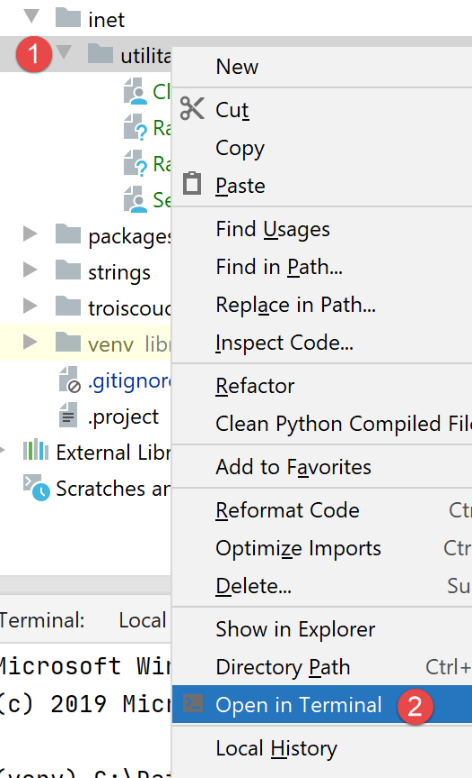
Dans l’une des fenêtres on lance le serveur [RawTcpServer] sur le port 100 :
(venv) C:\Data\st-2020\dev\python\cours-2020\python3-flask-2020\inet\utilitaires>RawTcpServer.exe 100
server : Serveur générique lancé sur le port 0.0.0.0:100
server : Attente d'un client...
server : Commandes disponibles : [list, send id [texte], close id, quit]
user :
- ligne 1, nous sommes placés dans le dossier des utilitaires ;
- ligne 1, nous lançons le serveur TCP sur le port 100 ;
- lignes 2-4, le serveur se met en attente d’un client TCP et affiche une liste de commandes que l’utilisateur au clavier peut taper ;
- ligne 5, le serveur attend une commande tapée par l’utilisateur au clavier ;
Dans l’autre fenêtre de commandes, on lance le client TCP :
(venv) C:\Data\st-2020\dev\python\cours-2020\python3-flask-2020\inet\utilitaires>RawTcpClient.exe localhost 100
Client [DESKTOP-30FF5FB:51173] connecté au serveur [localhost-100]
Tapez vos commandes (quit pour arrêter) :
- ligne 1, nous sommes placés dans le dossier des utilitaires ;
- ligne 1 nous lançons le client TCP : nous lui disons de se connecter au port 100 de la machine locale (celle sur laquelle s’exécute le code de [RawTcpClient]) ;
- ligne 2, le client a réussi à se connecter au serveur. On indique les coordonnées du client : il est sur la machine [DESKTOP-30FF5FB] (la machine locale dans cet exemple) et utilise le port [51173] pour communiquer avec le serveur :
- ligne 3, le client attend une commande tapée par l’utilisateur au clavier ;
Revenons sur la fenêtre du serveur. Son contenu a évolué :
(venv) C:\Data\st-2020\dev\python\cours-2020\python3-flask-2020\inet\utilitaires>RawTcpServer.exe 100
server : Serveur générique lancé sur le port 0.0.0.0:100
server : Attente d'un client...
server : Commandes disponibles : [list, send id [texte], close id, quit]
user : server : Client 1-DESKTOP-30FF5FB-51173 connecté...
server : Attente d'un client...
- ligne 5, un client a été détecté. Le serveur lui a donné le n° 1. Le serveur a correctement identifié le client distant (machine et port) ;
- ligne 6, le serveur se remet en attente d’un nouveau client ;
Revenons sur la fenêtre du client et envoyons une commande au serveur :
(venv) C:\Data\st-2020\dev\python\cours-2020\python3-flask-2020\inet\utilitaires>RawTcpClient.exe localhost 100
Client [DESKTOP-30FF5FB:51173] connecté au serveur [localhost-100]
Tapez vos commandes (quit pour arrêter) :
hello from client
- ligne 4, la commande envoyée au serveur ;
Revenons sur la fenêtre du serveur. Son contenu a évolué :
(venv) C:\Data\st-2020\dev\python\cours-2020\python3-flask-2020\inet\utilitaires>RawTcpServer.exe 100
server : Serveur générique lancé sur le port 0.0.0.0:100
server : Attente d'un client...
server : Commandes disponibles : [list, send id [texte], close id, quit]
user : server : Client 1-DESKTOP-30FF5FB-51173 connecté...
server : Attente d'un client...
client 1 : [hello from client]
- ligne 7, entre crochets, le message reçu par le serveur ;
Envoyons une réponse au client :
(venv) C:\Data\st-2020\dev\python\cours-2020\python3-flask-2020\inet\utilitaires>RawTcpServer.exe 100
server : Serveur générique lancé sur le port 0.0.0.0:100
server : Attente d'un client...
server : Commandes disponibles : [list, send id [texte], close id, quit]
user : server : Client 1-DESKTOP-30FF5FB-51173 connecté...
server : Attente d'un client...
client 1 : [hello from client]
send 1 [hello from server]
user :
- ligne 8, la réponse envoyée au client 1. Seul le texte entre les crochets est envoyé, pas les crochets eux-mêmes ;
Revenons à la fenêtre du client :
(venv) C:\Data\st-2020\dev\python\cours-2020\python3-flask-2020\inet\utilitaires>RawTcpClient.exe localhost 100
Client [DESKTOP-30FF5FB:51173] connecté au serveur [localhost-100]
Tapez vos commandes (quit pour arrêter) :
hello from client
<-- [hello from server]
- ligne 5, la réponse reçue par le client. Le texte reçu est celui entre crochets ;
Revenons à la fenêtre du serveur pour voir d’autres commandes :
(venv) C:\Data\st-2020\dev\python\cours-2020\python3-flask-2020\inet\utilitaires>RawTcpServer.exe 100
server : Serveur générique lancé sur le port 0.0.0.0:100
server : Attente d'un client...
server : Commandes disponibles : [list, send id [texte], close id, quit]
user : server : Client 1-DESKTOP-30FF5FB-51173 connecté...
server : Attente d'un client...
client 1 : [hello from client]
send 1 [hello from server]
user : list
server : id=1-name=DESKTOP-30FF5FB-51173
user : close 1
server : Connexion client 1 fermée...
user : quit
server : fin du service
- ligne 9, nous demandons la liste des clients ;
- ligne 10, la réponse ;
- ligne 11, nous fermons la connexion avec le client n° 1 ;
- ligne 12, la confirmation du serveur ;
- ligne 13, nous arrêtons le serveur ;
- ligne 14, la confirmation du serveur ;
Revenons à la fenêtre du client :
(venv) C:\Data\st-2020\dev\python\cours-2020\python3-flask-2020\inet\utilitaires>RawTcpClient.exe localhost 100
Client [DESKTOP-30FF5FB:51173] connecté au serveur [localhost-100]
Tapez vos commandes (quit pour arrêter) :
hello from client
<-- [hello from server]
Perte de la connexion avec le serveur...
- ligne 6, le client a détecté la fin du service ;
Deux fichiers de logs ont été créés, un pour le serveur, un autre pour le client :

- en [1], les logs du serveur : le nom du fichier est le nom du client sous la forme [machine-port]. Cela permet d’avoir des fichiers de logs différents pour des clients différents ;
- en [2], les logs du client : le nom du fichier est le nom du serveur sous la forme [machine-port] ;
Les logs du serveur sont les suivants :
<-- [hello from client]
--> [hello from server]
Les logs du client sont les suivants :
--> [hello from client]
<-- [hello from server]
21.3. Obtenir le nom ou l'adresse IP d'une machine de l'Internet

Les machines de l’internet sont identifiées par une adresse IP (IPv4 ou IPv6) et le plus souvent par un nom. Mais finalement seule l’adresse IP est utilisée par les protocoles de communication de l’internet. Il faut donc connaître l’adresse IP d’une machine identifiée par son nom.
Le script [ip-01.py] est le suivant :
# imports
import socket
# ------------------------------------------------
def get_ip_and_name(nom_machine: str):
# nom_machine : nom de la machine dont on veut l'adresse IP
try:
# nom_machine-->adresse IP
ip = socket.gethostbyname(nom_machine)
print(f"ip[{nom_machine}]={ip}")
except socket.error as erreur:
# on affiche l'erreur
print(f"ip[{nom_machine}]={erreur}")
return
try:
# adresse IP --> nom_machine
names = socket.gethostbyaddr(ip)
print(f"names[{ip}]={names}")
except socket.error as erreur:
# on affiche l'erreur
print(f"names[{ip}]={erreur}")
return
# ---------------------------------------- main
# les machines internet
hosts = ["istia.univ-angers.fr", "www.univ-angers.fr", "sergetahe.com", "localhost", "xx"]
# adresses IP des machines de HOTES
for host in hosts:
print("-------------------------------------")
get_ip_and_name(host)
# fin
print("Terminé...")
Commentaires
- ligne 2 : le module [socket] fournit les fonctions nécessaires à la gestion des sockets internet. [socket] signifie prise électrique, prise de réseau ;
- ligne 6 : la fonction [get_ip_and_name] permet à partir du nom internet d'une machine d'obtenir :
- l'adresse IP de la machine ;
- le nom de la machine obtenu à partir de l'adresse IP précédente ;
- ligne 10 : la fonction [socket.gethostbyname] permet d'obtenir l'adresse IP d'une machine à partir d'un de ces noms (une machine internet peut avoir un nom principal et des alias) ;
- ligne 12 : les fonctions sur les sockets lancent l'exception [socket.error] dès qu'une erreur survient ;
- ligne 19 : la fonction [socket.gethostbyaddr] permet d'obtenir le nom d'une machine à partir de son adresse IP. On va voir qu'on peut obtenir un nom différent de celui passé ligne 6 ;
- ligne 30 : une liste de noms de machines. Le dernier nom est erroné. Le nom [localhost] désigne la machine sur laquelle vous travaillez et qui exécute le script ;
- ligne 33-35 : on affiche les IP de ces machines ;
Résultats :
C:\Data\st-2020\dev\python\cours-2020\python3-flask-2020\venv\Scripts\python.exe C:/Data/st-2020/dev/python/cours-2020/python3-flask-2020/inet/ip/ip_01.py
-------------------------------------
ip[istia.univ-angers.fr]=193.49.144.41
names[193.49.144.41]=('ametys-fo-2.univ-angers.fr', [], ['193.49.144.41'])
-------------------------------------
ip[www.univ-angers.fr]=193.49.144.41
names[193.49.144.41]=('ametys-fo-2.univ-angers.fr', [], ['193.49.144.41'])
-------------------------------------
ip[sergetahe.com]=87.98.154.146
names[87.98.154.146]=('cluster026.hosting.ovh.net', [], ['87.98.154.146'])
-------------------------------------
ip[localhost]=127.0.0.1
names[127.0.0.1]=('DESKTOP-30FF5FB', [], ['127.0.0.1'])
-------------------------------------
ip[xx]=[Errno 11001] getaddrinfo failed
Terminé...
Process finished with exit code 0
21.4. Le protocole HTTP (HyperText Transfer Protocol)
21.4.1. Exemple 1
Lorsqu’un navigateur affiche une URL, il est le client d’un serveur web ou dit autrement d’un serveur HTTP. C’est lui qui prend l’initiative et il commence par envoyer un certain nombre de commandes au serveur. Pour ce premier exemple :
- le serveur sera l’utilitaire [RawTcpServer] ;
- le client sera un navigateur ;
Nous lançons d’abord le serveur sur le port 100 :
(venv) C:\Data\st-2020\dev\python\cours-2020\python3-flask-2020\inet\utilitaires>RawTcpServer.exe 100
server : Serveur générique lancé sur le port 0.0.0.0:100
server : Attente d'un client...
server : Commandes disponibles : [list, send id [texte], close id, quit]
user :
Puis avec un navigateur, nous demandons l’URL [http://localhost:100], ç-a-d que nous disons que le serveur HTTP interrogé travaille sur le port 100 de la machine locale :
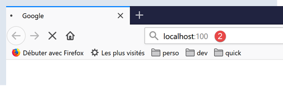
Revenons sur la fenêtre du serveur :
(venv) C:\Data\st-2020\dev\python\cours-2020\python3-flask-2020\inet\utilitaires>RawTcpServer.exe 100
server : Serveur générique lancé sur le port 0.0.0.0:100
server : Attente d'un client...
server : Commandes disponibles : [list, send id [texte], close id, quit]
user : server : Client 1-DESKTOP-30FF5FB-51438 connecté...
server : Attente d'un client...
server : Client 2-DESKTOP-30FF5FB-51439 connecté...
server : Attente d'un client...
client 1 : [GET / HTTP/1.1]
client 1 : [Host: localhost:100]
client 1 : [Connection: keep-alive]
client 1 : [DNT: 1]
client 1 : [Upgrade-Insecure-Requests: 1]
client 1 : [User-Agent: Mozilla/5.0 (Windows NT 10.0; Win64; x64) AppleWebKit/537.36 (KHTML, like Gecko) Chrome/83.0.4103.116 Safari/537.36]
client 1 : [Accept: text/html,application/xhtml+xml,application/xml;q=0.9,image/webp,image/apng,*/*;q=0.8,application/signed-exchange;v=b3;q=0.9]
client 1 : [Sec-Fetch-Site: none]
client 1 : [Sec-Fetch-Mode: navigate]
client 1 : [Sec-Fetch-User: ?1]
client 1 : [Sec-Fetch-Dest: document]
client 1 : [Accept-Encoding: gzip, deflate, br]
client 1 : [Accept-Language: fr-FR,fr;q=0.9,en-US;q=0.8,en;q=0.7]
client 1 : []
server : Client 3-DESKTOP-30FF5FB-51441 connecté...
server : Attente d'un client...
- ligne 5, le client qui s’est connecté ;
- lignes 9-22 : la série de lignes de texte qu’il a envoyées :
- ligne 9 : cette ligne a le format [GET URL HTTP/1.1]. Elle demande l’URL / et demande au serveur d’utiliser le protocole HTTP 1.1 ;
- ligne 10 : cette ligne a le format [Host: serveur:port]. La casse de la commande [Host] n’importe pas. On rappelle ici que le client interroge un serveur local opérant sur le port 100 ;
- ligne 14 : la commande [User-Agent] donne l’identité du client ;
- ligne 15 : la commande [Accept] indique quels types de document sont acceptés par le client ;
- ligne 21 : la commande [Accept-Language] indique dans quelle langue sont souhaités les documents demandés s’ils existent en plusieurs langues ;
- ligne 11 : la commande [Connection] indique le mode de connexion souhaité : [keep-alive] indique que la connexion doit être maintenue jusqu’à ce que les échanges soient terminés ;
- ligne 22 : le client termine ses commandes par une ligne vide ;
Nous terminons la connexion en terminant le serveur :
client 1 : []
server : Client 3-DESKTOP-30FF5FB-51441 connecté...
server : Attente d'un client...
quit
server : fin du service
21.4.2. Exemple 2
Maintenant que nous connaissons les commandes envoyées par un navigateur pour réclamer une URL, nous allons réclamer cette URL avec notre client TCP [RawTcpClient]. Le serveur Apache de Laragon (paragraphe |Installation de Laragon|) sera notre serveur web.
Lançons Laragon puis le serveur web Apache :

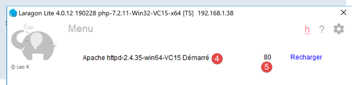
Maintenant avec un navigateur, demandons l’URL [http://localhost:80]. Ici nous ne précisons que le serveur [localhost:80] et pas d’URL de document. Dans ce cas c’est l’URL / qui est demandée, ç-à-d la racine du serveur web :
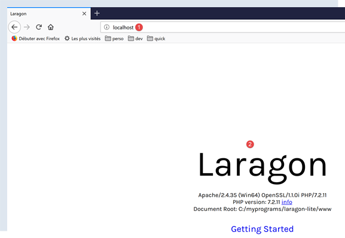
- en [1], l’URL demandée. On a tapé initialement [http://localhost:80] et le navigateur (Firefox ici) l’a transformée simplement en [localhost] car le protocole [http] est implicite lorsqu’aucun protocole n’est mentionné et le port [80] est implicite lorsque le port n’est pas précisé ;
- en [2], la page racine / du serveur web interrogé ;
Maintenant, visualisons le texte reçu par le navigateur :

- on clique droit sur la page reçue et on choisit l’option [2]. On obtient le code source suivant :
<!DOCTYPE html>
<html>
<head>
<title>Laragon</title>
<link href="https://fonts.googleapis.com/css?family=Karla:400" rel="stylesheet" type="text/css">
<style>
html, body {
height: 100%;
}
body {
margin: 0;
padding: 0;
width: 100%;
display: table;
font-weight: 100;
font-family: 'Karla';
}
.container {
text-align: center;
display: table-cell;
vertical-align: middle;
}
.content {
text-align: center;
display: inline-block;
}
.title {
font-size: 96px;
}
.opt {
margin-top: 30px;
}
.opt a {
text-decoration: none;
font-size: 150%;
}
a:hover {
color: red;
}
</style>
</head>
<body>
<div class="container">
<div class="content">
<div class="title" title="Laragon">Laragon</div>
<div class="info">
<br />
Apache/2.4.35 (Win64) OpenSSL/1.1.1b PHP/7.2.19<br />
PHP version: 7.2.19 <span><a title="phpinfo()" href="/?q=info">info</a></span><br />
Document Root: C:/MyPrograms/laragon/www<br />
</div>
<div class="opt">
<div><a title="Getting Started" href="https://laragon.org/docs">Getting Started</a></div>
</div>
</div>
</div>
</body>
</html>
Maintenant demandons l’URL [http://localhost:80] avec notre client TCP :
(venv) C:\Data\st-2020\dev\python\cours-2020\python3-flask-2020\inet\utilitaires>RawTcpClient.exe localhost 80
Client [DESKTOP-30FF5FB:51541] connecté au serveur [localhost-80]
Tapez vos commandes (quit pour arrêter) :
- ligne 1, nous nous connectons au port 80 du serveur localhost. C’est là qu’opère le serveur web de Laragon ;
Nous tapons maintenant les commandes que nous avons découvertes dans le paragraphe précédent :
(venv) C:\Data\st-2020\dev\python\cours-2020\python3-flask-2020\inet\utilitaires>RawTcpClient.exe localhost 80
Client [DESKTOP-30FF5FB:51544] connecté au serveur [localhost-80]
Tapez vos commandes (quit pour arrêter) :
GET / HTTP/1.1
Host: localhost:80
<-- [HTTP/1.1 200 OK]
<-- [Date: Sun, 05 Jul 2020 12:42:14 GMT]
<-- [Server: Apache/2.4.35 (Win64) OpenSSL/1.1.1b PHP/7.2.19]
<-- [X-Powered-By: PHP/7.2.19]
<-- [Content-Length: 1776]
<-- [Content-Type: text/html; charset=UTF-8]
<-- []
<-- [<!DOCTYPE html>]
<-- [<html>]
<-- [ <head>]
<-- [ <title>Laragon</title>]
<-- []
<-- [ <link href="https://fonts.googleapis.com/css?family=Karla:400" rel="stylesheet" type="text/css">]
<-- []
<-- [ <style>]
<-- [ html, body {]
<-- [ height: 100%;]
<-- [ }]
<-- []
<-- [ body {]
<-- [ margin: 0;]
<-- [ padding: 0;]
<-- [ width: 100%;]
<-- [ display: table;]
<-- [ font-weight: 100;]
<-- [ font-family: 'Karla';]
<-- [ }]
<-- []
<-- [ .container {]
<-- [ text-align: center;]
<-- [ display: table-cell;]
<-- [ vertical-align: middle;]
<-- [ }]
<-- []
<-- [ .content {]
<-- [ text-align: center;]
<-- [ display: inline-block;]
<-- [ }]
<-- []
<-- [ .title {]
<-- [ font-size: 96px;]
<-- [ }]
<-- []
<-- [ .opt {]
<-- [ margin-top: 30px;]
<-- [ }]
<-- []
<-- [ .opt a {]
<-- [ text-decoration: none;]
<-- [ font-size: 150%;]
<-- [ }]
<-- [ ]
<-- [ a:hover {]
<-- [ color: red;]
<-- [ }]
<-- [ </style>]
<-- [ </head>]
<-- [ <body>]
<-- [ <div class="container">]
<-- [ <div class="content">]
<-- [ <div class="title" title="Laragon">Laragon</div>]
<-- [ ]
<-- [ <div class="info"><br />]
<-- [ Apache/2.4.35 (Win64) OpenSSL/1.1.1b PHP/7.2.19<br />]
<-- [ PHP version: 7.2.19 <span><a title="phpinfo()" href="/?q=info">info</a></span><br />]
<-- [ Document Root: C:/MyPrograms/laragon/www<br />]
<-- []
<-- [ </div>]
<-- [ <div class="opt">]
<-- [ <div><a title="Getting Started" href="https://laragon.org/docs">Getting Started</a></div>]
<-- [ </div>]
<-- [ </div>]
<-- []
<-- [ </div>]
<-- [ </body>]
<-- [</html>]
Perte de la connexion avec le serveur...
- ligne 4, la commande [GET]. On demande la racine / du serveur web ;
- ligne 5, la commande [Host] ;
- ce sont les deux seules commandes indispensables. Pour les autres commandes, le serveur web prendra des valeurs par défaut ;
- ligne 6, la ligne vide qui doit terminer les commandes du client ;
- dessous la ligne 6, vient la réponse du serveur web ;
- lignes 7-12 : les entêtes HTTP de la réponse du serveur ;
- ligne 13 : la ligne vide qui signale la fin des entêtes http ;
- lignes 14-82, le document HTML demandé ligne 4 ;
Nous chargeons le fichier de logs [localhost-80.txt] :

--> [GET / HTTP/1.1]
--> [Host: localhost:80]
--> []
<-- [HTTP/1.1 200 OK]
<-- [Date: Sun, 05 Jul 2020 12:42:14 GMT]
<-- [Server: Apache/2.4.35 (Win64) OpenSSL/1.1.1b PHP/7.2.19]
<-- [X-Powered-By: PHP/7.2.19]
<-- [Content-Length: 1776]
<-- [Content-Type: text/html; charset=UTF-8]
<-- []
<-- [<!DOCTYPE html>]
<-- [<html>]
<-- [ <head>]
<-- [ <title>Laragon</title>]
<-- []
<-- [ <link href="https://fonts.googleapis.com/css?family=Karla:400" rel="stylesheet" type="text/css">]
<-- []
<-- [ <style>]
<-- [ html, body {]
<-- [ height: 100%;]
<-- [ }]
<-- []
<-- [ body {]
<-- [ margin: 0;]
<-- [ padding: 0;]
<-- [ width: 100%;]
<-- [ display: table;]
<-- [ font-weight: 100;]
<-- [ font-family: 'Karla';]
<-- [ }]
<-- []
<-- [ .container {]
<-- [ text-align: center;]
<-- [ display: table-cell;]
<-- [ vertical-align: middle;]
<-- [ }]
<-- []
<-- [ .content {]
<-- [ text-align: center;]
<-- [ display: inline-block;]
<-- [ }]
<-- []
<-- [ .title {]
<-- [ font-size: 96px;]
<-- [ }]
<-- []
<-- [ .opt {]
<-- [ margin-top: 30px;]
<-- [ }]
<-- []
<-- [ .opt a {]
<-- [ text-decoration: none;]
<-- [ font-size: 150%;]
<-- [ }]
<-- [ ]
<-- [ a:hover {]
<-- [ color: red;]
<-- [ }]
<-- [ </style>]
<-- [ </head>]
<-- [ <body>]
<-- [ <div class="container">]
<-- [ <div class="content">]
<-- [ <div class="title" title="Laragon">Laragon</div>]
<-- [ ]
<-- [ <div class="info"><br />]
<-- [ Apache/2.4.35 (Win64) OpenSSL/1.1.1b PHP/7.2.19<br />]
<-- [ PHP version: 7.2.19 <span><a title="phpinfo()" href="/?q=info">info</a></span><br />]
<-- [ Document Root: C:/MyPrograms/laragon/www<br />]
<-- []
<-- [ </div>]
<-- [ <div class="opt">]
<-- [ <div><a title="Getting Started" href="https://laragon.org/docs">Getting Started</a></div>]
<-- [ </div>]
<-- [ </div>]
<-- []
<-- [ </div>]
<-- [ </body>]
<-- [</html>]
- lignes 11-79 : le document HTML reçu. Dans l’exemple précédent, Firefox avait reçu le même ;
Nous avons désormais les bases pour programmer un client TCP qui demanderait une URL.
21.4.3. Exemple 3

Le script [http/01/main.py] est un client HTTP configuré par le fichier [config.py]. Le contenu de celui-ci est le suivant :
def configure():
# URLs à interroger
urls = [
# site : nom du site auquel se connecter
# port : port du service web
# GET : URL demandée
# headers : entêtes HTTP à envoyer dans la requête
# endOfLine : marque de fin de ligne dans les entêtes HTTP envoyés
# encoding : encodage de la réponse du serveur
# timeout : temps d'attente maximum d'une réponse du serveur
{
"site": "localhost",
"port": 80,
"GET": "/",
"headers": {
"Host": "localhost:80",
"User-Agent": "client Python",
"Accept": "text/HTML",
"Accept-Language": "fr"
},
"endOfLine": "\r\n",
"encoding": "utf-8",
"timeout": 0.5
},
{
"site": "sergetahe.com",
"port": 80,
"GET": "/",
"headers": {
"Host": "sergetahe.com:80",
"User-Agent": "client Python",
"Accept": "text/HTML",
"Accept-Language": "fr"
},
"endOfLine": "\r\n",
"encoding": "utf-8",
"timeout": 5
},
{
"site": "tahe.developpez.com",
"port": 443,
"GET": "/",
"headers": {
"Host": "tahe.developpez.com:443",
"User-Agent": "client Python",
"Accept": "text/HTML",
"Accept-Language": "fr"
},
"endOfLine": "\r\n",
"encoding": "utf-8",
"timeout": 2
},
{
"site": "www.sergetahe.com",
"port": 80,
"GET": "/cours-tutoriels-de-programmation/",
"headers": {
"Host": "sergetahe.com:80",
"User-Agent": "client Python",
"Accept": "text/HTML",
"Accept-Language": "fr"
},
"endOfLine": "\r\n",
"encoding": "utf-8",
"timeout": 5
}
]
# on rend la configuration
return {
"urls": urls
}
- le contenu du fichier est une liste d’URL, chaque élément de la liste étant un dictionnaire. Ce dictionnaire indique comment se connecter au sité désigné par la clé [site] ;
- lignes 4-10 : la signification des clés de chaque dictionnaire ;
Le script [http/01/main.py] est le suivant :
# imports
import codecs
import socket
# -----------------------------------------------------------------------
def get_url(url: dict, suivi: bool = True):
# lit l'URL url["GET"] du site url[site] et la stocke dans le fichier url[site].html
# le dialogue client /serveur se fait selon le protocole HTTP indiqué dans le dictionnaire [url]
# on laisse remonter les exceptions
sock = None
html = None
try:
# connexion à [site] sur le port 80 avec un timeout
site = url['site']
sock = socket.create_connection((site, int(url['port'])), float(url['timeout']))
# connexion représente un flux de communication bidirectionnel
# entre le client (ce programme) et le serveur web contacté
# ce canal est utilisé pour les échanges de commandes et d'informations
# le protocole de dialogue est HTTP
# création du fichier site.html - on change les caractères gênants pour un nom de fichier
site2 = site.replace("/", "_")
site2 = site2.replace(".", "_")
html_filename = f'{site2}.html'
html = codecs.open(f"output/{html_filename}", "w", "utf-8")
# le client va commencer le dialogue HTTP avec le serveur
if suivi:
print(f"Client : début de la communication avec le serveur [{site}]")
# selon les serveurs, les lignes du client doivent se terminer par \n ou \r\n
end_of_line = url["endOfLine"]
# le client envoie la commande GET pour demander l'URL config["GET"]
# syntaxe GET URL HTTP/1.1
commande = f"GET {url['GET']} HTTP/1.1{end_of_line}"
# suivi ?
if suivi:
print(f"--> {commande}", end='')
# on envoie la commande au serveur
sock.send(bytearray(commande, 'utf-8'))
# émission des entêtes HTTP
for verb, value in url['headers'].items():
# on construit la commande à envoyer
commande = f"{verb}: {value}{end_of_line}"
# suivi ?
if suivi:
print(f"--> {commande}", end='')
# on envoie la commande au serveur
sock.send(bytearray(commande, 'utf-8'))
# on envoie l'entête HTTP [Connection: close] pour demander au serveur web
# de fermer la connexion lorsqu'il aura envoyé le document demandé
sock.send(bytearray(f"Connection: close{end_of_line}", 'utf-8'))
# les entêtes (headers) du protocole HTTP doivent se terminer par une ligne vide
sock.send(bytearray(end_of_line, 'utf-8'))
#
# le serveur va maintenant répondre sur le canal sock. Il va envoyer toutes
# ses données puis fermer le canal. Le client lit donc tout ce qui arrive de sock
# jusqu'à la fermeture du canal
#
# on lit tout d'abord les entêtes HTTP envoyés par le serveur
# ils se terminent eux-aussi par une ligne vide
if suivi:
print(f"Réponse du serveur [{site}]")
# lecture de la socket comme si elle était un fichier texte
encoding = f"{url['encoding']}" if url['encoding'] else None
if encoding:
file = sock.makefile(encoding=encoding)
else:
file = sock.makefile()
# on exploite ce fichier ligne par ligne
fini = False
while not fini:
# lecture ligne courante
ligne = file.readline().strip()
# a-t-on une ligne non vide ?
if ligne:
if suivi:
# on affiche l'entête HTTP
print(f"<-- {ligne}")
else:
# c'était la ligne vide - les entêtes HTTP sont terminés
fini = True
# on lit le document HTML qui va suivre la ligne vide
# lecture ligne courante
ligne = file.readline()
while ligne:
# enregistrement dans le fichier de logs
html.write(str(ligne))
# ligne suivante
ligne = file.readline()
# la boucle se finit lorsque le serveur ferme la connexion
finally:
# le client ferme la connexion
if sock:
sock.close()
# fermeture du fichier html
if html:
html.close()
# -------------------main
# on configure l'application
import config
config = config.configure()
# obtenir les URL du fichier de configuration
for url in config['urls']:
print("-------------------------")
print(url['site'])
print("-------------------------")
try:
# lecture URL du site [site]
get_url(url)
except BaseException as erreur:
print(f"L'erreur suivante s'est produite : {erreur}")
finally:
pass
# fin
print("Terminé...")
Commentaires du code :
- lignes 108-109 : le dictionnaire [config] du module [config.py] est récupéré ;
- ligne 111-122 : ce dictionnaire est exploité ;
- ligne 118, 7 : la fonction [get_url(url)] demande un document du site web url[site] et le stocke dans le fichier texte url[site].HTML. Par défaut, les échanges client/serveur sont logués sur la console (suivi=True) ;
- on fait tout dans un [try / finally] (lignes 14-96). Il n'y a pas de clause [except]. Les exceptions vont remonter au code appelant et c'est celui-ci qui les arrête et les affiche (lignes 119-120) ;
- lignes 16-17 : ouverture d'une connexion vers le serveur web. La fonction [socket.create_connection] admet trois paramètres :
- [param1] : est le nom de la machine de l'internet qu'on veut atteindre ;
- [param2] : est le n° du port du service auquel on veut se connecter ;
- [param3] : [socket.create_connection] rend un socket et [param3], s'il est présent, désigne le timeout du socket créé. Le timeout est le délai maximal d'attente du socket lorsqu'il attend une réponse de la machine distante ;
- lignes 27-28 : création du fichier [site.html] dans lequel on stockera le document HTML reçu ;
- lignes 34-43 : la première commande du client doit être la commande [GET URL HTTP/1.1] ;
- ligne 43 : la fonction [sock.send] permet au client d'envoyer des données au serveur. Ici la ligne de texte envoyée a la signification suivante : "Je veux (GET) la page [URL] du site web auquel je suis connecté. Je travaille avec le protocole HTTP version 1.1" ;
- ligne 43 : l'instruction [sock.send(bytearray(commande, 'utf-8'))] envoie un tableau d'octets octets (bytearray). Ce tableau est obtenu par conversion de la chaîne [commande] en une suite d'octets codés en UTF-8 ;
- lignes 44-52 : on envoie les autres lignes du protocole HTTP [Host, User-Agent, Accept, Accept-Language…]. Leur ordre n’importe pas ;
- lignes 53-55 : on envoie l'entête HTTP [Connection: close] pour demander au serveur de fermer sa connexion lorsqu'il aura envoyé le document demandé. Par défaut il ne le fait pas. Il faut donc le lui demander explicitement. L'intérêt est que cette fermeture va être détectée côté client et c'est comme cela que celui-ci saura qu'il aura reçu tout le document demandé ;
- lignes 56-57 : on envoie une ligne vide au serveur pour signifier que le client a terminé d’envoyer ses entêtes HTTP et qu’il attend désormais le document demandé ;
- lignes 68-86 : le serveur va tout d’abord envoyer une série d’entêtes HTTP qui vont donner diverses informations sur le document demandé. Ces entêtes se terminent par une ligne vide ;
- lignes 69-73 : pour pouvoir lire la réponse du serveur, ligne par ligne, on utilise la méthode [sock.makefile(encoding=encoding)]. Le paramètre facultatif [encoding] précise l'encodage du texte attendu. Après cette opération, le flux de lignes envoyées par le serveur va pouvoir être lu comme un fichiet texte classique ;
- ligne 78 : on lit une ligne envoyée par le serveur avec la méthode [readline]. On la débarrasse de ses espaces (blancs, marque de fin de ligne) de début et fin de ligne ;
- lignes 81-83 : si la ligne n'est pas vide et que le suivi a été demandé, la ligne reçue est affichée sur la console ;
- lignes 84-86 : si on a récupéré la ligne vide qui marque la fin des entêtes HTTP envoyés par le serveur alors on arrête la boucle de la ligne 76 ;
- lignes 90-95 : les lignes de texte de la réponse du serveur peuvent être lues ligne par ligne avec une boucle while et enregistrées dans le fichier texte [html]. Lorsque le serveur web a envoyé la totalité de la page qu'on lui a demandée, il ferme sa connexion avec le client. Côté client, cela sera détecté comme une fin de fichier et on sortira de la boucle des lignes 90-95 ;
- lignes 96-102 : erreur ou pas, on libère toutes les ressources utilisées par le code ;
Résultats :
La console affiche les logs suivants :
C:\Data\st-2020\dev\python\cours-2020\python3-flask-2020\venv\Scripts\python.exe C:/Data/st-2020/dev/python/cours-2020/python3-flask-2020/inet/http/01/main.py
-------------------------
localhost
-------------------------
Client : début de la communication avec le serveur [localhost]
--> GET / HTTP/1.1
--> Host: localhost:80
--> User-Agent: client Python
--> Accept: text/HTML
--> Accept-Language: fr
Réponse du serveur [localhost]
<-- HTTP/1.1 200 OK
<-- Date: Sun, 05 Jul 2020 16:27:46 GMT
<-- Server: Apache/2.4.35 (Win64) OpenSSL/1.1.1b PHP/7.2.19
<-- X-Powered-By: PHP/7.2.19
<-- Content-Length: 1776
<-- Connection: close
<-- Content-Type: text/html; charset=UTF-8
-------------------------
sergetahe.com
-------------------------
Client : début de la communication avec le serveur [sergetahe.com]
--> GET / HTTP/1.1
--> Host: sergetahe.com:80
--> User-Agent: client Python
--> Accept: text/HTML
--> Accept-Language: fr
Réponse du serveur [sergetahe.com]
<-- HTTP/1.1 302 Found
<-- Date: Sun, 05 Jul 2020 16:27:45 GMT
<-- Content-Type: text/html; charset=UTF-8
<-- Transfer-Encoding: chunked
<-- Connection: close
<-- Server: Apache
<-- X-Powered-By: PHP/7.3
<-- Location: http://sergetahe.com:80/cours-tutoriels-de-programmation
<-- Set-Cookie: SERVERID68971=2620178|XwH/h|XwH/h; path=/
<-- X-IPLB-Instance: 17106
-------------------------
tahe.developpez.com
-------------------------
Client : début de la communication avec le serveur [tahe.developpez.com]
--> GET / HTTP/1.1
--> Host: tahe.developpez.com:443
--> User-Agent: client Python
--> Accept: text/HTML
--> Accept-Language: fr
Réponse du serveur [tahe.developpez.com]
<-- HTTP/1.1 400 Bad Request
<-- Date: Sun, 05 Jul 2020 16:27:45 GMT
<-- Server: Apache/2.4.38 (Debian)
<-- Content-Length: 453
<-- Connection: close
<-- Content-Type: text/html; charset=iso-8859-1
-------------------------
www.sergetahe.com
-------------------------
Client : début de la communication avec le serveur [www.sergetahe.com]
--> GET /cours-tutoriels-de-programmation/ HTTP/1.1
--> Host: sergetahe.com:80
--> User-Agent: client Python
--> Accept: text/HTML
--> Accept-Language: fr
Réponse du serveur [www.sergetahe.com]
<-- HTTP/1.1 301 Moved Permanently
<-- Date: Sun, 05 Jul 2020 16:27:45 GMT
<-- Content-Type: text/html; charset=iso-8859-1
<-- Content-Length: 263
<-- Connection: close
<-- Server: Apache
<-- Location: https://sergetahe.com/cours-tutoriels-de-programmation/
<-- Set-Cookie: SERVERID68971=2620178|XwH/h|XwH/h; path=/
<-- X-IPLB-Instance: 17095
Terminé...
Process finished with exit code 0
Commentaires
- ligne 12 : l'URL [http://localhost/] a été trouvée (code 200) ;
- ligne 29 : l'URL [http://sergetahe.com/] n'a pas été trouvée (code 302). Le code 302 signifie que la page demandée a changé d'URL. La nouvelle URL est indiquée par l'entête HTTP [Location] de la ligne 36 ;
- ligne 49 : la requête qui a été faite au serveur [http://tahe.developpez.com] est incorrecte (code 400) ;
- ligne 65 : l'URL [http://www.sergetahe.com/] n'a pas été trouvée (code 301). Le code 301 signifie que la page demandée a changé d'URL et ce de façon définitive. La nouvelle URL est indiquée par l'entête HTTP [Location] de la ligne 71 ;
De façon générale les codes 3xx, 4xx et 5xx d’un serveur HTTP sont des codes d’erreur.
L'exécution a produit fichiers :

Le fichier [output/localhost.HTML] reçu est le suivant :
<!DOCTYPE html>
<html>
<head>
<title>Laragon</title>
<link href="https://fonts.googleapis.com/css?family=Karla:400" rel="stylesheet" type="text/css">
<style>
html, body {
height: 100%;
}
body {
margin: 0;
padding: 0;
width: 100%;
display: table;
font-weight: 100;
font-family: 'Karla';
}
.container {
text-align: center;
display: table-cell;
vertical-align: middle;
}
.content {
text-align: center;
display: inline-block;
}
.title {
font-size: 96px;
}
.opt {
margin-top: 30px;
}
.opt a {
text-decoration: none;
font-size: 150%;
}
a:hover {
color: red;
}
</style>
</head>
<body>
<div class="container">
<div class="content">
<div class="title" title="Laragon">Laragon</div>
<div class="info"><br />
Apache/2.4.35 (Win64) OpenSSL/1.1.1b PHP/7.2.19<br />
PHP version: 7.2.19 <span><a title="phpinfo()" href="/?q=info">info</a></span><br />
Document Root: C:/MyPrograms/laragon/www<br />
</div>
<div class="opt">
<div><a title="Getting Started" href="https://laragon.org/docs">Getting Started</a></div>
</div>
</div>
</div>
</body>
</html>
Nous avons bien obtenu le même document qu’avec le navigateur Firefox.
Le document [output/sergetahe_com.html] reçu est le suivant :

La plupart des serveurs http envoient par morceaux leurs réponses aux requêtes qui leur sont faites. Chaque morceau envoyé est précédé d'une ligne indiquant le nombre d'octets du morceau qui suit. Cela permet au client de lire ce nombre exact d'octets pour avoir le morceau. Ici le 0 indique que le morceau qui suit a zéro octet. On rappelle que le serveur avait indiqué le document [http://sergetahe.com/] avait changé d'URL. Il n'a donc pas envoyé de document.
Le document [output/tahe_developpez_com.html] est le suivant :
<!DOCTYPE HTML PUBLIC "-//IETF//DTD HTML 2.0//EN">
<html><head>
<title>400 Bad Request</title>
</head><body>
<h1>Bad Request</h1>
<p>Your browser sent a request that this server could not understand.<br />
Reason: You're speaking plain HTTP to an SSL-enabled server port.<br />
Instead use the HTTPS scheme to access this URL, please.<br />
</p>
<hr>
<address>Apache/2.4.38 (Debian) Server at 2eurocents.developpez.com Port 80</address>
</body></html>
- lignes 1-12 : le serveur a envoyé un document HTML malgré le fait que la requête était incorrecte (ligne 49 des résultats). Le document HTML permet au serveur de préciser la cause de l’erreur. Celle-ci est indiquée aux lignes 6 et 7 :
- ligne 7 : notre client a utilisé le protocole HTTP ;
- ligne 8 : le serveur travaille avec le protocole HTTPS (S=sécurisé) et n’accepte pas le protocole HTTP ;
Le document [output/www_sergetahe_com.html] est le suivant :
<!DOCTYPE HTML PUBLIC "-//IETF//DTD HTML 2.0//EN">
<html><head>
<title>301 Moved Permanently</title>
</head><body>
<h1>Moved Permanently</h1>
<p>The document has moved <a href="https://sergetahe.com/cours-tutoriels-de-programmation/">here</a>.</p>
</body></html>
Là également, il s’est produit une erreur (ligne 3). Néanmoins, le serveur prend soin d’envoyer un document HTML détaillant celle-ci (lignes 1-7).
21.4.4. Exemple 4
Les exemples précédents nous ont montré que notre client HTTP était insuffisant. Nous allons maintenant présenter un outil appelé [curl] qui permet de récupérer des documents web en gérant les difficultés mentionnées : protocole HTTPS, document envoyé par morceaux, redirections… L’outil [curl] a été installé avec Laragon :

Ouvrons un terminal PyCharm [1] :

- en [1], l’accès aux terminaux de PyCharm ;
- en [2-3], les terminaux déjà actifs ;
- en [4], le dossier dans lequel vous êtes. Dans ce qui suit il n’importe pas ;
Dans le terminal nous tapons la commande suivante :
(venv) C:\Data\st-2020\dev\python\cours-2020\python3-flask-2020\inet\utilitaires>curl --help
Usage: curl [options...] <url>
--abstract-unix-socket <path> Connect via abstract Unix domain socket
--anyauth Pick any authentication method
-a, --append Append to target file when uploading
--basic Use HTTP Basic Authentication
--cacert <CA certificate> CA certificate to verify peer against
…
Le fait que la commande [curl –help] ait produit des résultats montre que la commande [curl] est dans le PATH du terminal. Sous Windows, le PATH est l’ensemble des dossiers explorés lorsque l’utilisateur tape une commande exécutable, ici [curl]. La valeur du PATH peut être connue :
(venv) C:\Data\st-2020\dev\python\cours-2020\python3-flask-2020\inet\utilitaires>echo %PATH%
C:\Data\st-2020\dev\python\cours-2020\python3-flask-2020\venv\Scripts;C:\Program Files (x86)\Common Files\Oracle\Java\javapath;C:\Program Files\Python38\Scripts\;C:\Program Files\Python38\;C:\windows\system32;C:\windows;C:\windows\System32\Wbem;C:\windows\System32\WindowsPowerShell\v1.0\;C:\windows\System32\OpenSSH\;C:\Program Files\Git\cmd;C:\Users\serge\AppData\Local\Microsoft\WindowsApps;;C:\Program Files\JetBrains\PyCharm Community Edition 2020.1.2\bin;
Ligne 2, les dossiers du PATH séparés par des points-virgules. Dans cette liste n’apparaît pas de dossier lié à Laragon. Si on enquête un peu, on trouve qu’il y a un [curl] dans le dossier [c:\windows\system32]. C’est celui-ci qui a répondu auparavant.
Si on veut utiliser l’outil [curl] livré avec Laragon, on pourra procéder comme suit :


- en [2], le terminal Laragon ;
- en [3], ce bouton permet de créer de nouveaux terminaux, chacun s’installant dans un onglet de la fenêtre ci-dessus ;
- en [4], on demande le PATH du terminal Laragon ;
- on obtient quelque chose de très différent de ce qui avait été obtenu dans un terminal PyCharm. Ce PATH contient de nombreux dossiers créés lors de l’installation de Laragon. Le dossier contenant l’outil [curl] en fait partie :
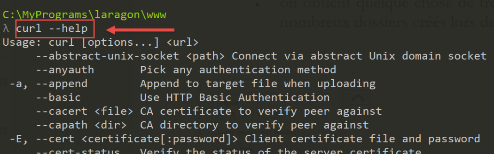
Par la suite, utilisez le terminal de votre choix. Sachez simplement que lorsque vous voulez utiliser un outil amené par Laragon, le terminal Laragon est à préférer.
La commande [curl --help] fait afficher toutes les options de configuration de [curl]. Il y en a plusieurs dizaines. Nous en utiliserons très peu. Pour demander une URL il suffit de taper la commande [curl URL]. Cette commande affichera sur la console le document demandé. Si on veut de plus les échanges HTTP entre le client et le serveur on écrira [curl --verbose URL]. Enfin pour enregistrer le document HTML demandé dans un fichier on écrira [curl --verbose --output fichier URL].
Pour éviter de polluer le système de fichiers de notre machine, déplaçons-nous à un autre endroit (j’utilise ici un terminal Laragon) :
λ cd \Temp\
C:\Temp
λ mkdir curl
C:\Temp
λ cd curl\
C:\Temp\curl
λ dir
Le volume dans le lecteur C s’appelle Local Disk
Le numéro de série du volume est B84C-D958
Répertoire de C:\Temp\curl
05/07/2020 19:31 <DIR> .
05/07/2020 19:31 <DIR> ..
0 fichier(s) 0 octets
2 Rép(s) 892 388 098 048 octets libres
- ligne 3, on se déplace dans le dossier [c:\temp]. Si ce dossier n’existe pas, vous pouvez le créer ou en choisir un autre ;
- ligne 6, on crée un dossier appelé [curl] ;
- ligne 9, on se positionne dessus ;
- ligne 12, on liste son contenu. Il est vide (ligne 20);
Assurez-vous que le serveur Apache de Laragon est lancé et avec [curl] demandez l’URL [http://localhost/] avec la commande [curl –verbose –output localhost.html http://localhost/]. On obtient les résultats suivants :
λ curl --verbose --output localhost.html http://localhost/
% Total % Received % Xferd Average Speed Time Time Time Current
Dload Upload Total Spent Left Speed
0 0 0 0 0 0 0 0 --:--:-- --:--:-- --:--:-- 0* Trying ::1...
* TCP_NODELAY set
* Trying 127.0.0.1...
* TCP_NODELAY set
0 0 0 0 0 0 0 0 --:--:-- 0:00:01 --:--:-- 0* Connected to localhost (::1) port 80 (#0)
0 0 0 0 0 0 0 0 --:--:-- 0:00:01 --:--:-- 0> GET / HTTP/1.1
> Host: localhost
> User-Agent: curl/7.63.0
> Accept: */*
>
< HTTP/1.1 200 OK
< Date: Sun, 05 Jul 2020 17:35:43 GMT
< Server: Apache/2.4.35 (Win64) OpenSSL/1.1.1b PHP/7.2.19
< X-Powered-By: PHP/7.2.19
< Content-Length: 1776
< Content-Type: text/html; charset=UTF-8
<
{ [1776 bytes data]
100 1776 100 1776 0 0 1062 0 0:00:01 0:00:01 --:--:-- 1062
* Connection #0 to host localhost left intact
- lignes 10-13 : lignes envoyées par [curl] au serveur [localhost]. On reconnaît le protocole HTTP ;
- lignes 14-20 : lignes envoyées en réponse par le serveur ;
- ligne 14 : indique qu’on a bien eu le document demandé ;
Le fichier [localhost.html] contient le document demandé. Vous pouvez le vérifier en chargeant le fichier dans un éditeur de texte.
Maintenant demandons l’URL [https://tahe.developpez.com:443/]. Pour avoir cette URL, le client HTTP doit savoir parler HTTPS. C’est le cas du client [curl].
Les résultats console sont les suivants :
C:\Temp\curl
λ curl --verbose --output tahe.developpez.com.html https://tahe.developpez.com:443/
% Total % Received % Xferd Average Speed Time Time Time Current
Dload Upload Total Spent Left Speed
0 0 0 0 0 0 0 0 --:--:-- --:--:-- --:--:-- 0* Trying 87.98.130.52...
* TCP_NODELAY set
0 0 0 0 0 0 0 0 --:--:-- --:--:-- --:--:-- 0* Connected to tahe.developpez.com (87.98.130.52) port 443 (#0)
* ALPN, offering h2
* ALPN, offering http/1.1
* successfully set certificate verify locations:
* CAfile: C:\MyPrograms\laragon\bin\laragon\utils\curl-ca-bundle.crt
CApath: none
} [5 bytes data]
* TLSv1.3 (OUT), TLS handshake, Client hello (1):
} [512 bytes data]
* TLSv1.3 (IN), TLS handshake, Server hello (2):
{ [122 bytes data]
* TLSv1.3 (IN), TLS handshake, Encrypted Extensions (8):
{ [25 bytes data]
* TLSv1.3 (IN), TLS handshake, Certificate (11):
{ [2563 bytes data]
* TLSv1.3 (IN), TLS handshake, CERT verify (15):
{ [264 bytes data]
* TLSv1.3 (IN), TLS handshake, Finished (20):
{ [52 bytes data]
* TLSv1.3 (OUT), TLS change cipher, Change cipher spec (1):
} [1 bytes data]
* TLSv1.3 (OUT), TLS handshake, Finished (20):
} [52 bytes data]
* SSL connection using TLSv1.3 / TLS_AES_256_GCM_SHA384
* ALPN, server accepted to use http/1.1
* Server certificate:
* subject: CN=*.developpez.com
* start date: Jul 1 15:38:30 2020 GMT
* expire date: Sep 29 15:38:30 2020 GMT
* subjectAltName: host "tahe.developpez.com" matched cert's "*.developpez.com"
* issuer: C=US; O=Let's Encrypt; CN=Let's Encrypt Authority X3
* SSL certificate verify ok.
} [5 bytes data]
> GET / HTTP/1.1
> Host: tahe.developpez.com
> User-Agent: curl/7.63.0
> Accept: */*
>
{ [5 bytes data]
* TLSv1.3 (IN), TLS handshake, Newsession Ticket (4):
{ [281 bytes data]
* TLSv1.3 (IN), TLS handshake, Newsession Ticket (4):
{ [297 bytes data]
* old SSL session ID is stale, removing
{ [5 bytes data]
< HTTP/1.1 200 OK
< Date: Sun, 05 Jul 2020 17:39:53 GMT
< Server: Apache/2.4.38 (Debian)
< X-Powered-By: PHP/5.3.29
< Vary: Accept-Encoding
< Transfer-Encoding: chunked
< Content-Type: text/html
<
{ [6 bytes data]
100 99k 0 99k 0 0 79343 0 --:--:-- 0:00:01 --:--:-- 79343
* Connection #0 to host tahe.developpez.com left intact
- lignes 10-39 : les échanges client / serveur pour sécuriser la connexion : celle-ci sera chiffrée ;
- lignes 41-44 : les entêtes HTTP envoyés par le client [curl] au serveur ;
- ligne 52 : le document demandé a bien été trouvé ;
- ligne 57 : le document est envoyé par morceaux ;
[curl] gère correctement à la fois le protocole sécurisé HTTPS et le fait que le document soit envoyé par morceaux. Le document envoyé sera trouvé ici dans le fichier [tahe.developpez.com.html].
Demandons maintenant l’URL [http://sergetahe.com/cours-tutoriels-de-programmation]. Nous avions vu que pour cette URL, il y avait une redirection vers l’URL [http://sergetahe.com/cours-tutoriels-de-programmation/] (avec un / à la fin).
Les résultats console sont alors les suivants :
C:\Temp\curl
λ curl --verbose --output sergetahe.com.html --location http://sergetahe.com/cours-tutoriels-de-programmation
% Total % Received % Xferd Average Speed Time Time Time Current
Dload Upload Total Spent Left Speed
0 0 0 0 0 0 0 0 --:--:-- --:--:-- --:--:-- 0* Trying 87.98.154.146...
* TCP_NODELAY set
* Connected to sergetahe.com (87.98.154.146) port 80 (#0)
> GET /cours-tutoriels-de-programmation HTTP/1.1
> Host: sergetahe.com
> User-Agent: curl/7.63.0
> Accept: */*
>
< HTTP/1.1 301 Moved Permanently
< Date: Sun, 05 Jul 2020 17:44:17 GMT
< Content-Type: text/html; charset=iso-8859-1
< Content-Length: 262
< Server: Apache
< Location: http://sergetahe.com/cours-tutoriels-de-programmation/
< Set-Cookie: SERVERID68971=2620178|XwIRd|XwIRd; path=/
< X-IPLB-Instance: 17095
<
* Ignoring the response-body
{ [262 bytes data]
100 262 100 262 0 0 1858 0 --:--:-- --:--:-- --:--:-- 1858
* Connection #0 to host sergetahe.com left intact
* Issue another request to this URL: 'http://sergetahe.com/cours-tutoriels-de-programmation/'
* Found bundle for host sergetahe.com: 0x14385f8 [can pipeline]
* Could pipeline, but not asked to!
* Re-using existing connection! (#0) with host sergetahe.com
* Connected to sergetahe.com (87.98.154.146) port 80 (#0)
> GET /cours-tutoriels-de-programmation/ HTTP/1.1
> Host: sergetahe.com
> User-Agent: curl/7.63.0
> Accept: */*
>
< HTTP/1.1 301 Moved Permanently
< Date: Sun, 05 Jul 2020 17:44:17 GMT
< Content-Type: text/html; charset=iso-8859-1
< Content-Length: 263
< Server: Apache
< Location: https://sergetahe.com/cours-tutoriels-de-programmation/
< Set-Cookie: SERVERID68971=2620178|XwIRd|XwIRd; path=/
< X-IPLB-Instance: 17095
<
* Ignoring the response-body
{ [263 bytes data]
100 263 100 263 0 0 764 0 --:--:-- --:--:-- --:--:-- 764
* Connection #0 to host sergetahe.com left intact
* Issue another request to this URL: 'https://sergetahe.com/cours-tutoriels-de-programmation/'
* Trying 87.98.154.146...
* TCP_NODELAY set
* Connected to sergetahe.com (87.98.154.146) port 443 (#1)
* ALPN, offering h2
* ALPN, offering http/1.1
* successfully set certificate verify locations:
* CAfile: C:\MyPrograms\laragon\bin\laragon\utils\curl-ca-bundle.crt
CApath: none
} [5 bytes data]
* TLSv1.3 (OUT), TLS handshake, Client hello (1):
} [512 bytes data]
* TLSv1.3 (IN), TLS handshake, Server hello (2):
{ [102 bytes data]
* TLSv1.2 (IN), TLS handshake, Certificate (11):
{ [2572 bytes data]
* TLSv1.2 (IN), TLS handshake, Server key exchange (12):
{ [333 bytes data]
* TLSv1.2 (IN), TLS handshake, Server finished (14):
{ [4 bytes data]
* TLSv1.2 (OUT), TLS handshake, Client key exchange (16):
} [70 bytes data]
* TLSv1.2 (OUT), TLS change cipher, Change cipher spec (1):
} [1 bytes data]
* TLSv1.2 (OUT), TLS handshake, Finished (20):
} [16 bytes data]
0 0 0 0 0 0 0 0 --:--:-- --:--:-- --:--:-- 0* TLSv1.2 (IN), TLS handshake, Finished (20):
{ [16 bytes data]
* SSL connection using TLSv1.2 / ECDHE-RSA-AES128-GCM-SHA256
* ALPN, server accepted to use h2
* Server certificate:
* subject: CN=sergetahe.com
* start date: May 10 01:41:15 2020 GMT
* expire date: Aug 8 01:41:15 2020 GMT
* subjectAltName: host "sergetahe.com" matched cert's "sergetahe.com"
* issuer: C=US; O=Let's Encrypt; CN=Let's Encrypt Authority X3
* SSL certificate verify ok.
* Using HTTP2, server supports multi-use
* Connection state changed (HTTP/2 confirmed)
* Copying HTTP/2 data in stream buffer to connection buffer after upgrade: len=0
} [5 bytes data]
* Using Stream ID: 1 (easy handle 0x2bee870)
} [5 bytes data]
> GET /cours-tutoriels-de-programmation/ HTTP/2
> Host: sergetahe.com
> User-Agent: curl/7.63.0
> Accept: */*
>
{ [5 bytes data]
* Connection state changed (MAX_CONCURRENT_STREAMS == 128)!
} [5 bytes data]
0 0 0 0 0 0 0 0 --:--:-- 0:00:01 --:--:-- 0< HTTP/2 200
< date: Sun, 05 Jul 2020 17:44:19 GMT
< content-type: text/html; charset=UTF-8
< server: Apache
< x-powered-by: PHP/7.3
< link: <https://sergetahe.com/cours-tutoriels-de-programmation/wp-json/>; rel="https://api.w.org/"
< link: <https://sergetahe.com/cours-tutoriels-de-programmation/>; rel=shortlink
< vary: Accept-Encoding
< x-iplb-instance: 17080
< set-cookie: SERVERID68971=2620178|XwIRd|XwIRd; path=/
<
{ [5 bytes data]
100 49634 0 49634 0 0 26040 0 --:--:-- 0:00:01 --:--:-- 37830
* Connection #1 to host sergetahe.com left intact
- ligne 2 : on utilise l’option [--location] pour indiquer qu’on veut suivre les redirections envoyées par le serveur ;
- ligne 13 : le serveur indique que le document demandé a changé d’URL ;
- ligne 18 : il indique la nouvelle URL du document demandé ;
- ligne 31 : [curl] émet une nouvelle requête vers cette fois la nouvelle URL ;
- ligne 36 : le serveur répond de nouveau que l’URL a changé ;
- ligne 41 : la nouvelle URL est exactement la même que celle qui a été redirigée à un détail près : le procole a changé. Il est devenu HTTPS (ligne 41) alors qu’il était http auparavant (ligne 31) ;
- ligne 49 : une nouvelle requête st émise vers la nouvelle URL. Celle-ci est chiffrée. Aussi tout un dialogue de mise en place de la sécurité se met en place, lignes 53-91 ;
- ligne 92 : la nouvelle URL est demandée avec cette fois le protocole HTTP/2 ;
- ligne 100 : le document a été trouvé ;
Le document demandé sera trouvé dans le fichier [sergetahe.com.html].
C:\Temp\curl
λ dir
Le volume dans le lecteur C s’appelle Local Disk
Le numéro de série du volume est B84C-D958
Répertoire de C:\Temp\curl
05/07/2020 19:44 <DIR> .
05/07/2020 19:44 <DIR> ..
05/07/2020 19:35 1 776 localhost.html
05/07/2020 19:44 49 634 sergetahe.com.html
05/07/2020 19:39 101 639 tahe.developpez.com.html
3 fichier(s) 153 049 octets
2 Rép(s) 892 385 628 160 octets libres
21.4.5. Exemple 5
Python possède un module appelé [pyccurl] qui permet d’utiliser les capacités de l’outil [curl] dans un programme Python. Nous installons ce module :

Nous allons écrire un nouveau script [http/02/main.py] :

Le fichier [http/02/config] est le suivant :
def configure():
# liste des URL à interroger
urls = [
# site : serveur auquel se connecter
# timeout : délai maximal d'attente d'une réponse du serveur
# target : url à demander
# encoding : encodage de la réponse du serveur
{
"site": "sergetahe.com",
"timeout": 2000,
"target": "http://sergetahe.com",
"encoding": "utf-8"
},
{
"site": "tahe.developpez.com",
"timeout": 500,
"target": "https://tahe.developpez.com",
"encoding": "iso-8859-1"
},
{
"site": "www.polytech-angers.fr",
"timeout": 500,
"target": "http://www.polytech-angers.fr",
"encoding": "utf-8"
},
{
"site": "localhost",
"timeout": 500,
"target": "http://localhost",
"encoding": "utf-8"
}
]
# on rend la configuration
return {
'urls': urls
}
Le fichier contient une liste de dictionnaires où chacun d'eux a la structure suivante :
- site : le nom d’un serveur web ;
- encoding : le type d'encodage du document attendu ;
- timeout : durée maximale d’attente de la réponse du serveur exprimée en millisecondes. Au-delà, le client se déconnectera ;
- url : URL du document demandé ;
Le code du script [http/02/main.py] est le suivant :
# imports
import codecs
from io import BytesIO
import pycurl
# -----------------------------------------------------------------------
def get_url(url: dict, suivi=True):
# lit l'URL url[url] et la stocke dans le fichier output/url['site'].html
# si [suivi=True] alors il y a un suivi console de l'échange client / serveur
# url[timeout] est le timeout des appels client;
# url [encoding] est l'encodage du document demandé
# on récupère les données de configuration
server = url['site']
timeout = url['timeout']
target = url['target']
encoding = url['encoding']
# suivi
print(f"Client : début de la communication avec le serveur [{server}]")
# on laisse remonter les exceptions
html = None
curl = None
try:
# Initialisation d'une session cURL
curl = pycurl.Curl()
# flux binaire
flux = BytesIO()
# options de curl
options = {
# URL
curl.URL: target,
# WRITEDATA : là où les données reçues seront stockées
curl.WRITEDATA: flux,
# mode verbose
curl.VERBOSE: suivi,
# nouvelle connexion - pas de cache
curl.FRESH_CONNECT: True,
# timeout de la requête (en secondes)
curl.TIMEOUT: timeout,
curl.CONNECTTIMEOUT: timeout,
# ne pas vérifier la validité des certificats SSL
curl.SSL_VERIFYPEER: False,
# suivre les redirections
curl.FOLLOWLOCATION: True
}
# paramétrage de curl
for option, value in options.items():
curl.setopt(option, value)
# Execution de la requête CURL ainsi paramétrée
curl.perform()
# création du fichier server.html - on change les caractères gênants pour un nom de fichier
server2 = server.replace("/", "_")
server2 = server2.replace(".", "_")
html_filename = f'{server2}.html'
html = codecs.open(f"output/{html_filename}", "w", encoding)
# enregistrement du document reçu dans le fichier HTML
html.write(flux.getvalue().decode(encoding))
finally:
# libération des ressources
if curl:
curl.close()
if html:
html.close()
# -------------------main
# on configure l'application
import config
config = config.configure()
# obtenir les URL du fichier de configuration
for url in config['urls']:
print("-------------------------")
print(url['site'])
print("-------------------------")
try:
# lecture URL du site [site]
get_url(url)
# except BaseException as erreur:
# print(f"L'erreur suivante s'est produite : {erreur}")
finally:
pass
# fin
print("Terminé...")
Commentaires
- ligne 5 : on importe le module [pycurl] ;
- ligne 3 : on importe la classe [BytesIO] qui va nous permettre de stocker les données reçues du serveur dans un flux binaire ;
- lignes 70-72 : on récupère la configuration de l’application ;
- lignes 75-85 : on boucle sur la liste des URL trouvées dans la configuration ;
- ligne 81 : pour chacune des URL, on appelle la fonction [get_url] qui va télécharger l’URL url[‘target’] avec un timeout url['timeout'] ;
- ligne 9 : la fonction [get_url] reçoit la configuration de l’URL à interroger ;
- lignes 16-19 : on récupère la configuration de l’URL dans des variables séparées ;
- lignes 26, 61 : on fait toutes les opérations au sein d'un try / finally. On n'arrête pas les exceptions qui remonteront alors au code appelant qui lui les arrête ;
- ligne 28 : on prépare une session [curl]. [pycurl.Curl()] rend une ressource [curl] qui va opérer la transaction avec un serveur ;
- ligne 30 : instanciation du flux binaire qui va stocker les données reçues ;
- lignes 32-48 : le dictionnaire [options] va paramétrer la connexion [curl] au serveur. leur rôle est indiqué dans les commentaires ;
- lignes 49-51 : les options de la connexion sont transmises à la ressource [curl] ;
- ligne 53 : connexion à l’URL demandée avec les options définies. A cause de l’option [curl.WRITEDATA: flux] (ligne 36), la fonction [curl.perform()] va stocker les données reçues dans [flux] ;
- lignes 54-60 : on crée le fichier HTML qui va stocker le document HTML reçu ;
- ligne 60 : le flux binaire [flux.getvalue()] va être stocké comme une chaîne de caractères dans le fichier HTML. L'encodage de cette chaîne est précisé dans la méthode [decode(encoding)]. Il faut donc connaître l'encodage du document envoyé par le serveur. Si on se trompe, l'opération de décodage du flux binaire va échouer. L'encodage est précisé dans le fichier de configuration de l’URL (ligne 12 par exemple). On aurait pu gérer dynamiquement cette information car le serveur l'envoie dans ces entêtes HTTP. Cela aurait été préférable. Pour garder un code simple, nous ne l'avons pas fait. Pour connaître le type d'encodage du document, il suffit de demander l'URL désirée avec un navigateur et regarder les entêtes HTTP envoyés par celui-ci en mode débogage du navigateur (F12) ou bien le document lui-même car celui-ci précise également l'encodage :


- ligne 61-66 : les ressources allouées sont libérées ;
Lorsqu’on exécute le script [main.py] on obtient les résultats console suivants :
C:\Data\st-2020\dev\python\cours-2020\python3-flask-2020\venv\Scripts\python.exe C:/Data/st-2020/dev/python/cours-2020/python3-flask-2020/inet/http/02/main.py
-------------------------
sergetahe.com
-------------------------
Client : début de la communication avec le serveur [sergetahe.com]
* Trying 87.98.154.146:80...
* TCP_NODELAY set
* Connected to sergetahe.com (87.98.154.146) port 80 (#0)
> GET / HTTP/1.1
Host: sergetahe.com
User-Agent: PycURL/7.43.0.5 libcurl/7.68.0 OpenSSL/1.1.1d zlib/1.2.11 c-ares/1.15.0 WinIDN libssh2/1.9.0 nghttp2/1.40.0
Accept: */*
* Mark bundle as not supporting multiuse
< HTTP/1.1 302 Found
< Date: Mon, 06 Jul 2020 06:45:52 GMT
< Content-Type: text/html; charset=UTF-8
< Transfer-Encoding: chunked
< Server: Apache
< X-Powered-By: PHP/7.3
< Location: http://sergetahe.com/cours-tutoriels-de-programmation
< Set-Cookie: SERVERID68971=26218|XwLIo|XwLIo; path=/
< X-IPLB-Instance: 17102
<
* Ignoring the response-body
* Connection #0 to host sergetahe.com left intact
* Issue another request to this URL: 'http://sergetahe.com/cours-tutoriels-de-programmation'
* Found bundle for host sergetahe.com: 0x25eacafb5d0 [serially]
* Can not multiplex, even if we wanted to!
* Re-using existing connection! (#0) with host sergetahe.com
* Connected to sergetahe.com (87.98.154.146) port 80 (#0)
> GET /cours-tutoriels-de-programmation HTTP/1.1
Host: sergetahe.com
User-Agent: PycURL/7.43.0.5 libcurl/7.68.0 OpenSSL/1.1.1d zlib/1.2.11 c-ares/1.15.0 WinIDN libssh2/1.9.0 nghttp2/1.40.0
Accept: */*
* Mark bundle as not supporting multiuse
< HTTP/1.1 301 Moved Permanently
< Date: Mon, 06 Jul 2020 06:45:52 GMT
< Content-Type: text/html; charset=iso-8859-1
< Content-Length: 262
< Server: Apache
< Location: http://sergetahe.com/cours-tutoriels-de-programmation/
< Set-Cookie: SERVERID68971=26218|XwLIo|XwLIo; path=/
< X-IPLB-Instance: 17102
<
* Ignoring the response-body
* Connection #0 to host sergetahe.com left intact
* Issue another request to this URL: 'http://sergetahe.com/cours-tutoriels-de-programmation/'
* Found bundle for host sergetahe.com: 0x25eacafb5d0 [serially]
* Can not multiplex, even if we wanted to!
* Re-using existing connection! (#0) with host sergetahe.com
* Connected to sergetahe.com (87.98.154.146) port 80 (#0)
> GET /cours-tutoriels-de-programmation/ HTTP/1.1
Host: sergetahe.com
User-Agent: PycURL/7.43.0.5 libcurl/7.68.0 OpenSSL/1.1.1d zlib/1.2.11 c-ares/1.15.0 WinIDN libssh2/1.9.0 nghttp2/1.40.0
Accept: */*
* Mark bundle as not supporting multiuse
< HTTP/1.1 301 Moved Permanently
< Date: Mon, 06 Jul 2020 06:45:52 GMT
< Content-Type: text/html; charset=iso-8859-1
< Content-Length: 263
< Server: Apache
< Location: https://sergetahe.com/cours-tutoriels-de-programmation/
< Set-Cookie: SERVERID68971=26218|XwLIo|XwLIo; path=/
< X-IPLB-Instance: 17102
<
* Ignoring the response-body
* Connection #0 to host sergetahe.com left intact
* Issue another request to this URL: 'https://sergetahe.com/cours-tutoriels-de-programmation/'
* Trying 87.98.154.146:443...
* TCP_NODELAY set
* ….
* Using Stream ID: 1 (easy handle 0x25eaec77010)
> GET /cours-tutoriels-de-programmation/ HTTP/2
Host: sergetahe.com
user-agent: PycURL/7.43.0.5 libcurl/7.68.0 OpenSSL/1.1.1d zlib/1.2.11 c-ares/1.15.0 WinIDN libssh2/1.9.0 nghttp2/1.40.0
accept: */*
* Connection state changed (MAX_CONCURRENT_STREAMS == 128)!
< HTTP/2 200
< date: Mon, 06 Jul 2020 06:45:53 GMT
< content-type: text/html; charset=UTF-8
< server: Apache
< x-powered-by: PHP/7.3
< link: <https://sergetahe.com/cours-tutoriels-de-programmation/wp-json/>; rel="https://api.w.org/"
< link: <https://sergetahe.com/cours-tutoriels-de-programmation/>; rel=shortlink
< vary: Accept-Encoding
< x-iplb-instance: 17080
< set-cookie: SERVERID68971=26218|XwLIp|XwLIp; path=/
<
* Connection #1 to host sergetahe.com left intact
-------------------------
tahe.developpez.com
-------------------------
Client : début de la communication avec le serveur [tahe.developpez.com]
* Trying 87.98.130.52:443...
* TCP_NODELAY set
* Connected to tahe.developpez.com (87.98.130.52) port 443 (#0)
* ALPN, offering h2
* ALPN, offering http/1.1
* SSL connection using TLSv1.3 / TLS_AES_256_GCM_SHA384
* ALPN, server accepted to use http/1.1
* Server certificate:
* subject: CN=*.developpez.com
* start date: Jul 1 15:38:30 2020 GMT
* expire date: Sep 29 15:38:30 2020 GMT
* subjectAltName: host "tahe.developpez.com" matched cert's "*.developpez.com"
* issuer: C=US; O=Let's Encrypt; CN=Let's Encrypt Authority X3
* SSL certificate verify result: unable to get local issuer certificate (20), continuing anyway.
> GET / HTTP/1.1
Host: tahe.developpez.com
User-Agent: PycURL/7.43.0.5 libcurl/7.68.0 OpenSSL/1.1.1d zlib/1.2.11 c-ares/1.15.0 WinIDN libssh2/1.9.0 nghttp2/1.40.0
Accept: */*
* old SSL session ID is stale, removing
* Mark bundle as not supporting multiuse
< HTTP/1.1 200 OK
< Date: Mon, 06 Jul 2020 06:45:53 GMT
< Server: Apache/2.4.38 (Debian)
< X-Powered-By: PHP/5.3.29
< Vary: Accept-Encoding
< Transfer-Encoding: chunked
< Content-Type: text/html
<
* Connection #0 to host tahe.developpez.com left intact
-------------------------
www.polytech-angers.fr
-------------------------
Client : début de la communication avec le serveur [www.polytech-angers.fr]
* Trying 193.49.144.41:80...
* TCP_NODELAY set
* Connected to www.polytech-angers.fr (193.49.144.41) port 80 (#0)
> GET / HTTP/1.1
Host: www.polytech-angers.fr
User-Agent: PycURL/7.43.0.5 libcurl/7.68.0 OpenSSL/1.1.1d zlib/1.2.11 c-ares/1.15.0 WinIDN libssh2/1.9.0 nghttp2/1.40.0
Accept: */*
* Mark bundle as not supporting multiuse
< HTTP/1.1 301 Moved Permanently
< Date: Mon, 06 Jul 2020 06:45:54 GMT
< Server: Apache/2.4.29 (Ubuntu)
< Location: http://www.polytech-angers.fr/fr/index.html
< Cache-Control: max-age=1
< Expires: Mon, 06 Jul 2020 06:45:55 GMT
< Content-Length: 339
< Content-Type: text/html; charset=iso-8859-1
<
* Ignoring the response-body
* Connection #0 to host www.polytech-angers.fr left intact
* Issue another request to this URL: 'http://www.polytech-angers.fr/fr/index.html'
* Found bundle for host www.polytech-angers.fr: 0x25eacafb490 [serially]
* Can not multiplex, even if we wanted to!
* Re-using existing connection! (#0) with host www.polytech-angers.fr
* Connected to www.polytech-angers.fr (193.49.144.41) port 80 (#0)
> GET /fr/index.html HTTP/1.1
Host: www.polytech-angers.fr
User-Agent: PycURL/7.43.0.5 libcurl/7.68.0 OpenSSL/1.1.1d zlib/1.2.11 c-ares/1.15.0 WinIDN libssh2/1.9.0 nghttp2/1.40.0
Accept: */*
* Mark bundle as not supporting multiuse
< HTTP/1.1 200 OK
< Date: Mon, 06 Jul 2020 06:45:54 GMT
< Server: Apache/2.4.29 (Ubuntu)
< Last-Modified: Mon, 06 Jul 2020 04:50:09 GMT
< ETag: "85be-5a9be9bfcf228"
< Accept-Ranges: bytes
< Content-Length: 34238
< Cache-Control: max-age=1
< Expires: Mon, 06 Jul 2020 06:45:55 GMT
< Vary: Accept-Encoding
< Content-Type: text/html; charset=UTF-8
< Content-Language: fr
<
* Connection #0 to host www.polytech-angers.fr left intact
-------------------------
localhost
-------------------------
Client : début de la communication avec le serveur [localhost]
* Trying ::1:80...
* TCP_NODELAY set
* Connected to localhost (::1) port 80 (#0)
> GET / HTTP/1.1
Host: localhost
User-Agent: PycURL/7.43.0.5 libcurl/7.68.0 OpenSSL/1.1.1d zlib/1.2.11 c-ares/1.15.0 WinIDN libssh2/1.9.0 nghttp2/1.40.0
Accept: */*
* Mark bundle as not supporting multiuse
< HTTP/1.1 200 OK
< Date: Mon, 06 Jul 2020 06:45:54 GMT
< Server: Apache/2.4.35 (Win64) OpenSSL/1.1.1b PHP/7.2.19
< X-Powered-By: PHP/7.2.19
< Content-Length: 1776
< Content-Type: text/html; charset=UTF-8
<
* Connection #0 to host localhost left intact
Terminé...
Process finished with exit code 0
Commentaires
- en bleu, les commandes http envoyées au serveur ;
- en vert, les données reçues en réponse par le client ;
- on obtient les mêmes échanges qu’avec l’outil [curl] ;
- ligne 9 : l'URL [http://sergetahe.com/] est demandée ;
- ligne 15 : le serveur répond que la page a bougé. Ligne 21, la nouvelle URL ;
- ligne 32 : l'URL [http://sergetahe.com/cours-tutoriels-de-programmation] est demandée ;
- ligne 38 : le serveur répond que la page a bougé. Ligne 43, la nouvelle URL ;
- ligne 54 : l'URL [http://sergetahe.com/cours-tutoriels-de-programmation/] est demandée ;
- ligne 60 : le serveur répond que la page a bougé. Ligne 65, la nouvelle URL. Elle utilise le protocole sécurisé [HTTPS] ;
- lignes 71-75 : le protocole sécurisé est mis en place avec le serveur ;
- ligne 76 : l'URL [https://sergetahe.com/cours-tutoriels-de-programmation/] est demandée ;
- ligne 82 : le document demandé a été trouvé ;
21.4.6. Conclusion
Nous avons, dans cette section, découvert le protocole HTTP et avons écrit un script [http/02/main.py] capable de télécharger une URL du web.
21.5. Le protocole SMTP (Simple Mail Transfer Protocol)
21.5.1. Introduction
Dans ce chapitre :
- [Serveur B] sera un serveur SMTP local que nous installerons ;
- [Client A] sera un client SMTP de diverses formes :
- le client [RawTcpClient] pour découvrir le protocole SMTP ;
- un script Python rejouant le protocole SMTP du client [RawTcpClient] ;
- un script Python utilisant le moduke [smtplib] permettant d’envoyer toutes sortes de mails ;
21.5.2. Création d’une adresse [gmail]
Pour faire nos tests SMTP, nous aurons besoin d’une adresse mail à qui écrire. Nous allons créer pour cela une adresse Gmail [https://www.google.com/intl/fr/gmail/about/] :

Note : Envoyez quelques mails à l'adresse que vous avez créée. Ne passez à la suite que lorsque vous êtes sûr que le compte créé est capable de recevoir des mails.
21.5.3. Installation d’un serveur SMTP
Pour nos tests, nous installerons le serveur de mail [hMailServer] qui est à la fois un serveur SMTP permettant d’envoyer des mails, un serveur POP3 (Post Office Protocol) permettant de lire les mails stockés sur le serveur, un serveur IMAP (Internet Message Access Protocol) qui lui aussi permet de lire les mails stockés sur le serveur mais va au-delà. Il permet notamment de gérer le stockage des mails sur le serveur.
Le serveur de mail [hMailServer] est disponible à l’URL [https://www.hmailserver.com/] (mai 2019).

Au cours de l’installation, certains renseignements vous seront demandés :

- en [1-2], sélectionnez à la fois le serveur de mails et les outils pour l’administrer ;
- durant l’installation le mot de l’administrateur vous sera demandé : notez le, car il vous sera nécessaire ;
[hMailServer] s’installe comme un service Windows lancé automatiquement au démarrage de la machine. Il est préférable de choisir un démarrage manuel :
- en [3], on tape [services] dans la zone de saisie de la barre d’état ;

- en [4-8], on met le service en mode [manuel] (6), on le lance (7) ;
Une fois démarré, le serveur [hMailServer] doit être configuré. Le serveur a été installé avec un programme d’administration [hMailServer Administrator] :
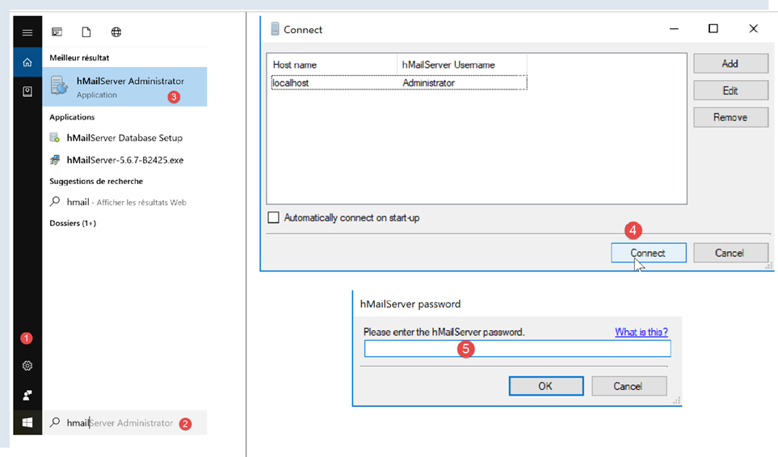
- en [2], dans la zone de saisie de la barre d’état, taper [hmailserver] ;
- en [3], lancer l’administrateur ;
- en [4], connecter l’administrateur au serveur [hMailServer] ;
- en [5], taper le mot de passe saisi lors de l’installation de [hMailServer] ;
Si vous avez oublié le mot de passe, procédez comme suit :
- arrêtez le serveur [hMailServer] ;
- ouvrez le fichier [<hmailserver>/bin/hmailserver.ini] où <hmailserver> est le dossier d'installation du serveur :

- en [100], enlevez le mot de passe de la ligne [AdministratorPassword]. Cela aura pour effet que l'administrateur n'aura plus de mot de passe. Tapez simplement [Entrée] lorsque celui-ci vous sera demandé ;
ValidLanguages=english,swedish
[Security]
AdministratorPassword=
[Database]
Continuons la configuration du serveur :

- en [1-2], ajoutez un domaine (s’il n’existe pas déjà) ;
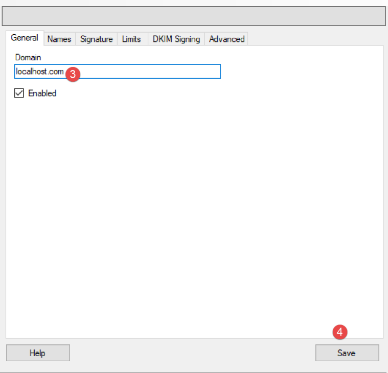
- en [3], on peut mettre à peu près n’importe quoi pour les tests que nous allons opérer. Dans la réalité, il faudrait mettre le nom d’un domaine existant ;

Nous allons créer un compte utilisateur :
- cliquer droit sur [Accounts] (7) puis (8) pour ajouter un nouvel utilisateur ;
- dans l’onglet [General] (9), nous définissons un utilisateur [guest] (10) avec le mot de passe [guest] (11). Il aura l’adresse mail [guest@localhost] (10) ;
- en [12], l’utilisateur [guest] est activé ;

- en [13-14], l’utilisateur créé ;

- en [27] le port du service SMTP ;
- en [28], ce service ne nécessite pas d’authentification ;
- en [30], mettez le message de bienvenue que le serveur SMTP enverra à ses clients ;

On fait de même avec le serveur POP3 :

On refait la même chose pour le serveur IMAP :
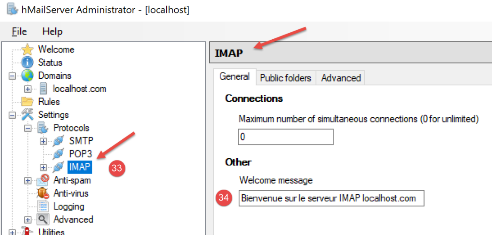
Nous indiquons le domaine par défaut du serveur [hMailServer] (il peut y en avoir plusieurs) :

- en [37], indiquez que le domaine par défaut du serveur SMTP est celui que vous avez créé en [38] ;
Après avoir sauvegardé cette configuration, vous pouvez la tester de la façon suivante. Ouvrez un terminal PyCharm dans le dossier des utilitaires :

Puis tapez la commande suivante :
(venv) C:\Data\st-2020\dev\python\cours-2020\python3-flask-2020\inet\utilitaires>RawTcpClient.exe localhost 25
Client [DESKTOP-30FF5FB:50170] connecté au serveur [localhost-25]
Tapez vos commandes (quit pour arrêter) :
<-- [220 Bienvenue sur le serveur SMTP localhost.com]
- ligne 1 : on se connecte au port 25 de la machine [localhost]. C’est là qu’officie un serveur SMTP non sécurisé du serveur [hMailServer] ;
- ligne 4 : on reçoit le message de bienvenue que nous avons configuré à l’étape 30 précédente ;
Le serveur SMTP est donc bien en place. Tapez la commande [quit] pour terminer le dialogue avec le serveur SMTP 25.
Maintenant faisons la même chose avec le port 587 qui est le port par défaut du service SMTP sécurisé de relève du courrier :
(venv) C:\Data\st-2020\dev\python\cours-2020\python3-flask-2020\inet\utilitaires>RawTcpClient.exe localhost 587
Client [DESKTOP-30FF5FB:50217] connecté au serveur [localhost-587]
Tapez vos commandes (quit pour arrêter) :
<-- [220 Bienvenue sur le serveur SMTP localhost.com]
- ligne 4, la réponse du serveur SMTP officiant sur le port 587 ;
Maintenant faisons la même chose avec le port 110 qui est le port par défaut du service POP3 de relève du courrier :
(venv) C:\Data\st-2020\dev\python\cours-2020\python3-flask-2020\inet\utilitaires>RawTcpClient.exe localhost 110
Client [DESKTOP-30FF5FB:50210] connecté au serveur [localhost-110]
Tapez vos commandes (quit pour arrêter) :
<-- [+OK Bienvenue sur le serveur POP3 localhost.com]
- ligne 4, on a reçu le message de bienvenue du serveur POP3 ;
Maintenant faisons la même chose avec le port 143 qui est le port par défaut du service IMAP de relève du courrier :
(venv) C:\Data\st-2020\dev\python\cours-2020\python3-flask-2020\inet\utilitaires>RawTcpClient.exe localhost 143
Client [DESKTOP-30FF5FB:50212] connecté au serveur [localhost-143]
Tapez vos commandes (quit pour arrêter) :
<-- [* OK Bienvenue sur le serveur IMAP localhost.com]
- ligne 4, on a reçu le message de bienvenue du serveur IMAP ;
21.5.4. Installation d'un lecteur de courrier
Pour lire le courrier que nous allons envoyer, il nous faut un lecteur de courrier. Pour ceux qui n'en ont pas, nous montrons l'installation et la configuration du lecteur [Thunderbird] :
- en [1] : téléchargez [thunderbird] puis installez-le ;

- lancez le serveur de mail [hMailServer] s'il ne l'est pas déjà ;
- en [2-3] : une fois Thunderbird lancé, nous allons créer un compte de messagerie pour l'utilisateur [guest@localhost] du serveur de mail [hMailServer] ;


- en [7-11] : le serveur POP3 qui va nous permettre de lire le courrier du serveur de mail [hMailServer] est à l'adresse [localhost] et officie sur le port 110 ;
- en [12-16] : le serveur SMTP qui va nous permettre d'envoyer du courrier de la part des utilisateurs du serveur de mail [hMailServer] est à l'adresse [localhost] et officie sur le port 25 ;
- [18] : on peut tester la validation de cette configuration ;


- en [26] : parce qu'on n'a pas de chiffrement SSL, Thunderbird nous avertit que notre configuration comporte des risques ;
- en [28] : le compte a été créé ;
Pour tester le compte créé, nous allons avec Thunderbird :
- envoyer un mail à l'utilisateur [guest@localhost.com] (protocole SMTP) ;
- lire le courrier reçu par cet utilisateur (protocole POP3) ;

- en [3] : l'expéditeur ;
- en [4] : le destinataire ;
- en [5] : le sujet du mail ;
- en [6] : le contenu du mail ;
- en [7] : pour envoyer le mail ;

- en [8-9] : on relève le courrier de l'utilisateur [guest@localhost] ;
- en [10-15] : le message reçu ;
Nous allons envoyer également du courrier à l'utilisateur [pymailparlexemple@gmail.com]. Créons-lui un compte dans Thunderbird pour lire le courrier qu'il recevra :


- en [4] : mettez ce que vous voulez ;
- en [5] : l'adresse est [pymailparlexemple@gmail.com] ;
- en [6] : tapez le mot de passe que vous avez donné à cet utilisateur lorsque vous l'avez créé ;
- en [7] : validez cette configuration ;

- en [8] : Thunderbird a récupéré les informations suivantes dans sa base de données ;
- en [9] : le protocole de lecture du courrier n'est plus POP3 mais IMAP. La principale différence entre les deux est que [POP3] ramène le courrier lu sur la machine locale où se trouve le lecteur de courrier et le supprime du serveur distant, alors que [IMAP] conserve le courrier sur le serveur distant ;
- en [10] : identification du serveur SMTP ;
- en [13] : pour avoir davantage d'informations sur les serveurs IMAP et SMTP, on passe en configuration manuelle ;

- en [14-17] : les caractéristiques du serveur IMAP ;
- en [18-21] : les caractéristiques du serveur SMTP ;
- en [22] : on termine la configuration ;

- en [23-24] : le nouveau compte Thunderbird ;
- en [26] : on écrit un nouveau message ;

- en [27] : l'expéditeur est [pymailparlexemple@gmail.com] ;
- en [28] : le destinataire est [pymailparlexemple@gmail.com] ;
- en [29-30] : le message ;
- en [31] : pour l'envoyer ;

- en [32] : on relève le courrier des différents comptes ;

- en [33-36] : le courrier reçu par l'utilisateur [pymailparlexemple@gmail.com]
Nous créons de même :
- un nouveau compte Gmail [pymail2parlexemple@gmail.com] ;
- un nouverau compte Thunderbird [pymail2parlexemple@gmail.com] pour relever les messages de l’utilisateur de même nom :


Nous avons désormais les outils pour explorer les protocoles SMTP, POP3 et IMAP. Nous commençons par le protocole SMTP.
21.5.5. Le protocole SMTP

Nous allons découvrir le protocole SMTP en examinant les logs du serveur [hMailServer]. Pour cela, nous les activons avec l’outl [hmailServerAdministrator] :


- en [2], les logs sont activés ;
- en [3-5] : on les active pour les protocoles SMTP, POP3, IMAP ;
- en [7], on demande à les voir ;
- en [8], ouvre le fichier de logs avec un éditeur de texte quelconque ;
Dans l’exemple qui suit, le client sera [Thunderbird] et le serveur sera [hMailServer]. Avec Thunderbird, faites en sorte que l’utilisateur [guest@localhost.com] s’envoie un message à lui-même :

Les logs sont alors les suivants :
"SMTPD" 5828 22 "2020-07-07 10:02:54.263" "127.0.0.1" "SENT: 220 Bienvenue sur le serveur SMTP localhost.com"
"SMTPD" 21956 22 "2020-07-07 10:02:54.360" "127.0.0.1" "RECEIVED: EHLO [127.0.0.1]"
"SMTPD" 21956 22 "2020-07-07 10:02:54.362" "127.0.0.1" "SENT: 250-DESKTOP-30FF5FB[nl]250-SIZE 20480000[nl]250-AUTH LOGIN[nl]250 HELP"
"SMTPD" 5828 22 "2020-07-07 10:02:54.381" "127.0.0.1" "RECEIVED: MAIL FROM:<guest@localhost.com> SIZE=433"
"SMTPD" 5828 22 "2020-07-07 10:02:54.386" "127.0.0.1" "SENT: 250 OK"
"SMTPD" 21956 22 "2020-07-07 10:02:54.470" "127.0.0.1" "RECEIVED: RCPT TO:<guest@localhost.com>"
"SMTPD" 21956 22 "2020-07-07 10:02:54.473" "127.0.0.1" "SENT: 250 OK"
"SMTPD" 21956 22 "2020-07-07 10:02:54.478" "127.0.0.1" "RECEIVED: DATA"
"SMTPD" 21956 22 "2020-07-07 10:02:54.479" "127.0.0.1" "SENT: 354 OK, send."
"SMTPD" 21860 22 "2020-07-07 10:02:54.496" "127.0.0.1" "SENT: 250 Queued (0.016 seconds)"
"SMTPD" 21568 22 "2020-07-07 10:02:54.505" "127.0.0.1" "RECEIVED: QUIT"
"SMTPD" 21568 22 "2020-07-07 10:02:54.506" "127.0.0.1" "SENT: 221 goodbye"
Les lignes ci-dessus décrivent le dialogue qui a eu lieu entre le client SMTP (le gestionnaire de courrier Thunderbird) et le serveur SMTP (hMailServer). Les lignes [SENT] indiquent ce que le serveur SMTP a envoyé à son client. Les lignes [RECEIVED] indiquent ce que le serveur SMTP a reçu de son client.
- ligne 1 : juste après la connexion du client au serveur SMTP, celui-ci envoie le message de bienvenue à son client ;
- ligne 2 : le client envoie la commande [EHLO] pour d’identifier. Ici, il donne son adresse IP [127.0.0.1] qui désigne la machine [localhost], ç-à-d la machine qui exécute le client SMTP ;
- ligne 3 : le serveur envoie une série de réponses [250]. [nl] signifie [newline] ç-à-d le caractère \n. Les réponses ont la forme [250-] sauf la dernière qui a la forme [250 ]. C’est ainsi que le client SMTP sait que la réponse du serveur SMTP est terminée et qu’il peut envoyer une commande. La série de commandes [250] avait pour but d’indiquer au client SMTP une série de commandes qu’il pouvait utiliser ;
- ligne 4 : le client SMTP envoie la commande [MAIL FROM : adresse_mail_expéditeur] qui indique qui envoie le message ;
- ligne 5 : le serveur SMTP répond par [250 OK] indiquant qu’il a compris la commande ;
- ligne 6 : le client SMTP envoie la commande [RCPT TO : adresse_mail_destinataire] pour indiquer l’adresse du destinataire ;
- ligne 7 : de nouveau le serveur SMTP indique qu’il a compris la commande ;
- ligne 8 : le serveur SMTP envoie la commande [DATA]. Cela veut dire qu’il va envoyer le contenu du message ;
- ligne 9 : le serveur SMTP indique par la réponse [354 OK] qu’il est prêt à recevoir le message. Le texte [send .] indique que le client SMTP doit terminer son message par une ligne ne contenant qu’un unique point ;
- ce qu’on ne vois pas ensuite, c’est que le client SMTP envoie son message. Les logs ne l’affichent pas ;
- ligne 10 : le client SMTP a envoyé le point qui indique la fin du message. Le serveur SMTP lui répond qu’il a mis le message en file d’attente (queued) ;
- le client SMTP lui envoie la comande [QUIT] pour indiquer qu’il va fermer la connexion ;
- ligne 12 : le serveur lui répond ;
Maintenant que nous connaissons le dialogue client / serveur du protocole SMTP, essayons de le reproduire avec notre client [RawTcpClient]. Nous utilisons un terminal PyCharm :

Etudions un nouvel exemple :
- le client A sera le client TCP générique [RawTcpClient] ;
- le serveur B sera le serveur de mails [hMailServer] ;
- le client A demandera au serveur B de distribuer un courrier envoyé par l’utilisateur [guest@localhost.com] pour lui-même ;
- nous vérifierons que le destinataire a bien reçu le mail envoyé ;
Nous lançons le client de la façon suivante :
(venv) C:\Data\st-2020\dev\python\cours-2020\python3-flask-2020\inet\utilitaires>RawTcpClient.exe localhost 25 --quit bye
Client [DESKTOP-30FF5FB:53122] connecté au serveur [localhost-25]
Tapez vos commandes (quit pour arrêter) :
<-- [220 Bienvenue sur le serveur SMTP localhost.com]
- ligne [1], on se connecte sur le port 25 de la machine locale, là où opère le service SMTP de [hMailServer]. l’argument [--quit bye] indique que l’utilisateur quittera le programme en tapant la commande [bye]. Sans cet argument, la commande de fin du programme est [quit]. Or [quit] est également une commande du protocole SMTP. Il nous faut donc éviter cette ambiguïté ;
- ligne [2], le client est bien connecté ;
- ligne [3], le client attend des commandes tapées au clavier ;
- ligne [4], le serveur lui envoie son message de bienvenue ;
Nous continuons le dialogue de la façon suivante :
(venv) C:\Data\st-2020\dev\python\cours-2020\python3-flask-2020\inet\utilitaires>RawTcpClient.exe localhost 25
Client [DESKTOP-30FF5FB:53155] connecté au serveur [localhost-25]
Tapez vos commandes (quit pour arrêter) :
<-- [220 Bienvenue sur le serveur SMTP localhost.com]
EHLO localhost
<-- [250-DESKTOP-30FF5FB]
<-- [250-SIZE 20480000]
<-- [250-AUTH LOGIN]
<-- [250 HELP]
MAIL FROM: guest@localhost.com
<-- [250 OK]
RCPT TO: guest@localhost.com
<-- [250 OK]
DATA
<-- [354 OK, send.]
from: guest@localhost.com
to: guest@localhost.com
subject: ceci est un test
ligne1
ligne2
.
<-- [250 Queued (37.824 seconds)]
QUIT
Fin de la connexion avec le serveur
- en [5], le client envoie la commande [EHLO nom-de-la-machine-client]. Le serveur lui répond par une suite de messages de la forme [250-xx] (6). Le code [250] indique le succès de la commande envoyée par le client ;
- en [10], le client indique l’expéditeur du message, ici [guest@localhost.com] ;
- en [11], la réponse du serveur ;
- en [12], on indique le destinataire du message, ici l’utilisateur [guest@localhost.com] ;
- en [13], la réponse du serveur ;
- en [14], la commande [DATA] indique au serveur que le client va envoyer le contenu du message ;
- en [15], la réponse du serveur ;
- en [16-22], le client doit envoyer une liste de lignes de texte terminée par une ligne ne contenant qu’un unique point. Le message peut contenir des lignes [Subject:, From:, To:] (16-18) pour définir respectivement le sujet du message, l’expéditeur, le destinataire ;
- en [19], les entêtes précédents doivent être suivis d’une ligne vide ;
- en [20-21], le texte du message ;
- en [22], la ligne ne contenant qu’un unique point qui indique la fin du message ;
- en [23], une fois que le serveur a reçu la ligne ne contenant qu’un unique point, il met le message en file d’attente ;
- en [24], le client indique au serveur qu’il a fini ;
- en [25], on constate que le serveur a fermé la connexion qui le liait au client ;
Maintenant vérifions avec Thunderbird que l’utilisateur [guest@localhost.com] a bien reçu le message :

- en [1-6], on voit que l’utilisateur [guest@localhost.com] a bien reçu le message ;
Finalement, notre client [RawTcpClient] a réussi à envoyer un message via le serveur SMTP [localhost]. Maintenant, utilisons la même méthode pour envoyer un message à [pymailparlexemple@gmail.com] :
(venv) C:\Data\st-2020\dev\python\cours-2020\python3-flask-2020\inet\utilitaires>RawTcpClient.exe smtp.gmail.com 587
Client [DESKTOP-30FF5FB:53210] connecté au serveur [smtp.gmail.com-587]
Tapez vos commandes (quit pour arrêter) :
<-- [220 smtp.gmail.com ESMTP w13sm643278wrr.67 - gsmtp]
EHLO localhost
<-- [250-smtp.gmail.com at your service, [2a01:cb05:80e8:b500:3c4b:2203:91fa:9b00]]
<-- [250-SIZE 35882577]
<-- [250-8BITMIME]
<-- [250-STARTTLS]
<-- [250-ENHANCEDSTATUSCODES]
<-- [250-PIPELINING]
<-- [250-CHUNKING]
<-- [250 SMTPUTF8]
MAIL FROM: pymailparlexemple@gmail.com
<-- [530 5.7.0 Must issue a STARTTLS command first. w13sm643278wrr.67 - gsmtp]
QUIT
Fin de la connexion avec le serveur
- ligne 1 : on utilise le serveur SMTP de Gmail qui opère sur le port 587 ;
- ligne 15 : on est bloqués parce que le serveur SMTP nous demande de démarrer une connexion sécurisée ce qu’on ne sait pas faire. Contrairement à l’exemple précédent, le serveur [smtp.gmail.com] (ligne 1) demande une authentification. Il n’accepte comme clients que les utilisateurs enregistrés dans le domaine [gmail.com]. Cette authentification est sécurisée et a lieu au sein d’une connexion cryptée.
Le premier exemple nous a donné les bases pour construire un client SMTP basique en Python. Le deuxième nous a montré que certains serveurs SMTP (la plupart en fait) nécessitent une authentification faite avec une connexion chiffrée.
21.5.6. scripts [smtp/01] : un client SMTP basique
Nous allons reproduire en Python ce que nous avons appris précédemment du protocole SMTP.

Le fichier [smtp/01/config] configure l’application de la façon suivante :
def configure() -> dict:
return {
# description : description du mail envoyé
# smtp-server : serveur SMTP
# smtp-port : port du serveur SMTP
# from : expéditeur
# to : destinataire
# subject : sujet du mail
# message : message du mail
"mails": [
{
"description": "mail to localhost via localhost",
"smtp-server": "localhost",
"smtp-port": "25",
"from": "guest@localhost.com",
"to": "guest@localhost.com",
"subject": "to localhost via localhost",
# on envoie de l'UTF-8
"content-type": 'text/plain; charset="utf-8"',
# on teste les caractères accentués
"message": "aglaë séléné\nva au marché\nacheter des fleurs"
},
{
"description": "mail to gmail via gmail",
"smtp-server": "smtp.gmail.com",
"smtp-port": "587",
"from": "pymailparlexemple@gmail.com",
"to": "pymailparlexemple@gmail.com",
"subject": "to gmail via gmail",
# on envoie de l'UTF-8
"Content-type": 'text/plain; charset="utf-8"',
# on teste les caractères accentués
"message": "aglaë séléné\nva au marché\nacheter des fleurs"
}
]
}
- lignes 10-35 : une liste de mails à envoyer. Pour chacun d’eux on précise les informations suivantes :
- [description] : un texte décrivant le mail ;
- [smtp-server] : le serveur SMTP à utiliser ;
- [smtp-port] : son port de service ;
- [from] : l’expéditeur du mail ;
- [to] : le destinataire du mail ;
- [subject] : le sujet du mail ;
- [content-type] : l’encodage du mail ;
- [message] : le message du mail ;
Le code [01/main] du client SMTP est le suivant :
# imports
import socket
# -----------------------------------------------------------------------
def sendmail(mail: dict, verbose: bool):
# envoie message au serveur smtp smtpserver de la part de expéditeur
# pour destinataire. Si verbose=True, fait un suivi des échanges client-serveur
# on laisse remonter les erreurs système
connexion = None
try:
# nom de la machine locale (nécessaire au protocole SMTP)
client = socket.gethostbyaddr(socket.gethostbyname("localhost"))[0]
# ouverture d'une connexion sur le port 25 de smtpServer
connexion = socket.create_connection((mail["smtp-server"], 25))
# connexion représente un flux de communication bidirectionnel
# entre le client (ce programme) et le serveur smtp contacté
# ce canal est utilisé pour les échanges de commandes et d'informations
# après la connexion le serveur envoie un message de bienvenue qu'on lit
send_command(connexion, "", verbose, True)
# cmde ehlo:
send_command(connexion, f"EHLO {client}", verbose, True)
# cmde mail from:
send_command(connexion, f"MAIL FROM: <{mail['from']}>", verbose, True)
# cmde rcpt to:
send_command(connexion, f"RCPT TO: <{mail['to']}>", verbose, True)
# cmde data
send_command(connexion, "DATA", verbose, True)
# préparation message à envoyer
# il doit contenir les lignes
# From: expéditeur
# To: destinataire
# ligne vide
# Message
# .
data = f"{mail['message']}"
# envoi message
send_command(connexion, data, verbose, False)
# envoi .
send_command(connexion, "\r\n.\r\n", verbose, False)
# cmde quit
send_command(connexion, "QUIT", verbose, True)
# fin
finally:
# fermeture connexion
if connexion:
connexion.close()
# --------------------------------------------------------------------------
def send_command(connexion: socket, commande: str, verbose: bool, with_rclf: bool):
# envoie commande dans le canal connexion
# mode verbeux si verbose=True
# si with_rclf=True, ajoute la séquence rclf à commande
# données
rclf = "\r\n" if with_rclf else ""
# envoi cmde si commande non vide
if commande:
# on laisse remonter les erreurs système
#
# envoi commande
connexion.send(bytearray(f"{commande}{rclf}", 'utf-8'))
# écho éventuel
if verbose:
affiche(commande, 1)
# lecture réponse de moins de 1000 caractères
reponse = str(connexion.recv(1000), 'utf-8')
# écho éventuel
if verbose:
affiche(reponse, 2)
# récupération code erreur
codeErreur = int(reponse[0:3])
# erreur renvoyée par le serveur ?
if codeErreur >= 500:
# on lance une exception avec l'erreur
raise BaseException(reponse[4:])
# retour sans erreur
# --------------------------------------------------------------------------
def affiche(echange: str, sens: int):
# affiche échange ? l'écran
# si sens=1 affiche -->echange
# si sens=2 affiche <-- échange sans les 2 derniers caractères rclf
if sens == 1:
print(f"--> [{echange}]")
return
elif sens == 2:
l = len(echange)
print(f"<-- [{echange[0:l - 2]}]")
return
# main ----------------------------------------------------------------
# client SMTP (SendMail Transfer Protocol) permettant d'envoyer un message
# les infos sont prises dans un fichier config contenant les informations suivantes pour chaque serveur
# description : description du mail envoyé
# smtp-server : serveur SMTP
# smtp-port : port du serveur SMTP
# from : expéditeur
# to : destinataire
# subject : sujet du mail
# message : message du mail
# protocole de communication SMTP client-serveur
# -> client se connecte sur le port 25 du serveur smtp
# <- serveur lui envoie un message de bienvenue
# -> client envoie la commande EHLO: nom de sa machine
# <- serveur répond OK ou non
# -> client envoie la commande mail from: <exp?diteur>
# <- serveur répond OK ou non
# -> client envoie la commande rcpt to: <destinataire>
# <- serveur répond OK ou non
# -> client envoie la commande data
# <- serveur répond OK ou non
# -> client envoie ttes les lignes de son message et termine avec une ligne contenant le seul caractère .
# <- serveur répond OK ou non
# -> client envoie la commande quit
# <- serveur répond OK ou non
# les réponses du serveur ont la forme xxx texte où xxx est un nombre à 3 chiffres. Tout nombre xxx >=500
# signale une erreur. La réponse peut comporter plusieurs lignes commençant toutes par xxx- sauf la dernière
# de la forme xxx(espace)
# les lignes de texte échangées doivent se terminer par les caractéres RC(#13) et LF(#10)
# configuration de l'application
import config
config = config.configure()
# on traite les mails un par un
for mail in config['mails']:
try:
# logs
print("----------------------------------")
print(f"Envoi du message [{mail['description']}]")
# préparation du message à envoyer
mail[
"message"] = f"From: {mail['from']}\nTo: {mail['to']}\n" \
f"Subject: {mail['subject']}\n" \
f"Content-type: {mail['content-type']}" \
f"\n\n{mail['message']}"
# envoi du message en mode verbeux
sendmail(mail, True)
# fin
print("Message envoyé...")
except BaseException as erreur:
# on affiche l'erreur
print(f"L'erreur suivante s'est produite : {erreur}")
finally:
pass
# mail suivant
Commentaires
- lignes 134-136 : on configure l’application ;
- lignes 139-151 : on tarite tous les mails trouvés dans la configuration ;
- lignes 141-143 : on affiche ce qu'on va faire ;
- lignes 144-149 : on définit le message à envoyer. Le message [message] est précédé des entêtes [From, To, Subject, Content-type] ;
- ligne 151 : l’envoi du mail est assuré par la fonction [sendmail] qui admet deux paramètres :
- [mail] : le dictionnaire contenant les informations nécessaires à l’envoi du mail ;
- [verbose] : un booléen indiquant si les échanges client / serveur doivent être ou non logués sur la console ;
- lignes 154-156 : on arrête toutes les exceptions qui sortent de la fonction [sendmail]. Elles sont affichées ;
- ligne 6 : [mail] est le dictionnaire décrivant le mail à envoyer ;
- ligne 14 : dans le protocole SMTP, le client doit envoyer son non. On récupère ici le nom de la machine locale qui va servir de client ;
- ligne 16 : connexion au serveur SMTP à qui le message va être envoyé ;
- lignes 22-23 : si la connexion s'est faite avec le serveur SMTP, celui-ci va envoyer un message de bienvenue qu'on lit ici ;
- la fonction [sendmail] envoie ensuite les différentes commandes que doit envoyer un client SMTP :
- lignes 24-25 : la commande EHLO ;
- lignes 26-27 : la commande MAIL FROM: ;
- lignes 28-29 : la commande RCPT TO: ;
- lignes 30-31 : la commande DATA ;
- lignes 32-41 : envoi du message (From, To, Subject, Content-type, texte) ;
- lignes 42-43 : envoi du point final ;
- lignes 44-457 : la commande QUIT qui termine le dialogue du client avec le serveur SMTP ;
- l'exécution de [sendmail] s'exécute dans un [try / finally] qui laisse remonter toutes les exceptions au code appelant. On sait que celui-ci les arrête toutes pour les afficher ;
- lignes 48-50 : libération des ressources ;
- ligne 54 : la fonction [send_command] est chargée d’envoyer les commandes du client au serveur SMTP. Elle admet quatre paramètres :
- [connexion] : la connexion qui relie le client au serveur ;
- [commande] : la commande à envoyer ;
- [verbose] : si TRUE alors les échanges client / serveur sont logués sur la console ;
- [with_rclf] : si TRUE, envoie la commande terminée par la séquence \r\n. C’est nécessaire pour toutes les commandes du protocole SMTP, mais [send_command] sert aussi à envoyer le message. Là on n’ajoute pas la séquence \r\n ;
- ligne 62 : la commande n'est envoyée que si elle est non vide ;
- lignes 65-66 : la commande est envoyée au serveur sous la forme d’une chaîne d’octets UTF-8 ;
- lignes 70-71 : lecture de de l’ensemble des lignes de la réponse. On suppose qu’elle fait moins de 1000 caractères. La réponse peut comporter plusieurs lignes. Chaque ligne a la forme XXX-YYY où XXX est un code numérique sauf la dernière ligne de la réponse qui a la forme XXX YYY (absence du caractère -) ;
- lignes 76 : lecture du code d'erreur XXX de la 1re ligne ;
- lignes 78-80 : si le code numérique XXX est supérieur à 500, alors le serveur a renvoyé une erreur. On lance alors une exception ;
Résultats
L’exécution du script donne les résultats console suivants :
C:\Data\st-2020\dev\python\cours-2020\python3-flask-2020\venv\Scripts\python.exe C:/Data/st-2020/dev/python/cours-2020/python3-flask-2020/inet/smtp/01/main.py
----------------------------------
Envoi du message [mail to localhost via localhost]
--> [EHLO DESKTOP-30FF5FB]
<-- [220 Bienvenue sur le serveur SMTP localhost.com]
--> [MAIL FROM: <guest@localhost.com>]
<-- [250-DESKTOP-30FF5FB
250-SIZE 20480000
250-AUTH LOGIN
250 HELP]
--> [RCPT TO: <guest@localhost.com>]
<-- [250 OK]
--> [DATA]
<-- [250 OK]
--> [From: guest@localhost.com
To: guest@localhost.com
Subject: to localhost via localhost
Content-type: text/plain; charset="utf-8"
aglaë séléné
va au marché
acheter des fleurs]
<-- [354 OK, send.]
--> [
.
]
<-- [250 Queued (0.000 seconds)]
--> [QUIT]
<-- [221 goodbye]
Message envoyé...
----------------------------------
Envoi du message [mail to gmail via gmail]
--> [EHLO DESKTOP-30FF5FB]
<-- [220 smtp.gmail.com ESMTP u1sm1364433wrb.78 - gsmtp]
--> [MAIL FROM: <pymailparlexemple@gmail.com>]
<-- [250-smtp.gmail.com at your service, [2a01:cb05:80e8:b500:3c4b:2203:91fa:9b00]
250-SIZE 35882577
250-8BITMIME
250-STARTTLS
250-ENHANCEDSTATUSCODES
250-PIPELINING
250-CHUNKING
250 SMTPUTF8]
--> [RCPT TO: <pymailparlexemple@gmail.com>]
<-- [530 5.7.0 Must issue a STARTTLS command first. u1sm1364433wrb.78 - gsmtp]
L'erreur suivante s'est produite : 5.7.0 Must issue a STARTTLS command first. u1sm1364433wrb.78 - gsmtp
Process finished with exit code 0
- lignes 3-30 : l’utilisation du serveur SMTP [hMailServer] pour envoyer un mail à [guest@localhost] se passe bien ;
- lignes 32-46 : l’utilisation du serveur SMTP [smtp.gmail.com] pour envoyer un mail à [pymailparlexemple@gmail.com] ne se passe pas bien : en ligne 45, le serveur SMTP envoie un code d’erreur 530 avec un message d’erreur. Celui-ci indique que le client SMTP doit au préalable s’authentifier via une connexion sécurisée. Notre client ne l’a pas fait et est donc refusé ;
Les résultats dans Thunderbird sont les suivants :

21.5.7. scripts [smtp/02] : un lient SMTP écrit avec la bibliothèque [smtplib]

Le client précédent souffre d'au moins deux insuffisances :
- il ne sait pas utiliser une connexion sécurisée si le serveur la réclame ;
- il ne sait pas joindre des attachements au message ;
Nous allons traiter la première insuffisance dans le script [smtp/02]. Dans notre nouveau script nous allons utiliser le module Python [smtplib].
Le script [smtp/02/main] utilisera le fichier de configuration jSON [smtp/02/config] suivant :
def configure() -> dict:
return {
# description : description du mail envoyé
# smtp-server : serveur SMTP
# smtp-port : port du serveur SMTP
# from : expéditeur
# to : destinataire
# subject : sujet du mail
# message : message du mail
"mails": [
{
"description": "mail to localhost via localhost avec smtplib",
"smtp-server": "localhost",
"smtp-port": "25",
"from": "guest@localhost.com",
"to": "guest@localhost.com",
"subject": "to localhost via localhost avec smtplib",
# on teste les caractères accentués
"message": "aglaë séléné\nva au marché\nacheter des fleurs",
},
{
"description": "mail to gmail via gmail avec smtplib",
"smtp-server": "smtp.gmail.com",
"smtp-port": "587",
"from": "pymail2parlexemple@gmail.com",
"to": "pymail2parlexemple@gmail.com",
"subject": "to gmail via gmail avec smtplib",
# on teste les caractères accentués
"message": "aglaë séléné\nva au marché\nacheter des fleurs",
# smtp avec authentification
"user": "pymail2parlexemple@gmail.com",
"password": "#6prIlh@1QZ3TG",
}
]
}
On retrouve les mêmes rubriques que dans le fichier [smtp/01/config] avec deux rubriques supplémentaires lorsque el serveur SMTP demande une authentification :
- ligne 31, [user] : le nom de l’utilisateur qui authentifie la connexion ;
- ligne 32, [password] : son mot de passe ;
Ces deux rubriques ne sont présentes que si le serveur SMTP contacté exige une authentification. Celle-ci se fait alors au-travers d'une connexion sécurisée.
Le code du script [smtp/02/main.py] est le suivant :
# imports
import smtplib
from email.mime.text import MIMEText
from email.utils import formatdate
# -----------------------------------------------------------------------
def sendmail(mail: dict, verbose: True):
# envoie message au serveur smtp smtpserver de la part de expéditeur
# pour destinataire. Si verbose=True, fait un suivi des échanges client-serveur
# on utilise la bibliothéque smtplib
# on laisse remonter les exceptions
#
# le serveur SMTP
server = smtplib.SMTP(mail["smtp-server"])
# mode verbose
server.set_debuglevel(verbose)
# connexion sécurisée ?
if "user" in mail:
# connexion sécurisée
server.starttls()
# EHLO commande + authentification
server.login(mail["user"], mail["password"])
# construction d'un message Multipart - c'est ce message qui Multipart sera envoyé
msg = MIMEText(mail["message"])
msg['from'] = mail["from"]
msg['to'] = mail["to"]
msg['date'] = formatdate(localtime=True)
msg['subject'] = mail["subject"]
# on envoie le message
server.send_message(msg)
# on quitte
server.quit()
# main ----------------------------------------------------------------
# les infos sont prises dans un fichier config contenant les informations suivantes pour chaque serveur
# description : description du mail envoyé
# smtp-server : serveur SMTP
# smtp-port : port du serveur SMTP
# from : expéditeur
# to : destinataire
# subject : sujet du mail
# content-type : encodage du mail
# message : message du mail
# configurationn de l'application
import config
config = config.configure()
# on traite les mails un par un
for mail in config['mails']:
try:
# logs
print("----------------------------------")
print(f"Envoi du message [{mail['description']}]")
# envoi du message en mode verbeux
sendmail(mail, True)
# fin
print("Message envoyé...")
except BaseException as erreur:
# on affiche l'erreur
print(f"L'erreur suivante s'est produite : {erreur}")
finally:
pass
# mail suivant
Commentaires
- lignes 8-35 : seule la fonction [sendmail] est utilisée. Elle va désormais utiliser le module [smtplib] (ligne 2) ;
- ligne 16 : connexion au serveur SMTP ;
- ligne 18 : si [verbose=True], les échanges client / serveur seront affichés sur la console ;
- lignes 20-24 : on fait l'éventuelle authentification si le serveur SMTP l'exige ;
- ligne 22 : l'authentification se fait au travers d'une connexion sécurisée ;
- ligne 24 : authentification ;
- lignes 26-33 : envoi du message. Le dialogue vu avec le script [smtp/01/main] va alors se dérouler. S'il y a eu authentification, il se déroulera au sein d'une connexion sécurisée ;
- ligne 35 : on termine le dialogue client / serveur ;
Avant d’exécuter le script [smtp/02/main], vous devez modifier la configuration du compte Gmail [pymailparlexemple@gmail.com] :
- connectez-vous au compte Gmail [pymailparlexemple@gmail.com] ;
- modifiez la configuration suivante :
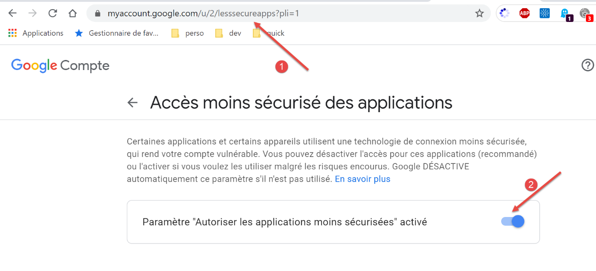
- en [2], autorisez les applications moins sécurisées à accéder au compte ;
Faites la même chose avec le second compte Gmail [pymail2parlexemple@gmail.com].
Résultats
Lorsqu’on exécute le script [smtp/02/main] on obtient les résultats console suivants :
C:\Data\st-2020\dev\python\cours-2020\python3-flask-2020\venv\Scripts\python.exe C:/Data/st-2020/dev/python/cours-2020/python3-flask-2020/inet/smtp/02/main.py
----------------------------------
Envoi du message [mail to localhost via localhost avec smtplib]
send: 'ehlo [192.168.43.163]\r\n'
reply: b'250-DESKTOP-30FF5FB\r\n'
reply: b'250-SIZE 20480000\r\n'
reply: b'250-AUTH LOGIN\r\n'
reply: b'250 HELP\r\n'
reply: retcode (250); Msg: b'DESKTOP-30FF5FB\nSIZE 20480000\nAUTH LOGIN\nHELP'
send: 'mail FROM:<guest@localhost.com> size=310\r\n'
reply: b'250 OK\r\n'
reply: retcode (250); Msg: b'OK'
send: 'rcpt TO:<guest@localhost.com>\r\n'
reply: b'250 OK\r\n'
reply: retcode (250); Msg: b'OK'
send: 'data\r\n'
reply: b'354 OK, send.\r\n'
reply: retcode (354); Msg: b'OK, send.'
data: (354, b'OK, send.')
send: b'Content-Type: text/plain; charset="utf-8"\r\nMIME-Version: 1.0\r\nContent-Transfer-Encoding: base64\r\nfrom: guest@localhost.com\r\nto: guest@localhost.com\r\ndate: Wed, 08 Jul 2020 08:35:39 +0200\r\nsubject: to localhost via localhost avec smtplib\r\n\r\nYWdsYcOrIHPDqWzDqW7DqQp2YSBhdSBtYXJjaMOpCmFjaGV0ZXIgZGVzIGZsZXVycw==\r\n.\r\n'
reply: b'250 Queued (0.000 seconds)\r\n'
reply: retcode (250); Msg: b'Queued (0.000 seconds)'
data: (250, b'Queued (0.000 seconds)')
send: 'quit\r\n'
reply: b'221 goodbye\r\n'
reply: retcode (221); Msg: b'goodbye'
Message envoyé...
----------------------------------
Envoi du message [mail to gmail via gmail avec smtplib]
send: 'ehlo [192.168.43.163]\r\n'
reply: b'250-smtp.gmail.com at your service, [37.172.118.130]\r\n'
reply: b'250-SIZE 35882577\r\n'
reply: b'250-8BITMIME\r\n'
reply: b'250-STARTTLS\r\n'
reply: b'250-ENHANCEDSTATUSCODES\r\n'
reply: b'250-PIPELINING\r\n'
reply: b'250-CHUNKING\r\n'
reply: b'250 SMTPUTF8\r\n'
reply: retcode (250); Msg: b'smtp.gmail.com at your service, [37.172.118.130]\nSIZE 35882577\n8BITMIME\nSTARTTLS\nENHANCEDSTATUSCODES\nPIPELINING\nCHUNKING\nSMTPUTF8'
send: 'STARTTLS\r\n'
reply: b'220 2.0.0 Ready to start TLS\r\n'
reply: retcode (220); Msg: b'2.0.0 Ready to start TLS'
send: 'ehlo [192.168.43.163]\r\n'
reply: b'250-smtp.gmail.com at your service, [37.172.118.130]\r\n'
reply: b'250-SIZE 35882577\r\n'
reply: b'250-8BITMIME\r\n'
reply: b'250-AUTH LOGIN PLAIN XOAUTH2 PLAIN-CLIENTTOKEN OAUTHBEARER XOAUTH\r\n'
reply: b'250-ENHANCEDSTATUSCODES\r\n'
reply: b'250-PIPELINING\r\n'
reply: b'250-CHUNKING\r\n'
reply: b'250 SMTPUTF8\r\n'
reply: retcode (250); Msg: b'smtp.gmail.com at your service, [37.172.118.130]\nSIZE 35882577\n8BITMIME\nAUTH LOGIN PLAIN XOAUTH2 PLAIN-CLIENTTOKEN OAUTHBEARER XOAUTH\nENHANCEDSTATUSCODES\nPIPELINING\nCHUNKING\nSMTPUTF8'
send: 'AUTH PLAIN AHB5bWFpbDJwYXJsZXhlbXBsZUBnbWFpbC5jb20AIzZwcklsaEQmQDFRWjNURw==\r\n'
reply: b'235 2.7.0 Accepted\r\n'
reply: retcode (235); Msg: b'2.7.0 Accepted'
send: 'mail FROM:<pymail2parlexemple@gmail.com> size=320\r\n'
reply: b'250 2.1.0 OK e5sm4132618wrs.33 - gsmtp\r\n'
reply: retcode (250); Msg: b'2.1.0 OK e5sm4132618wrs.33 - gsmtp'
send: 'rcpt TO:<pymail2parlexemple@gmail.com>\r\n'
reply: b'250 2.1.5 OK e5sm4132618wrs.33 - gsmtp\r\n'
reply: retcode (250); Msg: b'2.1.5 OK e5sm4132618wrs.33 - gsmtp'
send: 'data\r\n'
reply: b'354 Go ahead e5sm4132618wrs.33 - gsmtp\r\n'
reply: retcode (354); Msg: b'Go ahead e5sm4132618wrs.33 - gsmtp'
data: (354, b'Go ahead e5sm4132618wrs.33 - gsmtp')
send: b'Content-Type: text/plain; charset="utf-8"\r\nMIME-Version: 1.0\r\nContent-Transfer-Encoding: base64\r\nfrom: pymail2parlexemple@gmail.com\r\nto: pymail2parlexemple@gmail.com\r\ndate: Wed, 08 Jul 2020 08:35:40 +0200\r\nsubject: to gmail via gmail avec smtplib\r\n\r\nYWdsYcOrIHPDqWzDqW7DqQp2YSBhdSBtYXJjaMOpCmFjaGV0ZXIgZGVzIGZsZXVycw==\r\n.\r\n'
reply: b'250 2.0.0 OK 1594190139 e5sm4132618wrs.33 - gsmtp\r\n'
reply: retcode (250); Msg: b'2.0.0 OK 1594190139 e5sm4132618wrs.33 - gsmtp'
data: (250, b'2.0.0 OK 1594190139 e5sm4132618wrs.33 - gsmtp')
send: 'quit\r\n'
Message envoyé...
reply: b'221 2.0.0 closing connection e5sm4132618wrs.33 - gsmtp\r\n'
reply: retcode (221); Msg: b'2.0.0 closing connection e5sm4132618wrs.33 - gsmtp'
Process finished with exit code 0
- ligne 40 : le client [smtplib] commence le dialogue pour établir une liaison cryptée avec le serveur SMTP, ce qu’on n’avait pas su faire dans le script [smtp/main/01] ;
- sinon on retouve les commandes connues du protocole SMTP ;
Si on consulte le compte Gmail de l’utilisateur [pymail2parlexemple] on a la chose suivante :

21.5.8. scripts [smtp/03] : gestion des fichiers attachés
Nous complétons le script [smtp/02/main] afin que le mail envoyé puisse avoir des fichiers attachés.

Le script [smtp/03/main] est configuré par le script [smtp/03/config] suivant :
import os
def configure() -> dict:
# configuration de l'application
script_dir = os.path.dirname(os.path.abspath(__file__))
return {
# description : description du mail envoyé
# smtp-server : serveur SMTP
# smtp-port : port du serveur SMTP
# from : expéditeur
# to : destinataire
# subject : sujet du mail
# message : message du mail
"mails": [
{
"description": "mail to gmail via gmail avec smtplib",
"smtp-server": "smtp.gmail.com",
"smtp-port": "587",
"from": "pymail2parlexemple@gmail.com",
"to": "pymail2parlexemple@gmail.com",
"subject": "to gmail via gmail avec smtplib",
# on teste les caractères accentués
"message": "aglaë séléné\nva au marché\nacheter des fleurs",
# smtp avec authentification
"user": "pymail2parlexemple@gmail.com",
"password": "#6prIlhD&@1QZ3TG",
# ici, il faut mettre des chemins absolus pour les fichiers attachés
"attachments": [
f"{script_dir}/attachments/fichier attaché.docx",
f"{script_dir}/attachments/fichier attaché.pdf",
]
}
]
}
Le fichier [smtp/03/config] ne diffère du fichier [smtp/02/config] utilisé précédemment que par la présence facultative d'une liste [attachments] (lignes 30-32) qui désigne la liste des fichiers à attacher au message à envoyer.
Le script [smtp/03/main] est le suivant :
# imports
import email
import mimetypes
import os
import smtplib
from email import encoders
from email.mime.audio import MIMEAudio
from email.mime.base import MIMEBase
from email.mime.image import MIMEImage
from email.mime.message import MIMEMessage
from email.mime.multipart import MIMEMultipart
from email.mime.text import MIMEText
from email.utils import formatdate
# -----------------------------------------------------------------------
def sendmail(mail: dict, verbose: True):
# envoie mail[message] au serveur smtp mail[smtp-server] de la part de mail[from]
# pour mail[to]. Si verbose=True, fait un suivi des échanges client-serveur
# on utilise la bibliothéque smtplib
# on laisse remonter les exceptions
#
# le serveur SMTP
server = smtplib.SMTP(mail["smtp-server"])
# mode verbose
server.set_debuglevel(verbose)
# connexion sécurisée ?
if "user" in mail:
server.starttls()
server.login(mail["user"], mail["password"])
# construction d'un message Multipart - c'est le message qui sera envoyé
# credit : https://docs.python.org/3.4/library/email-examples.html
msg = MIMEMultipart()
msg['From'] = mail["from"]
msg['To'] = mail["to"]
msg['Date'] = formatdate(localtime=True)
msg['Subject'] = mail["subject"]
# on attache le message texte au format MIMEText
msg.attach(MIMEText(mail["message"]))
# on parcourt les attachements
for path in mail["attachments"]:
# path doit être un chemin absolu
# on devine le type du fichier attaché
ctype, encoding = mimetypes.guess_type(path)
# si on n'a pas deviné
if ctype is None or encoding is not None:
# No guess could be made, or the file is encoded (compressed), so
# use a generic bag-of-bits type.
ctype = 'application/octet-stream'
# on décompose le type en maintype/subtype
maintype, subtype = ctype.split('/', 1)
# on traite les différents cas
if maintype == 'text':
with open(path) as fp:
# Note: we should handle calculating the charset
part = MIMEText(fp.read(), _subtype=subtype)
elif maintype == 'image':
with open(path, 'rb') as fp:
part = MIMEImage(fp.read(), _subtype=subtype)
elif maintype == 'audio':
with open(path, 'rb') as fp:
part = MIMEAudio(fp.read(), _subtype=subtype)
# cas du type message / rfc822
elif maintype == 'message':
with open(path, 'rb') as fp:
part = MIMEMessage(email.message_from_bytes(fp.read()))
else:
# autres cas
with open(path, 'rb') as fp:
part = MIMEBase(maintype, subtype)
part.set_payload(fp.read())
# Encode the payload using Base64
encoders.encode_base64(part)
# Set the filename parameter
basename = os.path.basename(path)
part.add_header('Content-Disposition', 'attachment', filename=basename)
# on attache le fichier au message à envoyer
msg.attach(part)
# tous les attachements ont été faits - on envoie le message en tant que chaîne de caractères
server.send_message(msg)
# main ----------------------------------------------------------------
..
Commentaires
- lignes 18-32 : la fonction [sendmail] reste ce qu'elle était lorsqu'il n'y avait pas d'attachements ;
- ligne 35 : le code qui suit est tiré d'une documentation officielle de Python ;
- ligne 36 : le message qui va être envoyé va comprendre plusieurs parties : du texte et des fichiers attachés. On appelle cela un message [Multipart] ;
- lignes 37-40 : on trouve dans le message [Multipart] les champs habituels de tout mail ;
- ligne 42 : les différentes parties du message [Multipart] [msg] sont attachées au message par la méthode [msg.attach] (ligne 81). Les parties attachées peuvent être de toute nature. Celles-ci sont caractérisées par un type MIME. Le type MIME d'un texte ordinaire est le type [MIMEText] ;
- lignes 44-81 : on va attacher au message [msg Multipart] tous les attachements du message à envoyer (ligne 81) ;
- ligne 44 : [path] représente le chemin absolu du fichier à attacher ;
- ligne 47 : pour trouver le type MIME à utiliser pour la partie à attacher, on va utiliser le suffixe (.docx, .php…) du fichier à attacher. La méthode [mimetypes.guess_type] fait ce travail. Elle rend deux informations :
- [ctype] : le type MIME du fichier ;
- [encoding] : une information sur son encodage ;
- lignes 49-52 : au cas où on ne peut pas déterminer le type MIME du fichier, on dit que c'est un fichier binaire (ligne 52) ;
- ligne 54 : le type MIME d’un fichier se décompose en type principal / type secondaire, par exemple [application/pdf]. On sépare ces deux éléments ;
- lignes 56-76 : on traite différents cas selon la valeur du type MIME principal. Par exemple, dans le cas [application/pdf] d'un fichier PDF, on va exécuter les lignes 70-76 :
- lignes 56-59 : le cas où le fichier attaché est un fichier texte. Dans ce cas on crée un élément de type [MIMEText] de contenu [fp.read] ;
- lignes 60-62 : le cas où le fichier contient une image. Dans ce cas on crée un élément de type [MIMEImage] de contenu [fp.read] ;
- lignes 63-65 : le cas où le fichier est un fichier audio. Dans ce cas on crée un élément de type [MIMEAudio] de contenu [fp.read] ;
- lignes 66-69 : le cas où le fichier est un mail. Dans ce cas on crée un élément de type [MIMEMessage] (ligne 69) de contenu [email.message_from_bytes(fp.read())]. Contrairement aux cas précédents où le contenu de l’élément MIME était le contenu binaire du fichier associé, ici le contenu de l’élément MIMEMessage est de type [email.message.Message] ;
- lignes 70-76 : les autres cas. Cela comprend par exemple les fichiers Word et PDF de notre exemple ;
- ligne 72 : le fichier à attacher est ouvert en mode binaire (rb=read binary) ;
- ligne 74 : [fp.read] lit la totalité du fichier binaire ;
- lignes 72-74 : la structure [with open(…) as file] fait deux choses :
- elle ouvre le fichier et lui donne le descripteur [file] ;
- elle assure qu'à la sortie du [with], erreur ou pas, le descripteur [file] sera fermé. C'est donc une alternative à la structure [try file=open(…)/ finally] ;
- ligne 73 : on crée un nouvel élément [part] à incorporer au message Multipart. On utilise ici la classe [MIMEBase] et on passe au constructeur les éléments [maintype, subtype] déterminés ligne 54 ;
- ligne 74 : l’élement à incorporer dans le message Multipart doit avoir un contenu. Celui-ci peut être initialisé avec la méthode [set_payload] ;
- lignes 75-76 : les fichiers attachés doivent subir un encodage 7 bits. En effet, historiquement certains serveurs SMTP ne supportaient que des caractères codés sur 7 bits. Ici c’est le codage appelé ‘Base64’ qui est utilisé ;
- ligne 77 : à partir de cette ligne, le traitement est comment à tous les types MIME que nous avons créés aux lignes 56-76 [MIMEMessage, MIMEImage, MIMEAudio, MIMEBase, MIMEText] ;
- ligne 79 : l’élément à ajouter dans le message Multipart a un entête le décrivant. On indique ici que l’élément ajouté correspond à un fichier attaché. Le nom de ce fichier est le troisième paramètre passé à la méthode [add_header]. Le nom de ce fichier est souvent utilisé par les lecteurs de courrier pour enregistrer, sous ce nom, le fichier attaché dans le système de fichiers du lecteur. On a pour l’instant travaillé avec le nom absolu du fichie attaché. Ici on passe simplement son nom sans son chemin (ligne 78) ;
- ligne 81 : le binaire du fichier est incorporé dans le message [msg Multipart] ;
- ligne 83 : lorsque tous les parties du message ont été attachées au [msg Multipart], celui-ci est envoyé ;
Résultats
Si on exécute le script [smtp/03/main] avec le fichier [smtp/02/config] déjà présenté, le compte [pymail2parlexemple@gmail.com] reçoit ceci :

On voit les fichiers attachés en [4, 9-11].
Montrons un exemple maintenant avec un mail attaché. Nous allons sauvegarder le mail reçu en [3] ci-dessus :

Nous sauvegardons le mail sous le nom [mail attaché 1.eml] dans le dossier [smtp/03/attachments].
Nous modifions maintenant le fichier [smtp/03/config] de la façon suivante :
import os
def configure() -> dict:
# configuration de l'application
script_dir = os.path.dirname(os.path.abspath(__file__))
return {
# description : description du mail envoyé
# smtp-server : serveur SMTP
# smtp-port : port du serveur SMTP
# from : expéditeur
# to : destinataire
# subject : sujet du mail
# message : message du mail
"mails": [
{
"description": "mail to gmail via gmail avec smtplib",
"smtp-server": "smtp.gmail.com",
"smtp-port": "587",
"from": "pymail2parlexemple@gmail.com",
"to": "pymail2parlexemple@gmail.com",
"subject": "to gmail via gmail avec smtplib",
# on teste les caractères accentués
"message": "aglaë séléné\nva au marché\nacheter des fleurs",
# smtp avec authentification
"user": "pymail2parlexemple@gmail.com",
"password": "#6prIlhD&@1QZ3TG",
# ici, il faut mettre des chemins absolus pour les fichiers attachés
"attachments": [
f"{script_dir}/attachments/fichier attaché.docx",
f"{script_dir}/attachments/fichier attaché.pdf",
f"{script_dir}/attachments/mail attaché 1.eml",
]
}
]
}
- ligne 33, nous avons ajouté un attachement ;
Maintenant nous exécutons de nouveau le script [smtp/03/main]. Cela donne le résultat suivant dans la boîte à lettres de l’utilisateur [pymail2parlexemple@gmail.com] :

- en [1], le mail reçu ;
- en [2] : le texte du message ;
- en [3] : le texte du mail attaché ;
- en [4] : Thunderbird a trouvé 5 pièces jointes :
- [fichier attaché.docx] ;
- [fichier attaché.pdf] ;
- [mail attaché 1.eml]. Cette pièce jointe est elle-même un mail contenant deux pièces jointes :
- [fichier attaché.docx] ;
- [fichier attaché.pdf] ;
21.6. Le protocole POP3
21.6.1. Introduction
Pour lire les mails entreposés dans un serveur de mails, deux protocoles existent :
- le protocole POP3 (Post Office Protocol) historiquement le 1er protocole mais peu utilisé maintenant ;
- le protocole IMAP (Internet Message Access Protocol) protocole plus récent que POP3 et le plus utilisé actuellement ;
Pour découvrir le protocole POP3, nous allons utiliser l’architecture suivante :

- [Serveur B] sera selon les cas :
- un serveur POP3 local, implémenté par le serveur de mail [hMailServer] ;
- le serveur [pop.gmail.com] qui est le serveur POP3 du gestionnaire de mails [gmail.com] ;
- [Client A] sera un client POP3 de diverses formes :
- le client [RawTcpClient] pour découvrir le protocole POP3 ;
- un script Python rejouant le protocole POP3 du client [RawTcpClient] ;
- un script Python utilisant des modules Python permettant de gérer les pièces attachées ainsi que l'utilisation d’une connexion chiffrée et authentifiée lorsque le serveur POP3 l'exige ;
21.6.2. Découverte du protocole POP3
Comme nous l’avons fait avec le protocole SMTP, nous allons découvrir le protocole POP3 à l’aide des logs du serveur de mails [hMailServer]. Il faut ici lancer ce serveur.
Avec Thunderbird, nous allons :
- envoyer un mail à l’utilisateur [guest@localhost.com] ;
- lire la boîte à lettre de cet utilisateur ;


En [3-6] ci-dessus, le message reçu par l’utilisateur [guest@localhost.com].
Nous examinons maintenant les logs du serveur [hMailServer]. Pour cela nous utilisons l’outil d’administration [hMailServer Administrator] :

Les logs POP3 sont les suivants (les dernières lignes dans le fichier de logs du jour) :
"POP3D" 35084 5 "2020-07-08 14:19:46.392" "127.0.0.1" "SENT: +OK Bienvenue sur le serveur POP3 localhost.com"
"POP3D" 34968 5 "2020-07-08 14:19:46.405" "127.0.0.1" "RECEIVED: CAPA"
"POP3D" 34968 5 "2020-07-08 14:19:46.407" "127.0.0.1" "SENT: +OK CAPA list follows[nl]USER[nl]UIDL[nl]TOP[nl]."
"POP3D" 35076 5 "2020-07-08 14:19:46.410" "127.0.0.1" "RECEIVED: USER guest"
"POP3D" 35076 5 "2020-07-08 14:19:46.411" "127.0.0.1" "SENT: +OK Send your password"
"POP3D" 34968 5 "2020-07-08 14:19:46.418" "127.0.0.1" "RECEIVED: PASS ***"
"POP3D" 34968 5 "2020-07-08 14:19:46.421" "127.0.0.1" "SENT: +OK Mailbox locked and ready"
"POP3D" 34968 5 "2020-07-08 14:19:46.423" "127.0.0.1" "RECEIVED: STAT"
"POP3D" 34968 5 "2020-07-08 14:19:46.423" "127.0.0.1" "SENT: +OK 1 612"
"POP3D" 34968 5 "2020-07-08 14:19:46.426" "127.0.0.1" "RECEIVED: LIST"
"POP3D" 34968 5 "2020-07-08 14:19:46.426" "127.0.0.1" "SENT: +OK 1 messages (612 octets)"
"POP3D" 34968 5 "2020-07-08 14:19:46.426" "127.0.0.1" "SENT: 1 612[nl]."
"POP3D" 35076 5 "2020-07-08 14:19:46.427" "127.0.0.1" "RECEIVED: UIDL"
"POP3D" 35076 5 "2020-07-08 14:19:46.428" "127.0.0.1" "SENT: +OK 1 messages (612 octets)[nl]1 42[nl]."
"POP3D" 34968 5 "2020-07-08 14:19:46.435" "127.0.0.1" "RECEIVED: RETR 1"
"POP3D" 34968 5 "2020-07-08 14:19:46.436" "127.0.0.1" "SENT: ."
"POP3D" 34924 5 "2020-07-08 14:19:46.459" "127.0.0.1" "RECEIVED: QUIT"
"POP3D" 34924 5 "2020-07-08 14:19:46.459" "127.0.0.1" "SENT: +OK POP3 server saying goodbye..."
- ligne 1 : le serveur POP3 envoie un message de bienvenue au client (Thunderbird) qui vient de se connecter ;
- ligne 2 : le client envoie la commande [CAPA] (capabilities) pour demander la listes des commandes qu’il peut utiliser ;
- ligne 3 : le serveur lui répond qu’il peut utiliser les commandes [USER, UIDL, TOP]. Le serveur POP commence ses réponses par [+OK] ou [-ERR] pour indiquer qu’il a réussi ou échoué à exécuter la commande du client ;
- ligne 4 : le client envoie la commande [USER guest] pour indiquer qu’il veut consulter la boîte à lettres de l’utilisateur [guest] ;
- ligne 5 : le serveur lui répond [+OK] et demande le mote de passe de [guest] ;
- ligne 6 : le client envoie la commande [PASS password] pour envoyer le mot de passe de l’utilisateur [guest]. Ici le mot de passe est en clair car le serveur POP3 n’a pas imposé de connexion sécurisée. Nous verrons que ce sera différent avec le serveur POP3 de Gmail ;
- ligne 7 : le serveur a validé l’ensemble login / mot de passe. Il indique qu’il bloque la boîte à lettres de l’utilisateur [guest] ;
- ligne 8 : le client lui envoie la commande [STAT] qui demande des informations sur la boîte à lettres ;
- ligne 9 : le serveur lui répond qu’il y a un message de 612 octets. De façon générale, il répond qu’il y a N messages et donne la taille totale de ces messages ;
- ligne 10 : le client envoie la commande [LIST]. Cette commande demande la liste des messages ;
- ligne 11 : le serveur lui envoie la liste des messages sous la forme suivante :
- une ligne récapitulative avec le nombre de messages et leur taille totale ;
- une ligne par message indiquant le n° du message et sa taille ;
- ligne 13 : le client envoie la commande [UIDL] qui demande la liste des messages avec leurs identifiants. En effet, chaque message est repéré par un n° unique au sein du service de mails ;
- ligne 14 : la réponse du serveur. On voit ainsi que le message n° 1 dans la liste a l’identifiant 42 ;
- ligne 15 : le client envoie la commande [RETR 1] qui demande à ce qu’on lui transfère le message n° 1 de la liste ;
- ligne 16 : le serveur POP3 le fait ;
- ligne 17 : le client envoie la commande [QUIT] pour indiquer qu’il va se déconnecter du serveur POP3 ;
- ligne 18 : le serveur va lui également fermer sa connexion avec le client mais auparavant il lui envoie un message d’au-revoir ;
Nous allons reproduire maintenant des éléments du dialogue ci-dessus en utilisant le client [RawTcpClient] exécuté dans une fenêtre PyCharm :
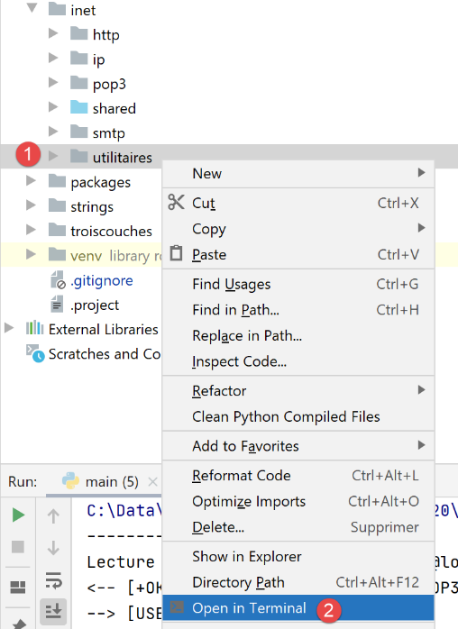
Le dialogue est le suivant :
(venv) C:\Data\st-2020\dev\python\cours-2020\python3-flask-2020\inet\utilitaires>RawTcpClient.exe localhost 110
Client [DESKTOP-30FF5FB:63762] connecté au serveur [localhost-110]
Tapez vos commandes (quit pour arrêter) :
<-- [+OK Bienvenue sur le serveur POP3 localhost.com]
USER guest
<-- [+OK Send your password]
PASS guest
<-- [+OK Mailbox locked and ready]
LIST
<-- [+OK 1 messages (612 octets)]
<-- [1 612]
<-- [.]
RETR 1
<-- [+OK 612 octets]
<-- [Return-Path: guest@localhost.com]
<-- [Received: from [127.0.0.1] (DESKTOP-30FF5FB [127.0.0.1])]
<-- [ by DESKTOP-30FF5FB with ESMTP]
<-- [ ; Wed, 8 Jul 2020 14:19:36 +0200]
<-- [To: guest@localhost.com]
<-- [From: "guest@localhost.com" <guest@localhost.com>]
<-- [Subject: protocole POP3]
<-- [Message-ID: <ca895136-25c5-411e-373a-a68cbd0eca51@localhost.com>]
<-- [Date: Wed, 8 Jul 2020 14:19:33 +0200]
<-- [User-Agent: Mozilla/5.0 (Windows NT 10.0; WOW64; rv:68.0) Gecko/20100101]
<-- [ Thunderbird/68.10.0]
<-- [MIME-Version: 1.0]
<-- [Content-Type: text/plain; charset=utf-8; format=flowed]
<-- [Content-Transfer-Encoding: 8bit]
<-- [Content-Language: fr]
<-- []
<-- [ceci est un test pour découvrir le protocole POP3]
<-- []
<-- [.]
QUIT
Fin de la connexion avec le serveur
- ligne 1 : on ouvre une connexion avec le port 110 de la machine [localhost]. C’est là qu’opère le service POP3 de [hMailServer] ;
- aux lignes 5, 7, 9, 13, 34, nous utilisons les commandes [USER, PASS, LIST, RETR, QUIT] ;
- ligne 4 : le message de bienvenue du serveur POP3 ;
- ligne 5 : on indique qu’on veut accéder à la boîte à lettres de l’utilisateur [guest] ;
- ligne 7 : on envoie le mot de passe de l’utilisateur [guest] en clair ;
- ligne 9 : on demande la liste des messages de la boîte à lettres ;
- ligne 13 : on demande le message n° 1 ;
- lignes 14-33 : le serveur POP3 envoie le message n° 1 ;
- ligne 34 : on termine la session ;
Voici un résumé de quelques commandes courantes acceptées par un serveur POP3 :
- la commande [USER] sert à définir l’utilisateur dont on veut lire la boîte mail ;
- la commande [PASS] sert à définir son mot de passe ;
- la commande [LIST] demande la liste des messages présents dans la boîte à lettres de l’utilisateur ;
- la commande [RETR] demande à voir le message dont on passe le n° ;
- la commande [DELE] demande la suppression du message dont on passe le n° ;
- la commande [QUIT] indique au serveur qu’on a terminé ;
La réponse du serveur peut prendre plusieurs formes :
- une ligne unique commençant par [+OK] pour indiquer que la commande précédente du client a réussi ;
- une ligne unique commençant par [-ERR] pour indiquer que la commande précédente du client a échoué ;
- plusieurs lignes où :
- la 1re ligne commence par [+OK] ;
- la dernière ligne est constituée d’un unique point ;
21.6.3. scripts [pop3/01] : un client POP3 basique

Comme le procole POP3 a la même structure que le protocole SMTP, le script [pop3/01/main.py] est un portage du script [smtp/01/main.py]. Il aura le fichier de configuration [pop3/01/config.py] suivant :
def configure() -> dict:
# les boîtes à lettres dont on relève les mails
mailboxes = [
# server : serveur POP3
# port : port du serveur POP3
# user : utilisateur dont on veut lire les messages
# password : son mot de passe
# maxmails : le nombre maximum de mails à télécharger
# timeout : délai d'attente maximal d'une réponse du serveur
# encoding : encodage des mails reçus
# delete : si True, alors les mails sont supprimés de la boîte à lettres
# une fois qu'ils ont été téléchargés localement
{
"server": "localhost",
"port": "110",
"user": "guest",
"password": "guest",
"maxmails": 10,
"timeout": 1.0,
"encoding": "utf-8",
"delete": False
}
]
# on rend la configuration
return {
"mailboxes": mailboxes
}
- lignes 3-24 : la liste des boîtes à lettres à consulter. Ici il n’y en a qu’une ;
- lignes 4-12 : significations des éléments du dictionnaire définissant chacune des boîtes à lettres ;
- ligne 15 : le serveur POP3 interrogé est le serveur local [hMailServer] ;
- lignes 17-18 : on veut lire la boîte à lettres de l’utilisateur [guest@localhost] ;
- ligne 19 : on lira au plus 10 mails ;
- ligne 20 : le client aura un délai d'attente d'une réponse du serveur d’au plus 1 seconde ;
- ligne 21 : le type d'encodage des messages lus ;
- ligne 22 : on ne supprimera pas les messages téléchargés ;
Le script [pop3/01/main.py] est le suivant :
# imports
import re
import socket
# -----------------------------------------------------------------------
def readmails(mailbox: dict, verbose: bool):
# lit la boîte mail décrite par le dictionnaire [mailbox]
# si verbose=True, fait un suivi des échanges client-serveur
…
# --------------------------------------------------------------------------
def send_command(mailbox: dict, connexion: socket, commande: str, verbose: bool, with_rclf: bool) -> str:
# envoie commande dans le canal connexion
# mode verbeux si verbose=True
# si with_rclf=True, ajoute la séquence rclf à échange
# rend la 1ère ligne de la réponse
…
# --------------------------------------------------------------------------
def affiche(echange: str, sens: int):
…
# main ----------------------------------------------------------------
# client POP3 (Post Office Protocol) permettant de lire des messages d'une boîte à lettres
# protocole de communication POP3 client-serveur
# -> client se connecte sur le port 110 du serveur smtp
# <- serveur lui envoie un message de bienvenue
# -> client envoie la commande USER utilisateur
# <- serveur répond OK ou non
# -> client envoie la commande PASS mot_de_passe
# <- serveur répond OK ou non
# -> client envoie la commande LIST
# <- serveur répond OK ou non
# -> client envoie la commande RETR n° pour chacun des mails
# <- serveur répond OK ou non. Si OK envoie le contenu du mail demandé
# -> serveur envoie ttes les lignes du mail et termine avec une ligne contenant le
# seul caractère .
# -> client envoie la commande DELE n° pour supprimer un mail
# <- serveur répond OK ou non
# # -> client envoie la commande QUIT pour terminer le dialogue avec le serveur
# <- serveur répond OK ou non
# les réponses du serveur ont la forme +OK texte où -ERR texte
# La réponse peut comporter plusieurs lignes. Alors la dernière est constituée d'un unique point
# les lignes de texte échangées doivent se terminer par les caractères RC(#13) et LF(#10)
#
# on récupère la configuration de l'application
import config
config = config.configure()
# on traite les boîtes mail une par une
for mailbox in config['mailboxes']:
try:
# affichage console
print("----------------------------------")
print(
f"Lecture de la boîte mail POP3 {mailbox['user']}@{mailbox['server']}:{mailbox['port']}")
# lecture de la boîte mail en mode verbeux
readmails(mailbox, True)
# fin
print("Lecture terminée...")
except BaseException as erreur:
# on affiche l'erreur
print(f"L'erreur suivante s'est produite : {erreur}")
finally:
pass
Commentaires
Comme nous l’avons dit, [pop3/01/main.py] est un portage du script [smtp/01/main.py] que nous avons déjà commenté. Nous ne commenterons que les principales différences :
- ligne 64 : la fonction [readmails] est chargée de lire les mails d'une boîte aux lettres. Les informations pour se connecter à cette boîte à lettres sont dans le dictionnaire [mailbox]. Le second paramètre [True] est le paramètre [Verbose] qui demande ici un suivi des échanges client / serveur ;
La fonction [readmails] est la suivante :
# -----------------------------------------------------------------------
def readmails(mailbox: dict, verbose: bool):
# lit les mails de la boîte mail décrite par le dictionnaire [mailbox]
# si verbose=True, fait un suivi des échanges client-serveur
# on isole les paramètres de la boîte mail
# on suppose que le dictionnaire [mailbox] est valide
server = mailbox['server']
port = int(mailbox['port'])
user = mailbox['user']
password = mailbox['password']
maxmails = mailbox['maxmails']
delete = mailbox['delete']
timeout = mailbox['timeout']
# on laisse remonter les erreurs système
connexion = None
try:
# ouverture d'une connexion sur le port [port] de [server] avec un timeout d'une seconde
connexion = socket.create_connection((server, port), timeout=timeout)
# connexion représente un flux de communication bidirectionnel
# entre le client (ce programme) et le serveur pop3 contacté
# ce canal est utilisé pour les échanges de commandes et d'informations
# lecture msg de bienvenue
send_command(mailbox, connexion, "", verbose, True)
# cmde USER
send_command(mailbox, connexion, f"USER {user}", verbose, True)
# cmde PASS
send_command(mailbox, connexion, f"PASS {password}", verbose, True)
# cmde LIST
première_ligne = send_command(mailbox, connexion, "LIST", verbose, True)
# analyse de la 1ère ligne pour connaître le nbre de messages
match = re.match(r"^\+OK (\d+)", première_ligne)
nbmessages = int(match.groups()[0])
# on boucle sur les messages
imessage = 0
while imessage < nbmessages and imessage < maxmails:
# cmde RETR
send_command(mailbox, connexion, f"RETR {imessage + 1}", verbose, True)
# cmde DELE
if delete:
send_command(mailbox, connexion, f"DELE {imessage + 1}", verbose, True)
# msg suivant
imessage += 1
# cmde QUIT
send_command(mailbox, connexion, "QUIT", verbose, True)
# fin
finally:
# fermeture connexion
if connexion:
connexion.close()
Commentaires
- lignes 8-14 : on récupère les informations de configuration de la boîte à lettres à consulter ;
- lignes 19-20 : ouverture d’une connexion avec le serveur POP3 ;
- lignes 26-27 : lecture du message de bienvenue envoyé par le serveur ;
- lignes 28-29 : on envoie la commande [USER] pour identifier l’utilisateur dont on veut les mails ;
- lignes 30-31 : on envoie la commande [PASS] pour donner le mot de passe de cet utilisateur ;
- lignes 32-33 : on envoie la commande [LIST] pour savoir combien il y a de mails dans la boîte à lettres de cet utilisateur. La fonction [sendCommand] renvoie la première ligne de la réponse du serveur. Dans celle-ci le serveur indique combien il y a de messages dans la boîte à lettres ;
- lignes 34-36 : on récupère le nombre de messages dans la 1re ligne de la réponse ;
- lignes 39-46 : on boucle sur chacun des messages. Pour chacun d’eux on émet deux commandes :
- RETR i : pour récupérer le message n° i (lignes 40-41) ;
- DELE i : pour le supprimer si la configuration demande que les messages lus soient supprimés du serveur (lignes 43-44) ;
- lignes 47-48 : on envoie la commande [QUIT] pour dire au serveur qu’on a terminé ;
La fonction [send_command] est la suivante :
# --------------------------------------------------------------------------
def send_command(mailbox: dict, connexion: socket, commande: str, verbose: bool, with_rclf: bool) -> str:
# envoie commande dans le canal connexion
# mode verbeux si verbose=True
# si with_rclf=True, ajoute la séquence rclf à échange
# rend la 1ère ligne de la réponse
# marque de fin de ligne
if with_rclf:
rclf = "\r\n"
else:
rclf = ""
# envoi commande si non vide
if commande:
connexion.send(bytearray(f"{commande}{rclf}", 'utf-8'))
# écho éventuel
if verbose:
affiche(commande, 1)
# lecture de la socket comme si elle était un fichier texte
encoding = f"{mailbox['encoding']}" if mailbox['encoding'] else None
file = connexion.makefile(encoding=encoding)
# on exploite ce fichier ligne par ligne
# lecture 1ère ligne
première_ligne = réponse = file.readline().strip()
# mode verbeux ?
if verbose:
affiche(première_ligne, 2)
# récupération code erreur
code_erreur = réponse[0]
if code_erreur == "-":
# il y a eu une erreur
raise BaseException(réponse[5:])
# cas particulier des réponses à plusieurs lignes LIST, RETR
cmd = commande.lower()[0:4]
if cmd == "list" or cmd == "retr":
# dernière ligne de la réponse ?
dernière_ligne = False
while not dernière_ligne:
# lecture ligne suivante
ligne_suivante = file.readline().strip()
# mode verbeux ?
if verbose:
affiche(ligne_suivante, 2)
# dernière ligne ?
dernière_ligne = ligne_suivante == "."
# fini - on rend la 1ère ligne
return première_ligne
Commentaires
- lignes 13-18 : la commande [command] n'est envoyée au serveur POP3 que si elle est non vide. Ce cas est nécessaire pour lire le message de bienvenue du serveur POP3 qu'il envoie alors même que le client n'a pas encore envoyé de commandes ;
- lignes 19-21 : on lit la socket comme si elle était un fichier texte. Cela va nous permettre d'utiliser la méthode [readline] (ligne 24) et de lire ainsi le message ligne par ligne. On utilise la clé [encoding] du dictionnaire [mailbox] pour indiquer le codage des lignes qui vont être lues ;
- ligne 24 : on lit la 1re ligne de la réponse ;
- lignes 28-32 : on gère le cas d'une éventuelle erreur. Celles-ci sont du type [-ERR invalid password, -ERR mailbox unknown, -ERR unable to lock mailbox…] ;
- ligne 32 : on lance une exception avec le message de l'erreur ;
- ligne 35 : seules les commandes [list, retr] peuvent avoir des réponses à plusieurs lignes ;
- lignes 36-45 : dans le cas d'une réponse à plusieurs lignes, on affiche toutes les lignes reçues (lignes 42-43) jusqu'à recevoir la dernière ligne (ligne 45) ;
- ligne 46 : on rend la 1re ligne lue car dans le cas de la commande [LIST], elle comporte le nombre de messages présents dans la boîte à lettres ;
Résultats
Prenons l'exemple précédent. Avec Thunderbird, nous avions envoyé le message suivant à l'utilisateur [guest@localhost] (il faut que le serveur hMailServer soit lancé) :
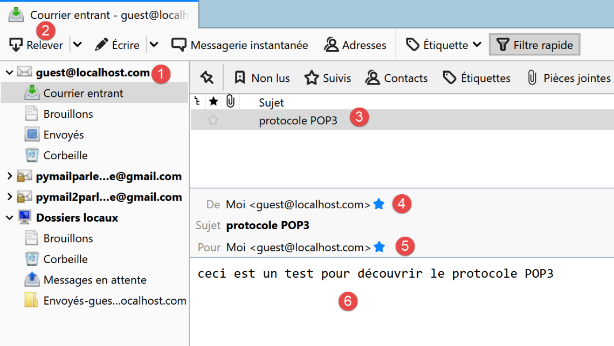
A l’exécution, on obtient les résultats suivants :
C:\Data\st-2020\dev\python\cours-2020\python3-flask-2020\venv\Scripts\python.exe C:/Data/st-2020/dev/python/cours-2020/python3-flask-2020/inet/pop3/01/main.py
----------------------------------
Lecture de la boîte mail POP3 guest@localhost:110
<-- [+OK Bienvenue sur le serveur POP3 localhost.com]
--> [USER guest]
<-- [+OK Send your password]
--> [PASS guest]
<-- [+OK Mailbox locked and ready]
--> [LIST]
<-- [+OK 1 messages (612 octets)]
<-- [1 612]
<-- [.]
--> [RETR 1]
<-- [+OK 612 octets]
<-- [Return-Path: guest@localhost.com]
<-- [Received: from [127.0.0.1] (DESKTOP-30FF5FB [127.0.0.1])]
<-- [by DESKTOP-30FF5FB with ESMTP]
<-- [; Wed, 8 Jul 2020 14:19:36 +0200]
<-- [To: guest@localhost.com]
<-- [From: "guest@localhost.com" <guest@localhost.com>]
<-- [Subject: protocole POP3]
<-- [Message-ID: <ca895136-25c5-411e-373a-a68cbd0eca51@localhost.com>]
<-- [Date: Wed, 8 Jul 2020 14:19:33 +0200]
<-- [User-Agent: Mozilla/5.0 (Windows NT 10.0; WOW64; rv:68.0) Gecko/20100101]
<-- [Thunderbird/68.10.0]
<-- [MIME-Version: 1.0]
<-- [Content-Type: text/plain; charset=utf-8; format=flowed]
<-- [Content-Transfer-Encoding: 8bit]
<-- [Content-Language: fr]
<-- []
<-- [ceci est un test pour découvrir le protocole POP3]
<-- []
<-- [.]
--> [QUIT]
<-- [+OK POP3 server saying goodbye...]
Lecture terminée...
Process finished with exit code 0
- lignes 15-31 : on récupère correctement le message envoyé à [guest@localhost].
Nous avons là un client POP3 basique auquel il manque certaines capacités :
- la possibilité de dialoguer avec un serveur POP3 sécurisé ;
- la possibilité de lire les pièces attachées à un message ;
Nous allons implémenter ces deux possibilités avec un nouveau script qui sera cette fois plus complexe.
21.6.4. scripts [pop3/02] : client POP3 avec les modules [poplib] et [email]
Nous allons écrire un client POP3 permettant de gérer les pièces attachées ainsi que la communication avec des serveurs sécurisés. Par ailleurs, nous sauvegarderons dans des fichiers, les messages et leurs pièces attachées.
Nous allons utiliser deux modules Python :
- [poplib] : qui va assurer le protocole POP3 ;
- [email] : qui regroupe de nombreux sous-modules qui vont nous permettre d'analyser les messages reçus. Chaque message est une chaîne de caractères structurée dans laquelle on peut retrouver :
- les entêtes du message [From, To, Subject, Return-Path…] ;
- le message dans ses versions texte et éventuellement HTML ;
- les pièces attachées ;

Le script [inet/pop3/02/main] [1] est configuré par le fichier [inet/pop3/02/config] [2] et utilise le module [inet/shared/mail_parser] [3].
Le fichier [pop3/02/config] est le suivant :
import os
def configure() -> dict:
# configuration de l'appli
config = {
# liste des boîtes à lettres à gérer
"mailboxes": [
# server : serveur POP3
# port : port du serveur POP3
# user : utilisateur dont on veut lire les messages
# password : son mot de passe
# maxmails : le nombre maximum de mail à télécharger
# timeout : délai d'attente maximal d'une réponse du serveur
# delete : à vrai s'il faut supprimer du serveur les messages téléchargés
# ssl : à vrai si la lecture des mails se fait au travers d'une liaison sécurisée
# output : le dossier de rangement des messages téléchargés
{
"server": "pop.gmail.com",
"port": "995",
"user": "pymail2parlexemple@gmail.com",
"password": "#6prIlhD&@1QZ3TG",
"maxmails": 10,
"delete": False,
"ssl": True,
"timeout": 2.0,
"output": "output"
}
]
}
# chemin absolu du dossier du script
script_dir = os.path.dirname(os.path.abspath(__file__))
# chemins absolus des dossiers à inclure dans le syspath
absolute_dependencies = [
# dossier local
f"{script_dir}/../../shared",
]
# configuration du syspath
from myutils import set_syspath
set_syspath(absolute_dependencies)
# on rend la configuration
return config
Le fichier définit la liste des boîtes à lettres à consulter et fixe le Python Path de l’application.
Il n’y a ici qu’une unique boîte à lettres :
- lignes 22-23 : l'utilisateur dont on veut lire les mails ;
- lignes 20-21 : le nom et le port du serveur POP3 qui stocke les mails de cet utilisateur ;
- ligne 24 : le nombre maximum de mails à récupérer. En effet, si vous essayez ce script sur votre propre boîte mail, vous ne voudrez sans doute pas récupérer les centaines de mails qui s'y trouvent ;
- ligne 25 : booléen qui indique si après la lecture d'un mail, on doit supprimer celui-ci (delete=True) ;
- ligne 26 : l’attribut [ssl] à True signifie que le serveur POP3 défini aux lignes 20-21 utilise une connexion cryptée ;
- ligne 27 : le temps d'attente maximal des réponses du serveur exprimé en secondes ;
- ligne 28 : le dossier dans lequel ranger les mails lus. Il sera créé s'il n'existe pas. On a ici un nom relatif. A l'exécution, il sera relatif au dossier à partir duquel vous lancez le script. Avec [Pycharm], ce dossier sera celui du script [pop3/02] ;
Le script [pop3/02/main] est le suivant :
# imports
import email
import os
import poplib
import shutil
# lecture d'une boîte mail
def readmails(mailbox: dict, verbose: bool):
# lit la boîte mail décrite par le dictionnaire [mailbox]
# si verbose=True, fait un suivi des échanges client-serveur
…
# main ----------------------------------------------------------------
# client POP3 (Post Office Protocol) permettant de lire des mails
# on récupère la configuration de l'application
import config
config = config.configure()
# on traite les boîtes mail une par une
for mailbox in config['mailboxes']:
try:
# affichage console
print("----------------------------------")
print(
f"Lecture de la boîte mail POP3 {mailbox['user']}@{mailbox['server']}:{mailbox['port']}")
# lecture de la boîte mail en mode verbeux
readmails(mailbox, True)
# fin
print("Lecture terminée...")
except BaseException as erreur:
# on affiche l'erreur
print(f"L'erreur suivante s'est produite : {erreur}")
finally:
pass
- lignes 17-36 : la partie [main] du script est analogue à celle du script [pop3/01] ;
La fonction [readmails] est la suivante :
# lecture d'une boîte mail
def readmails(mailbox: dict, verbose: bool):
# lit la boîte mail décrite par le dictionnaire [mailbox]
# si verbose=True, fait un suivi des échanges client-serveur
# import de mail_parser
from mail_parser import save_message
# on isole les paramètres de la boîte mail
# on suppose que le dictionnaire [mailbox] est valide
server = mailbox['server']
port = int(mailbox['port'])
user = mailbox['user']
password = mailbox['password']
maxmails = mailbox['maxmails']
ssl = mailbox['ssl']
timeout = mailbox['timeout']
output = mailbox['output']
# on laisse remonter les erreurs système
pop3 = None
try:
# on crée les dossiers de stockage s'ils n'existent pas
if not os.path.isdir(output):
os.mkdir(output)
# user
dir2 = f"{output}/{user}"
# on supprime le dossier [dir2] s'il existe puis on le recrée
if os.path.isdir(dir2):
# suppression
shutil.rmtree(dir2)
# création
os.mkdir(dir2)
# ouverture d'une connexion sur le port [port] de [server]
if ssl:
pop3 = poplib.POP3_SSL(server, port, timeout=timeout)
else:
pop3 = poplib.POP3(server, port, timeout=timeout)
# connexion représente un flux de communication bidirectionnel
# entre le client (ce programme) et le serveur pop3 contacté
# ce canal est utilisé pour les échanges de commandes et d'informations
# mode verbose
pop3.set_debuglevel(2 if verbose else 0)
# lecture msg de bienvenue
pop3.getwelcome( )
# cmde USER
réponse = pop3.user(user)
# cmde PASS
réponse = pop3.pass_(password)
# cmde LIST
liste = pop3.list()
# les mails sont dans liste[1]
imail = 0
nb_mails = len(liste[1])
fini = imail == maxmails or imail == nb_mails
éléments = liste[1]
while not fini:
# élément courant
élément = éléments[imail]
# élément est une liste d'octets qu'on décode en string
desc = élément.decode()
# on a une chaîne séparée par des blancs
# le 1er élément est le n° du message
num = desc.split()[0]
# on récupère le message
message = pop3.retr(int(num))
# les lignes du message sont dans message [1]
str_message = ""
for ligne in message[1]:
# ligne est une suite d'octets qu'on décode en string
str_message += f"{ligne.decode()}\r\n"
# dossier du message
dir3 = f"{dir2}/message_{num}"
# si le dossier n'existe pas, on le crée
if not os.path.isdir(dir3):
os.mkdir(dir3)
# objet email.message.Message
save_message(dir3, email.message_from_string(str_message), 0)
# un mail de +
imail += 1
# a-t-on atteint le max ?
fini = imail == maxmails or imail == nb_mails
# cmde QUIT
pop3.quit()
finally:
# fermeture connexion
if pop3:
pop3.close()
Commentaires
- lignes 6-7 : on importe la fonction [mail_parser.save_message] utilisée ligne 80 ;
- le code de la fonction est encapsulée dans un try (ligne 22)/ finally (ligne 88). Ainsi toutes les exceptions remontent au code principal qui les arrêtent et les affichent ;
- lignes 11-18 : on récupère les informations de configuration de la boîte à lettres ;
- lignes 23-33 : tous les messages seront stockés dans le dossier [output/user] où [output] et [user] sont définis dans la configuration. On crée donc successivement les dossiers [output] puis [output/user]. Pour créer ce dernier, on le supprime d'abord ligne 31. [shutil] est un module qu'il faut importer. [shutil.rmtree(dir)] supprime le dossier [dir] et tout ce qu'il contient ;
- pour toutes les opérations sur les fichiers système on utilise le module [os] qu'il faut également importer ;
- lignes 34-38 : on ouvre une connexion avec le serveur POP3. Si le serveur est sécurisé, on utilise la classe [poplib.POP3_SSL] sinon la classe [poplib.POP3]. L'attribut [ssl] utilisé ligne 35 provient de la configuration de la boîte à lettres ;
- ligne 45 : on fixe un niveau de logs :
- 0 : pas de logs ;
- 1 : les commandes émises par le client POP3 sont loguées ;
- 2 : logs détaillés. On voit également ce que reçoit le client POP3 ;
- ligne 47 : après la connexion, leserveur POP3 envoie un message de bienvenue. On lit celui-ci ;
- lignes 48-49 : commande USER du protocole POP3 ;
- lignes 50-51 : commande PASS du protocole POP3 ;
- lignes 52-53 : commande LIST du protocole POP3. La réponse est un tuple (response, ['mesg_num octets'…], octets), par exemple liste=(b'+OK 3 messages (3859 octets)', [b'1 584', b'2 550', b'3 2725'], 22). On voit que les deux premiers éléments du tuple sont des bytes (préfixe b). liste[1] est un tableau où chaque élément est une suite d'octets contenant deux informations : le n° du message et sa taille en octets ;
- ligne 56 : de ce qui précède on déduit que le nombre de messages dans la boîte à lettres peut être obtenu par [len[liste1]] ;
- lignes 59-84 : on boucle sur chacun des messages. On s'arrête lorsque tous ont été lus ou qu'on a atteint le nombre maximal de mails fixé par configuration ;
- ligne 61 : élément courant du tableau liste[1], donc quelque chose comme b'1 584', une suite d'octets ;
- ligne 63 : on passe de la suite d'octets à une chaîne de caractères. On a maintenant la chaîne '1 584' ;
- ligne 66 : on récupère le n° du message, ici la chaîne '1' ;
- ligne 68 : on émet la commande POP3 RETR num. On récupère une réponse du genre :
[message=(b'+OK 584 octets', [b'Return-Path: guest@localhost', b'Received: from [127.0.0.1] (localhost [127.0.0.1])', b'\tby DESKTOP-528I5CU with ESMTPA', b'\t; Tue, 17 Mar 2020 09:41:50 +0100', b'To: guest@localhost', b'From: "guest@localhost" <guest@localhost>', b'Subject: test', b'Message-ID: <2572d0f0-5b7c-2c31-5a70-c628293d5709@localhost>', b'Date: Tue, 17 Mar 2020 09:41:48 +0100', b'User-Agent: Mozilla/5.0 (Windows NT 10.0; WOW64; rv:68.0) Gecko/20100101', b' Thunderbird/68.6.0', b'MIME-Version: 1.0', b'Content-Type: text/plain; charset=utf-8; format=flowed', b'Content-Transfer-Encoding: 8bit', b'Content-Language: fr', b'', b'h\xc3\xa9l\xc3\xa8ne est all\xc3\xa9e au march\xc3\xa9 acheter des l\xc3\xa9gumes.', b''], 614)]
- (suite)
- message est un tuple de trois éléments ;
- message[1] est un tableau de lignes. Chaque ligne est une suite d'octets (préfixe b). Le message complet est formé par cet ensemble de lignes ;
- [Return-Path, Received, To, Subject, Message-ID, Content-Type, Content-Transfer-Encoding, Content-Language] sont les entêtes du message. Chacun donne une information sur le message reçu. Ces informations vont permettre de récupérer le corps du message (avant-dernier élément du tableau message[1]) ;
- lignes 71-73 : on crée la chaîne [strMessage] formée de toutes les lignes du message. On a maintenant le message sous forme d'une chaîne de caractères. Ce message peut contenir d'autres messages ainsi que des pièces attachées. Car les pièces attachées le sont sous la forme d'une chaîne de caractères. Donc un point à retenir, c'est qu'un mail est au départ une chaîne de caractères et c'est cette chaîne de caractères qu'il faut analyser pour en extraire les pièces attachées, les éventuels autres messages encapsulés et bien sûr le corps du message, ce qu'a écrit l'expéditeur ;
- lignes 74-78 : on va ranger le corps du message et les pièces attachées message dans le dossier [dir3] ;
- lignes 79-80 : on va déléguer l'analyse du message à une fonction [save_message] :
- le 1er paramètre est [dir3], le dossier dans lequel le contenu du message doit être rangé ;
- le second paramètre est un type [email.message.Message]. Cet objet a les méthodes pour récupérer les différentes parties du message (corps, pièces attachées) ainsi que tous ses entêtes. Il faut importer le module [email] pour disposer de cet objet. La fonction [email.message_from_string] permet de construire un objet [email.message.Message] à partir de la chaîne de caractères du message ;
La fonction [save_message] fait partie du module [mail_parser] :

Le module [mail_parser] a été importé aux lignes 6-7 de la fonction [readmails] ;
Dans [mail_parser.py] la fonction [save_message] est la suivante :
# imports
import codecs
import email.contentmanager
import email.header
import email.iterators
import email.message
import os
# sauvegarde d'un message de type email.message.Message
# cette fonction peut être appelée de façon récursive
def save_message(output: str, email_message: email.message.Message, irfc822=0) -> int:
# output : dossier de sauvegarde des messages
# email_message : le message à sauvegarder
# irfc822 : n° courant de la numérotation des mails attachés
#
# partie du message
part = email_message
# les entêtes [From, To, Subject] sont trouvés dans une des parties multipart
# ou bien dans une partie [text/*] lorsqu'il n'y a pas de partie [multipart]
keys = part.keys()
# From doit faire partie des entêtes, sinon la partie n'a pas les entêtes qu'on cherche
if "From" in keys:
# on récupère certains entêtes
headers = [f"From: {decode_header(part.get('From'))}",
f"To: {decode_header(part.get('To'))}",
f"Subject: {decode_header(part.get('Subject'))}",
f"Return-Path: {decode_header(part.get('Return-Path'))}",
f"User-Agent: {decode_header(part.get('User-Agent'))}",
f"Date: {decode_header(part.get('Date'))}"]
# sauvegarde des entêtes dans un fichier texte
with codecs.open(f"{output}/headers.txt", "w", "utf-8") as file:
# écriture dans fichier
string = '\r\n'.join(headers)
file.write(f"{string}\r\n")
# type de la partie [part]
main_type = part.get_content_maintype()
…
Commentaires
- ligne 12 : la fonction reçoit au plus trois paramètres :
- [output] : le dossier où enregistrer le message (2ième paramètre) ;
- [email_message] : un message de type [email.message.Message]. Ce type est un type structuré. Il contient le texte du mail ainsi que tous les fichiers attachés et offre des méthodes pour récupérer ses différents éléments ;
- [irfc822] : ce paramètre est utilisé pour numéroter les mails encapsulés dans [email_message] ;
- ligne 18 : l'objet [email_message] est mis dans [part]. Le type [email.message.Message] contient des parties [part] (corps du message, pièces attachées, mails encapsulés) qui ont également le type [email.message.Message]. Chaque partie [part] peut avoir des sous-parties. Ainsi le type [email.message.Message] est un arbre d'éléments de type [email.message.Message] :
- [part.ismultipart()] vaut [True] si la partie [part] contient des sous-parties. Celles-ci sont alors disponibles via [part.get_payload()] ;
- lorsque [part.ismultipart()] vaut [False], c'est qu'on est arrivé à une feuille de l'arbre du message initial : il peut s'agir :
- du corps du message sous la forme d'un texte normal ;
- du corps du message sous la forme d'un texte HTML ;
- d'une pièce attachée (à l'exception d'un message encapsulé pour lequel [part.ismultipart()] vaut [True]) ;
- de par la nature en arbre du paramètre [email.message.Message], la fonction [save_message] sera appelée de façon récursive. La récursivité cesse lorsqu'on atteint les feuilles de l'arbre, ç-à-d une partie [part] pour laquelle [part.ismultipart()] vaut [False] ;
- ligne 21 : nous demandons à voir les clés (ou entêtes) du message couramment analysé (qui de par la récursivité peut être une sous-partie du message initial) ;
- lignes 23-35 : on veut enregistrer les entêtes :
- [From] : l'expéditeur du message ;
- [To] : le destinataire du message ;
- [Subject] : le sujet du message ;
- [Return-Path] : le destinataire à qui on doit répondre si on veut répondre. En effet, cette information n'est pas toujours dans le [From] ;
- [User-Agent] : le client POP3 qui dialogue avec le serveur POP3 ;
- [Date] : date d'envoi du mail ;
- ligne 23 : seule l'une des parties d'un message contient ces entêtes. Pour les autres parties, le code des lignes 23-35 sera ignoré ;
- lignes 25-30 : on crée une liste avec les six entêtes ;
- ligne 25 : analysons le 1er entête :
- [part.get(key)] permet d'avoir l'entête associé à la clé [key] ;
- cet entête peut être encodé. Si cet encodage n'est pas utf-8, on décode l'entête pour le réencoder en utf-8 à l’aide de la fonction [decode_header] ;
- le 1er entête sera de la forme [From: pymail2lexemple@gmail.com] ;
- lignes 31-35 : on sauve les entêtes dans le fichier [output/headers.txt] ;
La fonction [decode_header] est la suivante (toujours dans [mail_parser.py]) :
# décodage de headers
def decode_header(header: object) -> str:
# on décode l'entête
header = email.header.decode_header(f"{header}")
# le résultat est un tableau - ici il n'aura qu'un élément de type (header, encoding)
# si encoding==None, alors header est une chaîne de caractères
# sinon c'est une liste d'octets codés par encoding
header, encoding = header[0]
if not encoding:
# si pas d'encodage
return header
else:
# si encodage, on décode
return header.decode(encoding)
Commentaires
- ligne 4 : on décode l'entête :
- il faut importer le module [email.header] ;
- on obtient une liste de tuples [(header1,encoding1) , (header2, encoding2)…] ;
- pour les entêtes [From, To, Subject, Return-Path, Date] la liste n'aura qu'un élément ;
- ligne 8 : on récupère l'entête unique et son encodage :
- si [encoding==None] alors [header] est l'entête sous la forme d'une chaîne de caractères ;
- sinon, [header] est une suite d'octets représentant l'entête encodé ;
- lignes 10-11 : s'il n'y avait pas d'encodage, alors on rend l'entête ;
- lignes 12-14 : s'il y avait un encodage, alors on décode, dans une chaîne de caractères, la suite d'octets qu'on a récupérée et on rend celle-ci ;
Revenons à la fonction [save_message] :
# sauvegarde d'un message de type email.message.Message
# cette fonction peut être appelée de façon récursive
def save_message(output: str, email_message: email.message.Message, irfc822=0) -> int:
# output : dossier de sauvegarde des messages
# email_message : le message à sauvegarder
# irfc822 : n° courant de la numérotation des mails attachés
#
# partie du message
part = email_message
# les entêtes [From, To, Subject] sont trouvés dans une des parties multipart
# ou bien dans une partie [text/*] lorsqu'il n'y a pas de partie [multipart]
keys = part.keys()
# From doit faire partie des entêtes, sinon la partie n'a pas les entêtes qu'on cherche
if "From" in keys:
# on récupère certains entêtes
headers = [f"From: {decode_header(part.get('From'))}",
f"To: {decode_header(part.get('To'))}",
f"Subject: {decode_header(part.get('Subject'))}",
f"Return-Path: {decode_header(part.get('Return-Path'))}",
f"User-Agent: {decode_header(part.get('User-Agent'))}",
f"Date: {decode_header(part.get('Date'))}"]
# sauvegarde des entêtes dans un fichier texte
with codecs.open(f"{output}/headers.txt", "w", "utf-8") as file:
# écriture dans fichier
string = '\r\n'.join(headers)
file.write(f"{string}\r\n")
# type de la partie [part]
main_type = part.get_content_maintype()
sub_type = part.get_content_subtype()
type_of_part = f"{main_type}/{sub_type}"
# si le message est de type text/plain
if type_of_part == "text/plain":
# message texte
save_textmessage(output, part, 0)
# si le message est de type text/html
elif type_of_part == "text/html":
# message HTML
save_textmessage(output, part, 1)
# si le message est un conteneur de parties
elif part.is_multipart():
…
else:
…
# on ignore les autres parties (pas text/plain, pas text/html, pas attachment)
# on rend la valeur actuelle de irfc822 (numérotation des mails attachés rangés dans le dossier output)
return irfc822
Commentaires
- lignes 1-26 : on a traité les entêtes du message initial ;
- lignes 28-31 : les parties d'un message de type [email.message.Message] ont un type principal et un sous-type. On les récupère ;
- lignes 32-35 : si la partie traitée a le type [text/plain] alors on est arrivés à une feuille de l'arbre du message initial. C'est le texte qu'a écrit l'expéditeur dans son message ;
- ligne 35 : ce texte est écrit dans un fichier :
- le 1er paramètre [output] est le dossier dans lequel le texte doit être sauvegardé ;
- le second paramètre est la partie du message qui contient le texte à sauvegarder ;
- le troisième paramètre vaut 0 pour sauvegarder un texte normal, 1 pour un texte HTML ;
- lignes 37-40 : si la partie a le type [text/html] alors on est également arrivés à une feuille de l'arbre du message initial. C'est le texte qu'a écrit l'expéditeur dans son message, cette fois-ci au format HTML. Les gestionnaires de courrier ne proposent pas tous ce format ;
La fonction [save_textmessage] est la suivante :
# sauvegarde d'un message texte
def save_textmessage(output: str, part: email.message.Message, type_of_text: int):
# entêtes
headers = []
# charset du message
charset = part.get_content_charset()
if charset is not None:
charset = part.get_content_charset().lower()
headers.append(f"Charset: {charset}")
# mode de codage du contenu
content_transfer_encoding = part.get("Content-Transfer-Encoding")
if content_transfer_encoding is not None:
headers.append(f"Transfer-Content-Encoding: {content_transfer_encoding}")
# le mode 8bit a posé problème
if content_transfer_encoding == "8bit":
# on récupère le message du mail
msg = part.get_payload()
else:
# on récupère le message du mail
msg = email.contentmanager.raw_data_manager.get_content(part)
# selon les types de texte
filename = None
if type_of_text == 0:
# sauvegarde des entêtes
with codecs.open(f"{output}/headers.txt", "a", "utf-8") as file:
# écriture dans fichier
string = '\r\n'.join(headers)
file.write(f"{string}\r\n")
# fichier texte pour le contenu
filename = f"{output}/mail.txt"
elif type_of_text == 1:
# fichier html pour le contenu
filename = f"{output}/mail.html"
# sauvegarde du message
with codecs.open(filename, "w", "utf-8") as file:
# écriture dans fichier
file.write(msg)
Commentaires
- comme les entêtes, le texte du message peut être encodé. Il peut y avoir deux encodages :
- l'encodage initial du texte (utf-8, iso-8859-1…). C'est l'encodage utilisé par le gestionnaire de courrier qui a envoyé le message. Il est connu avec l'entête [Content-Type] du message reçu ;
- un second encodage qu'a pu subir le texte précédent pour être envoyé. Il est connu avec l'entête [Transfer-Content-Encoding] du message reçu ;
- ligne 6 : l'encodage initial du texte ;
- ligne 11 : le second encodage que le texte a subi pour son transfert vers le destinataire ;
- lignes 9, 13 : ces deux informations sont mises dans la liste [headers]. Elles seront rajoutées aux informations du fichier [headers.txt] qui enregistre certains entêtes du message ;
- ligne 20 : [email.contentmanager.raw_data_manager.get_content] permet d'avoir le message avec son encodage initial 1. On s'est débarrassé de l'encodage 2. Seulement l'objet [email.contentmanager.raw_data_manager] ne gère que deux types de [Transfer-Content-Encoding] :
- [quoted-printable] ;
- [base64] ;
Il ignore les autres. Or Thunderbird par exemple utilise le [Transfer-Content-Encoding] nommé "8bit". Cet encodage est ignoré et les messages avec des caractères accentués sont dénaturés. Le message peut alors être obtenu par la méthode [part.get_payload()] (lignes 15-17) ;
- ligne 21 : lorsqu'on est là, on a le message débarrassé de son encodage de transfert, donc le message tel qu'il a été écrit par l'expéditeur ;
- lignes 22-37 : on est dans le cas où on doit sauvegarder un message texte ;
- lignes 24-28 : on sauvegarde les deux entêtes construits lignes 9, 13 dans le fichier [headers.txt]. Celui-ci existe déjà et contient des entêtes. Aussi utilise-t-on le mode "a" (ligne 25) pour ouvrir ce fichier. "a" signifie "append" et les nouveaux entêtes sont ajoutés (en fin de fichier) au contenu existant du fichier [headers.txt] ;
- ligne 30 : le nom du fichier dans lequel sauvegarder le message texte ;
- ligne 33 : le nom du fichier dans lequel sauvegarder le message HTML ;
- lignes 34-37 : on sauvegarde le texte utf-8 dans un fichier ;
Revenons à la fonction [save_message] :
# sauvegarde d'un message de type email.message.Message
# cette fonction peut être appelée de façon récursive
def save_message(output: str, email_message: email.message.Message, irfc822=0) -> int:
# output : dossier de sauvegarde des messages
# email_message : le message à sauvegarder
# irfc822 : n° courant de la numérotation des mails attachés
#
# partie du message
part = email_message
# les entêtes [From, To, Subject] sont trouvés dans une des parties multipart
# ou bien dans une partie [text/*] lorsqu'il n'y a pas de partie [multipart]
keys = part.keys()
# From doit faire partie des entêtes, sinon la partie n'a pas les entêtes qu'on cherche
if "From" in keys:
# on récupère certains entêtes
headers = [f"From: {decode_header(part.get('From'))}",
f"To: {decode_header(part.get('To'))}",
f"Subject: {decode_header(part.get('Subject'))}",
f"Return-Path: {decode_header(part.get('Return-Path'))}",
f"User-Agent: {decode_header(part.get('User-Agent'))}",
f"Date: {decode_header(part.get('Date'))}"]
# sauvegarde des entêtes dans un fichier texte
with codecs.open(f"{output}/headers.txt", "w", "utf-8") as file:
# écriture dans fichier
string = '\r\n'.join(headers)
file.write(f"{string}\r\n")
# type de la partie [part]
main_type = part.get_content_maintype()
sub_type = part.get_content_subtype()
type_of_part = f"{main_type}/{sub_type}"
# si le message est de type text/plain
if type_of_part == "text/plain":
# message texte
save_textmessage(output, part, 0)
# si le message est de type text/html
elif type_of_part == "text/html":
# message HTML
save_textmessage(output, part, 1)
# si le message est un conteneur de parties
elif part.is_multipart():
# cas particulier du mail attaché
if type_of_part == "message/rfc822":
# création d'un nouveau dossier output2 pour le mail attaché
irfc822 += 1
output2 = f"{output}/rfc822_{irfc822}"
os.mkdir(output2)
# sauvegarde des sous-parties du message irfc822 dans output2
for subpart in part.get_payload():
# dans le nouveau dossier irfc822 redémarre à 0
save_message(output2, subpart, 0)
else:
# on n'a pas affaire à un mail attaché
# sauvegarde des sous-parties dans le dossier courant output
# irfc822 doit alors être incrémenté pour chaque sous-partie message/rfc822
for subpart in part.get_payload():
# save_message rend la dernière valeur de irfc822
# incrémentée de 1 si subpart="message/rfc822", pas incrémentée sinon
irfc822 = save_message(output, subpart, irfc822)
else:
# autres cas (pas text/plain, pas text/html, pas multipart)
# attachement ?
disposition = part.get('Content-Disposition')
if disposition and disposition.startswith('attachment'):
save_attachment(output, part)
# on ignore les autres parties (pas text/plain, pas text/html, pas attachment)
# on rend la valeur actuelle de irfc822 (numérotation des mails attachés rangés dans le dossier output)
return irfc822
Commentaires
- lignes 33-40 : nous avons traité deux cas possibles d'un message à une extrémité de l'arbre du message initial (pas de sous-parties). Il nous reste encore deux cas à traiter :
- lignes 43-62 : le cas où la partie analysée contient elle-même des sous-parties (part.ismultipart()==True) ;
- lignes 63-68 : pour les cas restants, on ne traite que le cas où la partie analysée est un attachement ;
Nous traitons ce dernier cas. Nous sommes là encore à une extrémité du message initial (pas de sous-parties). Nous avons déjà rencontré deux cas de cette espèce : les types text/plain et text/html. Nous traitons maintenant le cas du fichier attaché.
- ligne 66 : l'attachement est repéré par la clé [Content-Disposition] ;
- ligne 67 : si cette clé existe et que celle-ci commence par la chaîne [attachment], alors on a affaire à une pièce attachée au message ;
- ligne 68 : l'attachement est sauvegardé dans le dossier [output] ;
La fonction [save_attachment] est la suivante :
# sauvegarde d'un attachement
def save_attachment(output: str, part: email.message.Message):
# nom du fichier attaché
filename = os.path.basename(part.get_filename())
# le nom du fichier peut être encodé
# par exemple =?utf-8?Q?Cours-Tutoriels-Serge-Tah=C3=A9-1568x268=2Ep
filename = decode_header(filename)
# on sauvegarde le fichier attaché
with open(f"{output}/{filename}", "wb") as file:
file.write(part.get_payload(decode=True))
- ligne 4 : si [part] est un attachement, alors le nom du fichier attaché est obtenu par [part.get_filename]. On ne garde que le nom du fichier pas son chemin ;
- ligne 8 : les noms des fichiers sont généralement encodés et ce de la même façon que les entêtes du message. Aussi utilise-t-on la fonction [decode_header] pour le décoder ;
- ligne 11 : le contenu du fichier attaché est pour l'instant une chaîne de caractères produite par l'encodage (souvent base64) en texte du contenu initial du fichier. Pour obtenir ce contenu initial on utilise la fonction [part.get_payload(decode=True)]. Le paramètre [decode=True] indique que le contenu de la pièce attachée doit être décodé. On obtient alors une suite d'octets ;
- ligne 10 : cette suite d'octets est sauvegardée dans le fichier [output/filename]. Le mode "wb" d'ouverture du fichier signifie write binary ;
Revenons au code de la fonction [save_message] :
def save_message(output: str, email_message: email.message.Message, irfc822=0) -> int:
# output : dossier de sauvegarde des messages
# email_message : le message à sauvegarder
# irfc822 : n° courant de la numérotation des mails attachés
#
# partie du message
part = email_message
# les entêtes [From, To, Subject] sont trouvés dans une des parties multipart
# ou bien dans une partie [text/*] lorsqu'il n'y a pas de partie [multipart]
keys = part.keys()
# From doit faire partie des entêtes, sinon la partie n'a pas les entêtes qu'on cherche
if "From" in keys:
# on récupère certains entêtes
headers = [f"From: {decode_header(part.get('From'))}",
f"To: {decode_header(part.get('To'))}",
f"Subject: {decode_header(part.get('Subject'))}",
f"Return-Path: {decode_header(part.get('Return-Path'))}",
f"User-Agent: {decode_header(part.get('User-Agent'))}",
f"Date: {decode_header(part.get('Date'))}"]
# sauvegarde des entêtes dans un fichier texte
with codecs.open(f"{output}/headers.txt", "w", "utf-8") as file:
# écriture dans fichier
string = '\r\n'.join(headers)
file.write(f"{string}\r\n")
# type de la partie [part]
main_type = part.get_content_maintype()
sub_type = part.get_content_subtype()
type_of_part = f"{main_type}/{sub_type}"
# si le message est de type text/plain
if type_of_part == "text/plain":
# message texte
save_textmessage(output, part, 0)
# si le message est de type text/html
elif type_of_part == "text/html":
# message HTML
save_textmessage(output, part, 1)
# si le message est un conteneur de parties
elif part.is_multipart():
# cas particulier du mail attaché
if type_of_part == "message/rfc822":
# création d'un nouveau dossier output2 pour le mail attaché
irfc822 += 1
output2 = f"{output}/rfc822_{irfc822}"
os.mkdir(output2)
# sauvegarde des sous-parties du message irfc822 dans output2
for subpart in part.get_payload():
# dans le nouveau dossier irfc822 redémarre à 0
save_message(output2, subpart, 0)
else:
# on n'a pas affaire à un mail attaché
# sauvegarde des sous-parties dans le dossier courant output
# irfc822 doit alors être incrémenté pour chaque sous-partie message/rfc822
for subpart in part.get_payload():
# save_message rend la dernière valeur de irfc822
# incrémentée de 1 si subpart="message/rfc822", pas incrémentée sinon
irfc822 = save_message(output, subpart, irfc822)
else:
# autres cas (pas text/plain, pas text/html, pas multipart)
# attachement ?
disposition = part.get('Content-Disposition')
if disposition and disposition.startswith('attachment'):
save_attachment(output, part)
# on ignore les autres parties (pas text/plain, pas text/html, pas attachment)
# on rend la valeur actuelle de irfc822 (numérotation des mails attachés rangés dans le dossier output)
return irfc822
Commentaires
- nous avons traité les cas des terminaisons de l'arbre du message initial : les parties [text/plain, text/html et Content-Disposition=attachment;…] Il nous reste à traiter le cas où la partie analysée est un conteneur de parties, ç-à-d qu'elle contient des sous-parties [part.is_multipart()==True], ligne 41. Pour arriver aux terminaisons de l'arbre du message, il faut donc analyser ces sous-parties ;
- ligne 43 : on traite de façon particulière le cas où la partie analysée a un type [message/rfc822]. C'est le type d'un mail. C'est donc le cas où un mail a comme pièce attachée un autre mail ;
Le code est le suivant :
# si le message est un conteneur de parties
elif part.is_multipart():
# cas particulier du mail attaché
if type_of_part == "message/rfc822":
# création d'un nouveau dossier output2 pour le mail attaché
irfc822 += 1
output2 = f"{output}/rfc822_{irfc822}"
os.mkdir(output2)
# sauvegarde des sous-parties du message irfc822 dans output2
for subpart in part.get_payload():
# dans le nouveau dossier irfc822 redémarre à 0
save_message(output2, subpart, 0)
else:
# on n'a pas affaire à un mail attaché
# sauvegarde des sous-parties dans le dossier courant output
# irfc822 doit alors être incrémenté pour chaque sous-partie message/rfc822
for subpart in part.get_payload():
# save_message rend la dernière valeur de irfc822
# incrémentée de 1 si subpart="message/rfc822", pas incrémentée sinon
irfc822 = save_message(output, subpart, irfc822)
…
return irfc822
- la différence entre une partie [message/rfc822] et les autres parties multipart est que le dossier de sauvegarde change ;
- lignes 6-8 : pour la partie [message/rfc822], le dossier de sauvegarde devient celui de la ligne 7 [output/rfc822_x] où x est le n° du mail attaché, 1 pour le premier, 2 pour le deuxième… ;
- ligne 21 : pour les autres parties multipart, le dossier de sauvegarde continue à être le dossier [output] du message initial. On ne change pas de dossier ;
- lignes 10-12 : chaque sous-partie est sauvegardée par un appel récursif à [save_message]. Le 3e paramètre est l'indice de numérotation des mails encapsulés dans [subpart]. Au départ cet indice vaut 0 ;
- ligne 21 : même explication que pour la ligne 12, mais la valeur du 3e paramètre [irfc822] change. Si dans la boucle des lignes 18-21, il y a plusieurs mails encapsulés, ils doivent être rangés dans des dossiers […/rfc822-1…/rfc822_2…]. Donc le 3e paramètre de la fonction [save_message] doit avoir successivement les valeurs, 1, 2, 3… Pour ce faire, [save_message] rend la valeur de [irfc822] (ligne 21).
Prenons un exemple et supposons que la liste des sous-parties de la ligne 18 soit [subpart1, subpart2, subpart3, subpart4, subpart5] et que [subpart1, subpart3, subpart5] soient des mails attachés, [subpart2] une partie text/plain et [subpart4] un attachement, et qu'on n'a pas encore rencontré de mail attaché dans le message [irfc822=0]. Dans ce cas :
- (suite)
- [subpart1] est sauvegardé par la ligne 21 : la fonction [saveMessage] est exécutée avec irfc822=0 ;
- [subpart1] est un mail attaché, donc irfc822 passe à 1 (ligne 6 du code). Un dossier [output/irfc822_1] est créé. La valeur rendue par [saveMessage(ouput,subpart1,0)] est donc 1 (ligne 23) ;
- [subpart2] est sauvegardé par la ligne 21 : la fonction [saveMessage] est exécutée avec irfc822=1 ;
- [subpart2] n'est pas un mail attaché. Donc irfc822 reste à 1. C'est la valeur récupérée ligne 21 ;
- [subpart3] est sauvegardé par la ligne 21 : la fonction [save_message] est exécutée avec irfc822=1 ;
- [subpart3] est un mail attaché, donc irfc822 passe à 2 (ligne 6 du code). Un dossier [output/irfc822_2] est créé. La valeur rendue par [save_message(ouput,subpart1,1)] est donc 2 (ligne 21) ;
- [subpart4] est sauvegardé par la ligne 21 : la fonction [save_message] est exécutée avec irfc822=2 ;
- [subpart4] n'est pas un mail attaché. Donc irfc822 reste à 2. C'est la valeur récupérée ligne 21 ;
- [subpart5] est sauvegardé par la ligne 21 : la fonction [save_message] est exécutée avec irfc822=2 ;
- [subpart5] est un mail attaché, donc irfc822 passe à 3 (ligne 6 du code). Un dossier [output/irfc822_3] est créé. La valeur rendue par [save_message(ouput,subpart1,2)] est donc 3 (ligne 21) ;
Exemples d'exécution
Nous envoyons 4 mails à [pymail2parlexemple@gmail.com] à partir de : [Gmail, Outlook, em Client, Thunderbird]
- [Gmail] : [https://mail.google.com/] ;
- [Outlook] : [https://outlook.live.com/owa/] ;
- [em Client] : [https://www.emclient.com/] ;
- [Mozilla Thunderbird] : [https://www.thunderbird.net/fr/] ;
Tous les mails auront le sujet [hélène va au marché] et comme texte [acheter des légumes]. On veut tester comment sont récupérés les caractères accentués.
Nous les lisons avec le script [pop3/02/main] configuré avec le fichier [pop3/02/config] suivant :
import os
def configure() -> dict:
# configuration de l'appli
config = {
# liste des boîtes à lettres à gérer
"mailboxes": [
# server : serveur POP3
# port : port du serveur POP3
# user : utilisateur dont on veut lire les messages
# password : son mot de passe
# maxmails : le nombre maximum de mail à télécharger
# timeout : délai d'attente maximal d'une réponse du serveur
# delete : à vrai s'il faut supprimer du serveur les messages téléchargés
# ssl : à vrai si la lecture des mails se fait au travers d'une liaison sécurisée
# output : le dossier de rangement des messages téléchargés
{
"server": "pop.gmail.com",
"port": "995",
"user": "pymail2parlexemple@gmail.com",
"password": "#6prD&@1QZ3TG",
"maxmails": 10,
"delete": False,
"ssl": True,
"timeout": 2.0,
"output": "output"
}
]
}
# chemin absolu du dossier du script
script_dir = os.path.dirname(os.path.abspath(__file__))
# chemins absolus des dossiers à inclure dans le syspath
absolute_dependencies = [
# dossier local
f"{script_dir}/../../shared",
]
# configuration du syspath
from myutils import set_syspath
set_syspath(absolute_dependencies)
# on rend la configuration
return config
Le résultat est le suivant :
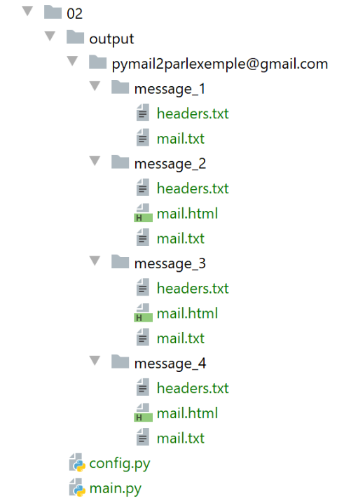
Le message 1 est celui envoyé par Thunderbird :

- en [5], Thunderbird [3] utilise un [Transfer-Content-Encoding] de type [8bit] ;
- en [4] : le message est codé en UTF-8 ;
Le message 2 est celui envoyé par em Client :


On remarquera que [em Client] code les textes en utf-8 [4] et qu'il les transfère en [quoted-printable] [5]. Il a également envoyé une copie du message en HTML [7-8]. Tous les gestionnaires de mail testés ici peuvent faire cela. Il s’agit d’un paramètre de configuration.
Le message 3 est celui envoyé par Gmail :

On remarquera que Gmail code les textes en utf-8 [3] et qu'il les transfère en [quoted-printable] [4]. En [6], la version HTML du message.
Le message 4 est celui envoyé par Outlook :
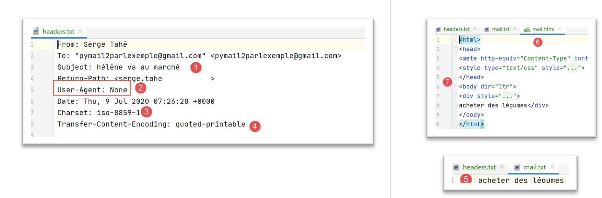
On remarquera que Outlook code les textes en iso-8859-1 [3] et qu'il les transfère en [quoted-printable] [4].
Les exemples précédents montrent deux choses :
- notre client [pop3/02] a été fonctionnel ;
- les gestionnaires de courriers ont des façons différentes d'envoyer un mail ;
Voyons maintenant les fichiers attachés. Avec Thunderbird, nous vidons la boîte mail de l'utilisateur [pymail2parlexemple@gmail.com]. Puis nous utilisons le script [smtp/03/main] pour envoyer un mail avec la configuration [smtp/03/config] suivante :
import os
def configure() -> dict:
# configuration de l'application
script_dir = os.path.dirname(os.path.abspath(__file__))
return {
# description : description du mail envoyé
# smtp-server : serveur SMTP
# smtp-port : port du serveur SMTP
# from : expéditeur
# to : destinataire
# subject : sujet du mail
# message : message du mail
"mails": [
{
"description": "mail to gmail via gmail avec smtplib",
"smtp-server": "smtp.gmail.com",
"smtp-port": "587",
"from": "pymail2parlexemple@gmail.com",
"to": "pymail2parlexemple@gmail.com",
"subject": "to gmail via gmail avec smtplib",
# on teste les caractères accentués
"message": "aglaë séléné\nva au marché\nacheter des fleurs",
# smtp avec authentification
"user": "pymail2parlexemple@gmail.com",
"password": "#6prIlhD&@1QZ3TG",
# ici, il faut mettre des chemins absolus pour les fichiers attachés
"attachments": [
f"{script_dir}/attachments/fichier attaché.docx",
f"{script_dir}/attachments/fichier attaché.pdf",
f"{script_dir}/attachments/mail attaché 1.eml",
]
}
]
}
- lignes 31-33 : nous attachons au mail :
- un fichier Word ;
- un fichier PDF ;
- un mail contenant les mêmes deux fichiers attachés ;
Une fois le mail envoyé, nous exécutons le script [pop3/02] pour lire la boîte mail de l’utilisateur [pymail2parlexemple@gmail.com]. Les résultats sont les suivants :

- en [1] : le message avec ses deux fichiers attachés ;
- en [2] : le mail attaché lui-même avec ses deux fichiers attachés ;
Conclusion
Le module [mail_parser.py] est particulièrement complexe. Cela est dû à la complexité des mails eux-mêmes. Nous allons réutiliser ce module pour le protocole IMAP.
21.7. Le protocole IMAP
21.7.1. Introduction
Pour lire les mails entreposés dans un serveur de mails, deux protocoles existent :
- le protocole POP3 (Post Office Protocol) historiquement le 1er protocole mais peu utilisé maintenant ;
- le protocole IMAP (Internet Message Access Protocol) protocole plus récent que POP3 et le plus utilisé actuellement ;
Pour découvrir le protocole IMAP, nous allons utiliser l’architecture suivante :

- [Serveur B] sera selon les cas :
- un serveur IMAP local, implémenté par le serveur de mail [hMailServer] ;
- le serveur [imap.gmail.com:993] qui est le serveur IMAP du gestionnaire de mails [Gmail] ;
- [Client A] sera un script Python utilisant des modules Python permettant de gérer les pièces attachées ainsi que l'utilisation d’une connexion chiffrée et authentifiée lorsque le serveur IMAP l'exige ;
Le protocole IMAP va au-delà du protocole POP3 :
- les mails sont conservés sur le serveur IMAP et peuvent être organisés en dossiers ;
- le client IMAP peut envoyer des commandes de création / modification / suppression de ces dossiers ;
Voyons un exemple avec Thunderbird. Dans l'architecture suivante :

- Thunderbird est le client A ;
- [imap.gmail.com] est le serveur B (Gmail) ;
Créons un dossier dans les mails de l'utilisateur [pymail2parlexemple@gmail.com] avec Thunderbird :

- en [1-6], nous créons le dossier [dossier1] ;

- en [7-8], nous déplaçons (avec la souris) tous les fichiers du dossier [Courrier entrant] dans le dossier [dossier1] ;
Maintenant connectons-nous au site web de Gmail et identifions-nous comme l'utilisateur [pymail2parlexemple@gmail.com] :
- en [2-3], la boîte de réception est vide ;
- en [1], le dossier [dossier1] qui a été créé ;

- en [4-6] : les mails qui ont été déplacés dans le dossier [dossier1] ;
Nous sommes là devant l'architecture suivante :
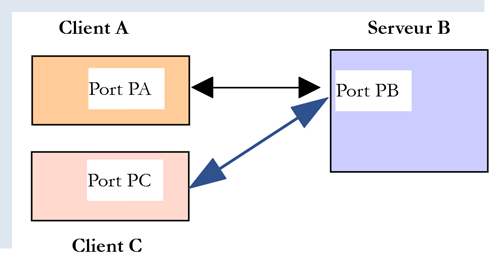
- Client A est l'application Thunderbird ;
- Client C est l'application web de Gmail ;
- Serveur B est le serveur IMAP de Gmail ;
L'arbre des dossiers de l'utilisateur est maintenu par le serveur IMAP. Ensuite tous les clients IMAP se synchronisent sur lui pour présenter à l'utilisateur les dossiers de son compte. Ici Thunderbird a envoyé plusieurs commandes pour :
- créer le dossier [dossier1] ;
- transférer des messages dans ce dossier ;
21.7.2. script [imap/main] : client IMAP avec le module [imaplib]
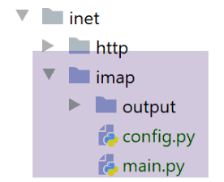
Le script [imap/main] est configuré par le script [imap/config] suivant :
import os
def configure() -> dict:
# configuration de l'appli
config = {
# liste des boîtes à lettres à gérer
"mailboxes": [
# server : serveur IMAP
# port : port du serveur IMAP
# user : utilisateur dont on veut lire les messages
# password : son mot de passe
# maxmails : le nombre maximum de mail à télécharger
# timeout : délai d'attente maximal d'une réponse du serveur
# delete : à vrai s'il faut supprimer du serveur les messages téléchargés
# ssl : à vrai si la lecture des mails se fait au travers d'une liaison sécurisée
# output : le dossier de rangement des messages téléchargés
{
"server": "imap.gmail.com",
"port": "993",
"user": "pymail2parlexemple@gmail.com",
"password": "#6prIlhD&@1QZ3TG",
"maxmails": 10,
"ssl": True,
"timeout": 2.0,
"output": "output"
}
]
}
# chemin absolu du dossier du script
script_dir = os.path.dirname(os.path.abspath(__file__))
# chemins absolus des dossiers à inclure dans le syspath
absolute_dependencies = [
# dossier local
f"{script_dir}/../shared",
]
# configuration du syspath
from myutils import set_syspath
set_syspath(absolute_dependencies)
# on rend la configuration
return config
Commentaires
- lignes 8-29 : la clé [mailboxes] est associée à la liste des boîtes à lettres à consulter ;
- ligne 20 : le serveur IMAP ;
- ligne 21 : son port de service ;
- lignes 22-23 : l'utilisateur dont on veut lire les mails ;
- ligne 24 : le nombre maximum de mails qu'on veut lire ;
- ligne 25 : indique s’il faut établir une liaison sécurisée avec le serveur IMAP (True) ou pas (False) ;
- ligne 26 : le délai d'attente maximum d'attente d'une réponse du serveur ;
- ligne 27 : dossier de sauvegarde des mails lus ;
Le script [imap/main] est le suivant :
# imports
import email
import imaplib
import os
import shutil
# -----------------------------------------------------------------------
def readmails(mailbox: dict):
…
# main ----------------------------------------------------------------
# client IMAP permettant de lire des mails
# on récupère la configuration de l'application
import config
config = config.configure()
# on traite les boîtes mail une par une
for mailbox in config['mailboxes']:
try:
# affichage console
print("----------------------------------")
print(
f"Lecture de la boîte mail POP3 {mailbox['user']} / {mailbox['server']}:{mailbox['port']}")
# lecture de la boîte mail
readmails(mailbox)
# fin
print("Lecture terminée...")
# except BaseException as erreur:
# # on affiche l'erreur
# print(f"L'erreur suivante s'est produite : {erreur}")
finally:
pass
Commentaires
- lignes 14-36 : nous retrouvons la démarche déjà rencontrée dans le script |pop3/02/main| ;
La fonction [readmails] est la suivante :
def readmails(mailbox: dict):
# on laisse remonter les exceptions
#
# module du parseur de mail
from mail_parser import save_message
# on récupère des informations de configuration
output = mailbox['output']
user = mailbox['user']
password = mailbox['password']
timeout = mailbox['timeout']
server = mailbox['server']
port = int(mailbox['port'])
maxmails = mailbox['maxmails']
ssl = mailbox['ssl']
#
# c'est parti
imap_resource = None
try:
# on crée les dossiers de stockage s'ils n'existent pas
if not os.path.isdir(output):
os.mkdir(output)
# user
dir2 = f"{output}/{user}"
# on supprime le dossier [dir2] s'il existe puis on le recrée
if os.path.isdir(dir2):
# suppression
shutil.rmtree(dir2)
# création
os.mkdir(dir2)
# connexion au serveur IMAP
if ssl:
imap_resource = imaplib.IMAP4_SSL(server, port)
else:
imap_resource = imaplib.IMAP4(server, port)
# timeout des communications du client
sock = imap_resource.socket()
sock.settimeout(timeout)
# authentification
imap_resource.login(user, password)
# on sélectionne le dossier INBOX (courrier entrant)
imap_resource.select('INBOX')
# on récupère tous les messages de ce dossier : critère ALL
# pas d'encoding particulier : None
typ1, data1 = imap_resource.search(None, 'ALL')
# print(f"typ={typ1}, data={data1}")
# data1[0] est un tableau d'octets réunissant les n°s de tous les messages séparés par un espace
nums = data1[0].split()
imail = 0
fini = imail >= maxmails or imail >= len(nums)
# on lit les mails un à un
while not fini:
# num est un n° de message en binaire
num = nums[imail]
# print(f"message n° {num}")
# on récupère le msg n° num
typ2, data2 = imap_resource.fetch(num, '(RFC822)')
# print(f"type={typ2}, data={data2}")
# data est une liste qui contient des tuples, ici un seul
# data[0] est le tuple, data[0][1] est le deuxième élément du tuple
# data[0][1] contient une suite d'octets représentant toutes les lignes du message
# par message il faut entendre texte du message + tous les fichiers attachés
# on récupère le message comme type email.message.Message
message = email.message_from_bytes(data2[0][1])
# dossier du message
dir3 = f"{dir2}/message_{int(num)}"
# si le dossier n'existe pas, on le crée
if not os.path.isdir(dir3):
os.mkdir(dir3)
# on le sauvegarde
save_message(dir3, message)
# message suivant
imail += 1
fini = imail >= maxmails or imail >= len(nums)
finally:
if imap_resource:
# on ferme la connexion avec la mailbox
imap_resource.close()
# on se déconnecte du serveur IMAP
imap_resource.logout()
Commentaires
- lignes 7-15 : on récupère les éléments de la configuration ;
- lignes 19, 79 : le code est contrôlé par un try / finally. On n'intercepte donc pas les exceptions (absence de la clause except) qui vont alors remonter au code appelant qui les arrête et les affiche ;
- lignes 23-30 : on crée le dossier de sauvegarde des mails ;
- lignes 31-35 : on se connecte au serveur IMAP. La classe utilisée est différente selon qu'on a affaire à un serveur IMAP sécurisé (IMAP4_SSL) ou pas (IMAP4) ;
- lignes 36-38 : on fixe le timeout des communications client / serveur ;
- lignes 39-40 : on s'authentifie auprès du serveur IMAP ;
- lignes 41-42 : on a vu que la boîte mail d'un utilisateur IMAP pouvait être organisée en dossiers. Le dossier [INBOX] est celle du courrier entrant. Pour sélectionner le dossier [dossier1] on écrirait [imapResource.select('dossier1')] ;
- lignes 43-45 : on demande la liste de tous les messages trouvés dans [INBOX] :
- le 1er paramètre de [imapResource.search] est un type d'encodage. [None] signifie "pas de filtre sur l'encodage" ;
- le 2e paramètre est un critère. Il y a différentes façons d'exprimer celui-ci. Le critère [ALL] signifie qu'on veut tous les messages du dossier ;
Le résultat de [imapResource.search] ressemble à ceci :
typ=OK, data=[b'1 2']
[data] est une liste qui contient les n°s des messages obtenus. Ceux-ci sont en binaire. Ci-dessus, deux messages ont été trouvés dans le dossier [INBOX] ;
- ligne 49 : on récupère les n°s des messages. Ci-dessus on aura la liste [b'1' b'2'], une liste de numéros codés en binaire ;
- lignes 53-78 : on va boucler pour lire les messages du dossier [INBOX] ;
- lignes 54-55 : n° du message ;
- lignes 58-59 : le message n° [num] est demandé au serveur IMAP ;
- le 1er paramètre est le n° du message désiré ;
- le second paramètre est une chaîne "(part1)(part2)…" où [parti] est le nom d'une partie du message. Je n'ai pas approfondi ce point. Le nom (RFC822) désigne la totalité du mail ;
On reçoit quelque chose de la forme suivante :
type=OK, data=[(b'1 (RFC822 {614}', b'Return-Path: guest@localhost\r\nReceived: from [127.0.0.1] (localhost [127.0.0.1])\r\n\tby DESKTOP-528I5CU with ESMTPA\r\n\t; Tue, 17 Mar 2020 09:41:50 +0100\r\nTo: guest@localhost\r\nFrom: "guest@localhost" <guest@localhost>\r\nSubject: test\r\nMessage-ID: <2572d0f0-5b7c-2c31-5a70-c628293d5709@localhost>\r\nDate: Tue, 17 Mar 2020 09:41:48 +0100\r\nUser-Agent: Mozilla/5.0 (Windows NT 10.0; WOW64; rv:68.0) Gecko/20100101\r\n Thunderbird/68.6.0\r\nMIME-Version: 1.0\r\nContent-Type: text/plain; charset=utf-8; format=flowed\r\nContent-Transfer-Encoding: 8bit\r\nContent-Language: fr\r\n\r\nh\xc3\xa9l\xc3\xa8ne est all\xc3\xa9e au march\xc3\xa9 acheter des l\xc3\xa9gumes.\r\n\r\n'), b')']
L'élément [data] est ici une liste à 1 élément et cet unique élément est un tuple de trois éléments :
data = [
(b'1 (RFC822 {614}',
b'Return-Path: guest@localhost\r\nReceived: from [127.0.0.1] (localhost [127.0.0.1])\r\n\tby DESKTOP-528I5CU with ESMTPA\r\n\t; Tue, 17 Mar 2020 09:41:50 +0100\r\nTo: guest@localhost\r\nFrom: "guest@localhost" <guest@localhost>\r\nSubject: test\r\nMessage-ID: <2572d0f0-5b7c-2c31-5a70-c628293d5709@localhost>\r\nDate: Tue, 17 Mar 2020 09:41:48 +0100\r\nUser-Agent: Mozilla/5.0 (Windows NT 10.0; WOW64; rv:68.0) Gecko/20100101\r\n Thunderbird/68.6.0\r\nMIME-Version: 1.0\r\nContent-Type: text/plain; charset=utf-8; format=flowed\r\nContent-Transfer-Encoding: 8bit\r\nContent-Language: fr\r\n\r\nh\xc3\xa9l\xc3\xa8ne est all\xc3\xa9e au march\xc3\xa9 acheter des l\xc3\xa9gumes.\r\n\r\n'),
b')'
]
Le second élément de ce tuple est une chaîne binaire représentant la totalité du message demandé. On reconnaît ci-dessus, des éléments déjà présentés lors de l'étude du module [mail_parser].
data[0] représente un tuple à deux éléments. data[0][1] représente les lignes du message sous une forme binaire.
- ligne 68 : la fonction [email.message_from_bytes(data2[0][1])] construit un objet de type [email.message.Message] à partir des lignes du message. Le type [email.message.Message] est le type du paramètre du module [mail_parser] que nous avons écrit précédemment ;
- lignes 69-73 : nous créons le dossier de sauvegarde du message n° [num] ;
- ligne 75 : nous faisons appel à la fonction [save_message] du module [mail_parser] de la ligne 5. Cette fonction a été décrite au paragraphe |pop3/02/main| ;
- lignes 76-78 : on reboucle pour traiter le message suivant ;
- lignes 79-84 : qu'il y ait eu erreur ou pas :
- ligne 82 : on clôt la connexion avec le dossier interrogé ;
- ligne 84 : on se déconnecte du serveur IMAP ;
Les résultats obtenus sont identiques à ceux obtenus avec le script [pop3/02/main]. C'est normal puisque c'est le même parseur de mail [mail_parser] qui est utilisé.